![MATHEMETICS ALIVE - Number System in Real Life Healthy food - Nutritious value is shown in pictures. The nutritious measurement in milk shake is given. Milk shake measurement 250ml The nutritious measurement in vertical line is 250ml and in 100ml 775Kj/250ml In first horizontal line Energy is given as and 310Kj/100ml In second horizontal line Protein is given as 9.0g/250ml and 3/69/100ml In third horizontal line Fat- total is given as 10.3g/250ml and 4.1g/100ml In fourth horizontal line Saturated is given as 6.0g/250ml and 2.4g/100ml In fifth horizontal line Carbohydrate is given as 11.8g/250ml and 4.7g/100ml In sixth horizontal line Sugars is given as 11.8g/250ml and 4.7g/100ml In seventh horizontal line Sodium is given as 145mg/250ml and 58mg/100ml In Eight horizontal line Calcium is given as 308mg/250ml [38% RDI] and 123mg/100ml The mushroom nutrition facts is given in a circle which is divided in four parts. In the middle of the circle, mushroom picture is given the first part describe the calories, in which 56KCAL/100g is given. The second part describe the fat present in mushroom in which 0.2g/100g is given. The saturated fat is given as 0.1g, no unsaturated fat is given as 0.1g and polyunsaturated is 0.0g The third part describes the protein present in mushroom 1.6g/100g is given. The fourth part describes the carbohydrates present in mushroom is 14.4g/100g, fiber is given as 2.1g/100g and sugar is given as 3.6g/100g.](images/image-4.png)
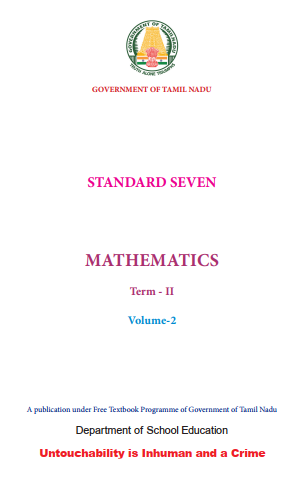
Government of Tamil Nadu
First Edition 2019
Revised Edition 2022
(Published under New syllabus in Trimester Pattern)
NOT FOR SALE
Content Creation
State Council of Educational
Research and Training
© S C E R T 2019
Printing & Publishing
Tamil Nadu Textbook and Educational
Services Corporation
Mathematics is a unique symbolic language in which the whole world works and acts accordingly. This text book is an attempt to make learning of Mathematics easy for the student’s community.
Mathematics is not about numbers, equations, computations or algorithms; it is about understanding
William Paul Thurston
The main goal of Mathematics in School Education is to mathematise the child’s thought process. It will be useful to know how to mathematise than to know a lot of Mathematics
|
CONTENTS |
|
Chapter |
Title |
Page Number |
Chapter 1 |
Page Number 1 to 20 |
|
Chapter 1.1 |
Introduction |
Page Number 2 |
Chapter 1.2 |
Representing a Decimal Number |
Page Number 4 |
Chapter 1.3 |
Fractions and Decimals |
Page Number 9 |
Chapter 1.4 |
Comparison of Decimals |
Page Number 15 |
Chapter 1.5 |
Representing Decimal Numbers on the Number Line |
Page Number 17 |
Chapter 2 |
Page Number 21 to 41 |
|
Chapter 2.1 |
Introduction |
Page Number 21 |
Chapter 2.2 |
Circle |
Page Number 22 |
Chapter 2.3 |
Circumference of a Circle |
Page Number 23 |
Chapter 2.4 |
Area of the Circle |
Page Number 28 |
Chapter 2.5 |
Area of Pathways |
Page Number 34 |
Chapter 3 |
Page Number 42 to 64 |
|
Chapter 3.1 |
Introduction |
Page Number 42 |
Chapter 3.2 |
Exponents and Powers |
Page Number 43 |
Chapter 3.3 |
Laws of Exponents |
Page Number 46 |
Chapter 3.4 |
Unit Digit of Numbers in Exponential Form |
Page Number 53 |
Chapter 3.5 |
Degree of Expression |
Page Number 57 |
Chapter 4 |
Page Number 65 to 88 |
|
Chapter 4.1 |
Introduction |
Page Number 67 |
Chapter 4.2 |
Application of Angle Sum Property of Triangle |
Page Number 67 |
Chapter 4.3 Chapter 4.4 |
Exterior Angles Congruency of Triangles |
Page Number 69 Page Number 75 |
Chapter 5 |
Page Number 89 to 99 |
|
Chapter 5.1 |
Introduction |
Page Number 89 |
Chapter 5.2 |
Tables and Patterns Leading to Linear Functions |
Page Number 89 |
Chapter 5.3 |
Pascal’s Triangle |
Page Number 93 |
|
ANSWERS |
Page Number 100 to 106 |
|
GLOSSARY |
Page Number 107 |
Learning Objectives
● To recall the decimal notation and to understand the place value in decimals.
● To learn the concepts of decimals as fractions with denominators of tens and its
powers.
● To represent decimal numbers on number line.
Recap
Decimal Numbers
Kala and Kavin went to a stationery shop to buy pencils. Their conversation is given below.
Kala: What is the price of a pencil?
Shopkeeper: The price of a pencil is four rupees and fifty paisa
Kala: Ok sir. Give me a pencil.
Kavin: We usually express the bill amount in rupees and paisa as decimals. So, the price of a pencil can be expressed as 4rupee.50paise. Here 4 is the integral part and 50 is the decimal part. The dot represents the decimal point. (After a week of time in the class room)
Teacher: We have studied about fractions and decimal numbers in earlier classes. Let us recall decimals now. Kala and kavin, can you measure the length of your pencils?
Kavin: Both the pencils seem to be of same length. Shall we measure and check?
Kala: Ok Kavin. The length of my pencil is 4 centimetre 3 millimetre (Figure. 1.1).
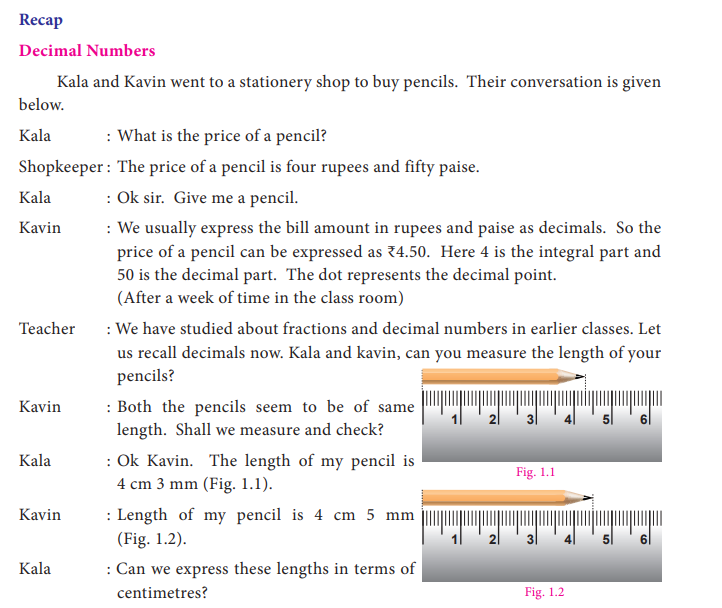
Kavin: Length of my pencil is 4 centimetre 5 millimetre (Figure. 1.2).
Kala: Can we express these lengths in terms of centimetres?
Kavin: Each centimetre is divided into ten equal parts known as millimetres. Do you remember that we have studied about tenths? I can say the length of my pencil as 4 and 5 tenths of a centimetre.
Kala: Since 1 millimetre equal to 1divided by 10 centimetre or one tenth of a centimetre, it can be represented as 4.5 centimetre.
Kavin: Then the length of your pencil is 4.3 centimetre. Is it right?
Teacher: Both of you are right. Now we will further study about decimal numbers.
Try these
1. Observe the following and write the fraction of the shaded portion and mention in decimal form also.
1)
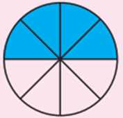
2)
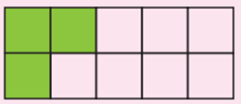
3)
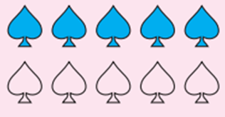
2. Represent the following fractions in decimal form by converting denominator into ten or powers of 10
Serial Number |
Fraction |
Decimal form |
Serial Number 1 |
3 by 5 |
Express in decimal form |
Serial Number 2 |
4 by 10 |
Express in decimal form |
Serial Number 3 |
2 by 4 |
Express in decimal form |
Serial Number 4 |
4 by 20 |
Express in decimal form |
Serial Number 5 |
7 by 10 |
Express in decimal form |
3. Give any two life situations where We use decimal numbers
Consider the following situation. Ravi has planned to celebrate Pongal festival in his native place, Kanthapuram. He has purchased dress materials and groceries for the celebration. The details are furnished below
Bill 1
ABC Textiles
Serial Number. |
Particulars |
Rate (in Rupee) per metre |
Length of the material |
Price (Rupee) |
Serial Number 1. |
Pant material |
120 rupees |
Length 4.75 metre |
Price 570.00 rupees |
Serial Number 2. |
Shirt material |
108 rupees |
Length 5.25 metre |
Price 567.00 rupees |
Serial Number 3. |
Churidar material |
150 rupees |
Length 4.50 metre |
Price 675.00 rupees |
Serial Number 4. |
Saree |
960 rupees Per Saree |
Length 5.50 metre |
Price 960.00 rupees |
Bill 2
XYZ Groceries
Serial Number |
Item |
Rate (in Rupee) |
Quantity |
Price (Rupee) |
Serial Number 1. |
Rice |
60 rupees per Kilogram |
Quantity 1.000 Kilogram |
Price 60.00 rupees |
Serial Number 2. |
Dhall |
85 rupees per Kilogram |
Quantity 0.500 Kilogram |
Price 42 rupees 50 paise |
Serial Number 3. |
Jaggery |
40 rupees per Kilogram |
Quantity 1.750 Kilogram |
Price 70.00 rupees |
Serial Number 4. |
Ghee |
420 rupees per Kilogram |
Quantity 0.250 Kilogram |
Price 105.00 rupees |
Serial Number 5. |
Nuts |
800 rupees per Kilogram |
Quantity 0.100 Kilogram |
Price 80.00 rupees |
Serial Number 6. |
Coconuts |
25 rupees |
Quantity 5 |
Price 125.00 rupees |
Serial Number 7. |
Banana |
60 rupees per dozen |
Quantity 1dozen |
Price 60.00 rupees |
Serial Number 8. |
Sugarcane |
50 rupees |
Quantity 2 |
Price 100.00 rupees |
|
|
|
TOTAL |
Price 642 rupees 50 paise |
What do you observe in the bills shown above? The prices are usually represented in decimals. But the quantities of length are represented in terms of metre and centimetre and that of weight are represented in terms of kilograms and grams. To express the quantities in terms of higher units, we use the concept of decimals.
1 Observe the following pictures which represent tens, ones and tenths
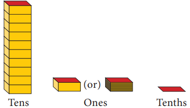
For example, the decimal number 3.2 is 3 ones and 2 tenths that can be represented using the pictorial representations as follows.
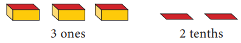
Similarly, any decimal number can be represented as above
BOX ITEM
Try these
Represent the following decimal numbers pictorially.
(1) 5 ones and 3 tenths
(2) 6 tenths
(3) 7 ones and 9 tenths
(4) 6 ones and 4 tenths
(5) Seven tenths
We have studied about place value of digits of a number in primary classes. Now let us extend our learning of place values to decimal digits of a number. Let us recall the expanded form of a number. Consider the number 3768.
The expanded form of 3768 is given by 3 Multiplied by 1000 + 7 Multiplied by 100 + 6 Multiplied by 10 + 8. Now, let us consider a decimal number 235.68 Expressing the decimal number in the expanded form, we get
235.68 equal to 200 + 30 + 5 + 6 divided by 10 + 8 divided by 100
equal to 2 Multiplied by 100 + 3 Multiplied by 10 + 5 Multiplied by 1+ 6 Multiplied by 1 divided by ÷10 + 8 Multiplied by 1 divided by 100
BOX ITEM
Think
The above expression can also be expressed in terms of powers of 10 as follows
235.68 equal to 2 Multiplied by 10 power 2 + 3 Multiplied by 10 power 1 + 5 Multiplied by 10 power 0 + 6 Multiplied by 10 power minus 1 + 8 Multiplied by 10 power minus 2 Hence, in any number, when we move towards right from one digit to the next, the place value of a digit is divided by 10 power 1
Representing the two numbers 3768 and 25.6 in the place value grid, we get
Place value |
Thousand |
Hundred |
Tens |
Ones |
3768 |
3 Thousand |
7 Hundred |
6 Tens |
8 Ones |
Place value |
Tens |
Ones |
Tenths |
25.6 |
2 Tens |
5 Ones |
6 Tenths |
In the beginning of this chapter, we came across the discussion about the length of the pencils of Kavin and Kala. Those lengths can also be represented in the place value grid as follows.
Length of Kavin’s pencil is 4 and 5 tenths of a centimetre
Place value |
Ones |
Tenths |
4.5 |
4 ones |
5 tenths |
Length of Kala’s pencil is 4 and 3 tenths of a centimetre
Place value |
Ones |
Tenths |
4.3 |
4 ones |
3 tenths |
We know that the digit to the right of one’s place is known as tenths and the point is called decimal point which separates the integral part and decimal part of a number. In the above situation, we have expressed numbers with one decimal digit in place value grid. Now to express numbers with two decimal digits in place value grid, let us consider the example already discussed in the introduction part. Ravi has purchased dress materials for Pongal festival. The length of the paent material is 4 metre 75 centimetre. To express the centimetre in terms of metres, we proceed as follows.
We know that
100 centimetre equal to 1 metre
1 centimetre equal to 1 divided by (100) metre
Therefore, one centimetre can be represented as one hundredth of a metre. Similarly, 75 centimetre equal to 75 divided by 100 equal to 0.75 metre So the length of the paent material is 4 + 0.75 metre That is 4.75 metre. It can be read as four and seventy five hundredths of a metre or four point seven five metres.
Note
The decimal digits of a number have to be read as separate digits
BOX ITEM
Try these
1. Express the following decimal numbers in an expanded form and place value grid form.
1) 56.78
2) 123.32
3) 354.56
2. Express the following measurements in terms of metre and in decimal form. One is done for you.
Serial Number |
Measurements |
In Metre |
Decimal form |
Serial Number 1. |
7metre 36 centimetre |
7 and 36 hundredths of a metre |
7.36 |
Serial Number 2. |
26metre 50 centimetre |
Express in metre |
Express in Decimal form |
Serial Number 3. |
93centimetre |
Express in metre |
Express in Decimal form |
Serial Number 4. |
36metre 60 centimetre |
Express in metre |
Express in Decimal form |
Serial Number 5. |
126metre 45 centimetre |
Express in metre |
Express in Decimal form |
3. Write the following numbers in the place value grid and find the place value of the underlined digits.
1) 36.37 (The first place after the decimal is underlined)
2) 267.06 (The second place after the decimal is underlined)
3) 0.23 (The first place after the decimal is underlined)
4) 27.69 (The second place after the decimal is underlined)
5) 53.27 (The first place after the decimal is underlined)
Note that the tenth and hundredth place values of a number can be written as 1 divided by 10, and 1 divided by 100 respectively.
Example 1.1 Represent the following decimal numbers pictorially.
1) 0.3
2) 3.6
3) 2.7
4) 11.4
Solution
![Image A tabular column is divided into 5 rows and 3 columns in which serial numbers in the first column, decimal number in the second column and its pictorial representation in the third column is given In serial number 1 decimal number 0.3 and its Pictorial representation of 3 tenths (that is 1 tenth is equal to 1 cube divided in to ten parts) is given In serial number 2 decimal number 3.6 and its Pictorial representation of 3 point 6 that is 3 ones and 6 tenths is given In serial number 3 decimal number 2.7 and its Pictorial representation of 2 point 7 that is 2 ones and 7 tenths is given In serial number 4 decimal number 11.4 and its Pictorial representation of 11 point 4 that is 1 tens, 1 ones and 4 tenths is given](images/image16.png)
Example 1.2 Write the following in the place value grid and find the place value of the underlined digits.
1) 0.37 (The second place after the decimal is underlined)
2) 2.73 (The first place after the decimal is underlined)
3) 28.271 (The second place after the decimal is underlined)
Serial Number |
Tens |
Ones |
Tenths |
Hundredths |
Thousandths |
Serial Number 1 |
|
0 Ones |
3 Tenths |
7 Hundredths |
|
Serial Number 2 |
|
2 Ones |
7 Tenths |
3 Hundredths |
|
Serial Number 3 |
2 Tens |
8 Ones |
2 Tenths |
7 Hundredths |
1 Thousandths |
1) The place value of 7 in 0.37 is Hundredth.
2) The place value of 7 in 2.73 is Tenth.
3) The place value of 7 in 28.271 is Hundredth.
Example 1.3 The height of ye person is 165 centimetres. Express this height in metre.
Solution
Given, height of the person equal to 165centimetre.
Hence, the height of the person equal to 165 divided by 100equal to 1.65 metre.
Since, 1 centimetre equal to 1 divided by 100 metre equal to 0.01 metre
Example 1.4 Praveen goes trekking with his friends. He has to record the distance in kilometres in his sports book. Can you help him? The trekking record for four days are given below
1) 4 metre
2) 28 metre
3) 537 metre
4) 3983 metre
Solution
1) 4 metre equal to 4 divided by 1000 kilo metre equal to 0.004 kilometre
2) 28 metre equal to 28 divided by 1000 kilometre equal to 0.028 kilometre
3) 537 metre equal to 537 divided by 1000 kilometre equal to 0.537 kilometre
4) 3983 metre equal to 3983 divided by 1000 kilometre equal to 3.983 kilometre
So, Praveen's trekking record is 0.004kilometre, 0.028kilometre, 0.537kilometre, 3.983kilometre.
Since, 1 m equal to 1 divided by 1000 Km equal 0.001Km
Example 1.5 Express the numbers given in expanded form in the place value grid. Also write its decimal representation.
1) 3+ 5 divided by 10 + 3 divided by 100 + 4 divided by 1000
2) 40+ 6 + 7 divided by 10+ 2 divided by 100 +6 divided by 1000
Solution
1) 3+ 5÷10 + 3 divided by 100 + 4 divided by 1000
Tens |
Ones |
Tenths |
Hundredths |
Thousandths |
0 Tens |
3 Ones |
5 Tenths |
3 Hundredths |
4 Thousandths |
3+ 5 divided by 10 + 3 divided by 100 + 4 divided by 1000 equal to 3.534
2) 40+ 6 + 7 divided by 10+ 2 divided by 100 +6 divided by 1000
Tens |
Ones |
Tenths |
Hundredths |
Thousandths |
4 Tens |
6 Ones |
7 Tenths |
2 Hundredths |
6 Thousandths |
40+ 6 + 7 divided by 10+ 2 divided by 100 +6 divided by 1000 equal to 46.726
EXERCISE 1.1
1. Write the decimal numbers for the following pictorial representation of numbers.
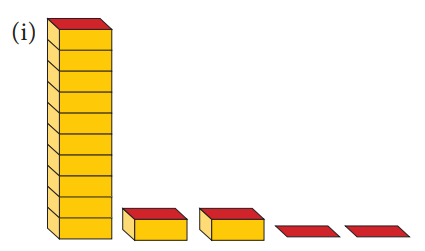
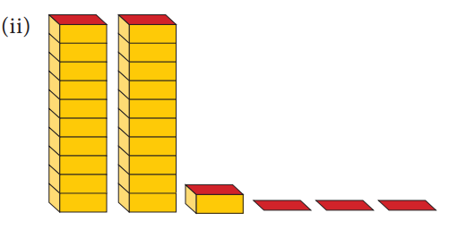
2. Express the following in centimetre using decimals.
1) 5millimetre
2) 9millimetre
3) 42millimetre
4) 8centimetre 9 millimetre
5) 375millimetre
3. Express the following in metres using decimals.
1) 16centimetre
2) 7centimetre
3) 43centimetre
4) 6 metre 6 centimetre
5) 2 metre 54 centimetre
4. Expand the following decimal numbers.
1) 37.3
2) 658.37
3) 237.6
4) 5678.358
5. Express the following decimal numbers in place value grid and write the place value of the underlined digit.
1) 53.61 (the first place after the decimal is underlined)
2) 263.271 (the first place after the decimal is underlined)
3) 17.39 (the second place after the decimal is underlined)
4) 9.657 (the second place after the decimal is underlined)
5) 4972.068 (the third place after the decimal is underlined)
Objective type questions
6. The place value of 3 in 85.073 is Dash
1) tenths
2) hundredths
3) thousands
4) thousandths
7. To convert grams into kilograms, we have to divide it by
1) 10000
2) 1000
3) 100
4) 10
8. The decimal representation of 30 kilograms and 43 gram is dash kilogram.
1) 30.43
2) 30.430
3) 30.043
4) 30.0043
9. A cricket pitch is about 264 centimetre wide. It is equal to dash metre.
1) 26.4
2) 2.64
3) 0.264
4) 0.0264
Let us see the relationship between fractions and decimals.
We are familiar with fraction as ye part of a whole. The place value of the decimal digits of ye number are tenths (1 divided by 10), hundredths (1 divided by 100), thousandths (1 divided by 1000) and so on.
If the denominator of ye fraction is any of 10,10 square, 10 cube so on. we can express them as decimals. Consider the example of distributing ye box of 10 pencils to ten students. The portion of pencils given to 6 students will be 6 by 10 which can be expressed as 0.6.
If the denominator of ye fraction is any number that can be made as powers of 10 using the concept of equivalent fractions, then it can also be expressed as decimals. Consider the example of sharing 5 peanut cakes among five friends. The share of one person is 1 by 5. To represent this fraction as ye decimal number, we first convert the denominator into 10. This can be done by writing the equivalent fraction of 1 by 5, namely 2 by 10. Now the decimal representation of 2 by 10 is 0.2
BOX ITEM
Think
Can you express the denominators of all fractions as powers of 10?
As we convert fractions into ye decimal number, the decimal numbers can also be expressed as fractions. For example, let the price of brand ‘x’ slippers be 399.95 rupees Expanding the above price, we get, 399.95 equal to 3 multiplied by 100+ 9 multiplied by 10 + 9 multiplied by 1 + 9 multiplied by 1 divided by 10 + 5 multiplied by 1 divided by 100
Equal to 399 + 95 divided by 100equal to 39995 divided by 100 equal to 7999 divided by 20
Similarly, if the price of brand ‘y’ slipper is 159.95 rupees, then it can be expressed in terms of fractions as below.
159.95 equal to 159+95 divided by 100 equal to 15995 divided by 100 equal to 3199 divided by 20
BOX ITEM
Try these
1. Convert the following fractions into the decimal numbers.
1) 16 by 1000
2) 638 by 10
3) 1 by 20
4) 3 by 50
2. Write the fraction for each of the following:
1) 6 hundreds + 3 tens + 3 ones + 6 hundredths + 3 thousandths.
2) 3 thousands + 3 hundreds + 4 tens + 9 ones + 6 tenths.
3. Convert the following decimals into fractions.
1) 0.0005
2) 6.24
Example 1.6 Write the shaded portion of the figures given below as ye fraction and as ye decimal number.
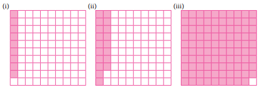
solution
Number |
Shaded Portions |
Fraction |
Decimal number |
Number 1 |
9 squares out of 100 squares |
Fraction 9 by 100 |
Decimal number 0.09 |
Number 2 |
18 squares out of 100 squares |
Fraction 18 by 100 |
Decimal number 0.18 |
Number 3 |
99 squares out of 100 squares |
Fraction 99by100 |
Decimal number 0.99 |
Example 1.7 Express the following fractions as decimal numbers.
1) 3 by 5
2) 5 by 100
Solution
1) 3 by 5 equal to 6 by 10 equal to 0.6
2) 5 by 100 equal to 0.05
Example 1.8 Write the following fractions as decimals.
1) 2 by 5
2) 3 by 4
3) 9 by 1000
4) 1 by 50
5) 3 1 by 5
Solution
1) We have to find ye fraction equivalent to 2by5 whose denominator is10.
2) by 5 equal to 2 multiplied by 2 by 5 multiplied by 2 equal to 4 by 10 equal to 0. 4
2) We have to find ye fraction equivalent to 3 by 4 with denominator 100. Since there is no whole number that gives 10 when multiplied by 4, let us make the denominator as 100.
So, 3 by 4 equal to 3 multiplied by 25by 4 multiplied by 25 equal to 75 by 100 equal to 0.75
3) In 9 by 1000, tenth and hundredth place is zero.
Therefore, 9 by 1000 equal to 0.009
4) We have to find ye fraction equivalent to 1by50 whose denominator is 100.
1 by 50 equal to 1 multiplied by 2 by 50 multiplied by 2 equal to 2 by100 equal to 0.02
5) In 3 1 by 5, keep the whole number 3 as such, we can find ye fraction equivalent to 1by5 with denominator 10.
3+1 by 5 equal to 3+1 multiplied by 2by 5 multiplied by 2 equal to 3 + 2 by 10 equal to 3.2
Example 1.9 Convert the following into simplest fractions.
1) 0.04
2) 3.46
3) 0.862
Solution
1) 0.04 equal to 4 divided by 100 equal to 1 by 25
2) 3.46 equal to 3+ 46 by 100
equal to 3+ (46 divided by 2) by (100 divided by 2)
equal to 3 +23 by 50
equal to 3 23 by 50
3) 0.862 equal to 862 divided by 1000
equal to (862 divided by 2) by (1000 divided by 2) equal to 431 by 500
Example 1.10 Find the decimal form of the following fractions.
1) 153 + 96 + 7 + 5 by 10+ 2 by 1000
2) 999 + 99 + 9 + 9 by 10 + 9 by 100
3) 23 + 6 by 10 + 8 by 1000
Solution
1) 153 + 96 +7+ 5 by10 +2by1000 equal to 256 + 5 multiplied by 1by10 + 0 multiplied by 1by100 + 2 multiplied by 1 by 1000
equal to 256.502 (since hundredths place is not there, it is taken as '0')
2) 999 + 99 + 9+ 9 by 10+ 9 by100 equal to1107+ 9 multiplied by 1by10 + 9 multiplied by 1 by 100 equal to 1107.99
3) 23+ 6 by 10 + 8 by 1000 equal to 23+ 6 multiplied by 1 by 100 + 0 multiplied by 1 by 100 + 8 multiplied by 1 by 1000
equal to 23.608 (since hundredths place is not there, it is taken as '0')
Example 1.11 Write each of the following as decimals.
1) Four hundred four and five hundredths
2) Two and twenty five thousandths.
Solution
1) Four hundred four and five hundredths.
equal to Four hundred and four+ 5 by 100
equal to Four hundred and four + 0 multiplied by 1 by10 + 5 multiplied by 1by100 equal to 404.05
2) Two and twentyfive thousandths
equal to 2 + 25 by1000
equal to 2 + 2 by100 + 5 by 1000
[since, 25 by 1000 equal to (20+5) by1000 equal to 20 by 1000+5 by1000 equal to 2 by 100+5 by 1000]
equal to 2+ 0 by10 +2 by100 + 5 by1000 equal to 2.025 [as there is no tenth we take it as 0 tenth]
Note
For any decimal number, number of zeroes in the denominator and number of decimal digits are equal.
Example 1.12 Express the following as fractions
1) A capsule contains 0.85 milligram of medicine.
2) A juice container has 4.5 litres of mango juice.
Solution
1) 0.85 equal to 0+ 8 divided by 10 +5 divided by 100
equal to 85 by100 equal to 17 by 20
A capsule holds 17 by 20 milligram of medicine.
2) 4.5 equal to 4 +5 divided by 10
equal to 4 5 by10 equal to four one by 2
A juice container has four and half litres of mango juice.
Do You Know
A decimal is ye fraction written in ye special form. Decimal comes from the Latin
word 'decimus' which means tenth. It comes from the root word 'decem'
Exercise 1.2
1). Fill in the following place value table.
Serial. Number. |
Decimal form |
Hundreds |
Tens (10) |
Ones (1) |
Tenths 1 divided by 10 |
Hundredths 1 divided by 100) |
Thousandths 1 divided by 1000) |
Serial. Number 1. |
Decimal form 320.157 |
3 Hundreds |
Express in tens |
0 Ones |
1 Tenths |
5 Hundredths |
7 Thousandths |
Serial. Number 2. |
Decimal form 103.709 |
1 Hundreds |
0 Tens |
3 Ones |
Express in tenths |
0 Hundredths |
9 Thousandths |
Serial. Number 3. |
Decimal form 4.003 |
0 Hundreds |
0 Tens |
4 Ones |
0 Tenths |
Express in Hundredths |
Express in Thousandths |
Serial. Number 4. |
Decimal form 360.805 |
3 Hundreds |
Express in tens |
Express in ones |
8 Tenths |
0 Hundredths |
Express in Thousandths |
2). Write the decimal numbers from the following place value table.
Serial. Number |
Hundreds (100) |
Tens (10) |
Ones (1) |
Tenths 1 divided by 10 |
Hundredths 1 divided by 100) |
Thousandths 1 divided by 1000) |
Decimal form |
Serial. Number 1. |
8 Hundreds |
0 Tens |
1 Ones |
5 Tenths |
6 Hundredths |
2 Thousandths |
Express in Decimal form |
Serial. Number 2. |
9 Hundreds |
3 Tens |
2 Ones |
0 Tenths |
5 Hundredths |
6 Thousandths |
Express in Decimal form |
Serial. Number 3. |
0 Hundreds |
4 Tens |
7 Ones |
5 Tenths |
0 Hundredths |
9 Thousandths |
Express in Decimal form |
Serial. Number 4. |
5 Hundreds |
0 Tens |
3 Ones |
0 Tenths |
0 Hundredths |
7 Thousandths |
Express in Decimal form |
Serial. Number 5. |
6 Hundreds |
8 Tens |
0 Ones |
3 Tenths |
1 Hundredths |
0 Thousandths |
Express in Decimal form |
Serial. Number 6. |
1 Hundreds |
0 Tens |
9 Ones |
9 Tenths |
0 Hundredths |
8 Thousandths |
Express in Decimal form |
3. Write the following decimal numbers in the place value table.
1) 25.178
2) 0.025
3) 428.001
4) 173.178
5) 19.54
4. Write each of the following as decimal numbers.
1) 20 + 1 + 2 divided by 10 + 3 divided by 100 + 7 divided by 1000
2) 3 + 8 divided by 10 + 4 divided by 100 + 5 divided by 1000
3) 6 + 0 divided by 10 + 0 divided by 100 + 9 divided by 1000
4) 900 + 50 + 6 + 3 divided by 100
5) 6 divided by 10 + 3 divided by 100 +1 divided by 1000
5. Convert the following fractions into decimal numbers.
1) 3 by 10
2) 3 1 by 2
3) 3 3 by 5
4) 3 by2
5) 4 by 5
6) 99 by100
7) 3 19 by25
6. Write the following decimals as fractions.
1) 2.5
2) 6.4
3) 0.75
7. Express the following decimals as fractions in lowest form.
1) 2.34
2) 0.18
3) 3.56
Objective type questions
8. 3+ 4 by 100 + 9 by 1000 equal to ?
1) 30.49
2) 3049
3) 3.0049
4) 3.049
9. 3 by 5 equal to Dash
1) 0.06
2) 0.006
3) 6
4) 0.6
10. The simplest form of 0.35 is
1) 35 by 1000
2) 35 by 10
3) 7 by 20
4) 7 by 100
Let us see Bob Beamon's Long Jump record of 1968 summer Olympics which stood for 23 years. His record was 8.90 metre. This record was broken by Carl Lewis and Mike Powell in 1991, World championship held at Tokyo, Japan. Carl Lewis jumped 8.91 metre and Powell jumped 8.95 metre. Can you compare these distances?
We follow these steps to compare decimals.
Step:1 Compare the whole number part of the two numbers. The decimal number that has the greater whole number part is greater.
Step:2 If the whole number part is equal, then compare the digits at the tenths place. The decimal number that has the larger tenths digit is greater.
Step:3 If the whole number part and the digits at the tenths place are equal, compare the digits at the hundredths place. The decimal number that has the larger hundredth digit is greater. The same procedure can be extended to any number of decimal digits.
Let us now compare the numbers 45.55 and 45.5. In this case, we first compare the whole number part. We see that the whole number part for both the numbers are equal. So, we now compare the tenths place. We find that for 45.55 and 45.5, the tenth place is also equal. Now we proceed to compare hundredth place. The hundredth place of 45.5 is 0 and that of 45.55 is 5. Comparing the hundredths place, we get 0 less than 5.
Therefore, 45.50 less than 45.55
Note
Zeros added to the right end of decimal digits do not change the value of that decimal
number
Example 1.13 Velan bought 8.36 kilogram of potato and Sekar bought 6.29 kilogram of potato. Which is heavier?
Solution
Compare 8.36 and 6.29
Comparing the whole number part, we get 8 greater than 6.
Therefore, 8.36 greater than 6.29
Example 1.14 Two automatic ice cream machines ye and B designed to fill cups with 100 millilitre
of ice cream were tested. Two cups of ice creams, one from machine ye and one from machine B are weighed and found to be 99.56 millilitre from machine ye and 99.65 millilitre from machine B. Can you say which machine gives more quantity of ice creams?
Solution
Compare 99.56 and 99.65
Here the whole number parts of the given two numbers are equal.
Comparing the digits at tenths place, we get 5 less than 6.
Therefore, 99.56 less than 99.65
Example 1.15 A standard art paper is about 0.05millimetre thick and matte coated paper is 0.09 millimetre thick. Can you say which paper is morethick?
Solution
Compare 0.05 and 0.09
By using the steps given above, the integral parts and tenths places are equal. By comparing the hundredth place, we get 5 less than 9. Therefore, 0.05 less than 0.09.
So far, we discussed about the comparison of two decimal numbers. Extending this, we can arrange the given decimal numbers in ascending or descending order.
Example 1.16 Now let us arrange the long jump records of students in ye school for 3 years in ascending order
1) 1st year 4.90 metre
2) 2nd year 4.91 metre
3) 3rd year 4.95 metre
Solution
The whole number parts of the three decimal numbers are equal.
The digits at tenths place are also equal.
The digits at hundredths place are 0, 1 and 5. Here 0 less than1 less than 5
Therefore, the ascending order is 4.90, 4.91, 4.95.
Note
The descending order is 4.95,4.91,4.90
Example 1.17 Megala and Mala bought two watermelons weighing 13.523 kilogram and 13.52 kilogram. Which is ye heavier one?
Solution
13.523 equal to 10 +3 +5 divided by 10 +2 divided by 100 + 3 divided by 1000
13.52 equal to 10 +3 +5 divided by 10 +2 divided by 100 + 0 divided by 1000
In this case, the two numbers have same digits up to hundredths place. But the thousandth place of 13.523 is 3, which is greater than 0, which is the thousandth place of 15.32. So, 13.523 greater than 13.520
Note
3 point 300 and 3 point 3 are the same.3 point 300 equal to 3 point 3
Exercise 1.3
1. Compare the following decimal numbers and find out the smaller number.
1) 2.08, 2.086
2) 0.99, 1.9
3) 3.53, 3.35
4) 5.05, 5.50
5) 123.5, 12.35
2. Arrange the following in ascending order.
1) 2.35, 2.53, 5.32, 3.52, 3.25
2) 123.45, 123.54, 125.43, 125.34, 125.3
3. Compare the following decimal numbers and find the greater number.
1) 24.5, 20.32
2) 6.95, 6.59
3) 17.3, 17.8
4) 235.42, 235.48
5) 0.007, 0.07
6) 4.571, 4.578
4. Arrange the given decimal numbers in descending order.
1) 17.35, 71.53, 51.73, 73.51, 37.51
2) 456.73, 546.37, 563.47, 745.63 457.71
Objective type questions
5. 0.009 is equal to Dash
1) 0.90
2) 0.090
3) 0.00900
4) 0.900
6. 37.70 Dash 37.7
1) equal
2) less than
3) greater than
4) not equal
7. 78.56 Dash 78.57
1) less than
2) greater than
3) equal
4) not equal
We have already learnt to represent fractions on a number line. Now let us see the representation of decimal numbers on a number line. Consider the decimal number 0.8. That is there are 8 tenths equal (8 divided by 10) We know that 0.8 is more than 0 and less than 1.
Let us divide the unit length into ten equal parts and take 8 parts as shown below.
Draw a number line and divide the intervals into ten equal parts. Now 0.8 lies between 0 and 1.
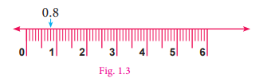
Can we represent 1.4 on a number line? Let us see now. 1.4 has one and four tenths in it. So it lies between 1 and 2. It is marked on the number line as shown below
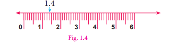
Box item
Try these
1. Mark the following decimal numbers on the number line.
1) 0.3
2) 1.7
3) 2.3
2. Identify any two decimal numbers between 2 and 3.
3. Write any decimal number which is greater than 1 and less than 2
Exercise 1.4
1. Write the decimal numbers represented by the points P, Q, R and S on the given number line.
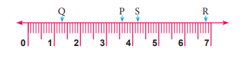
2. Represent the following decimal numbers on the number line.
1) 1.7
2) 0.3
3) 2.1
3. Between which two whole numbers, the following decimal numbers lie?
1) 3.3
2) 2.5
3) 0.9
4. Find the greater decimal number in the following.
1) 2.3, 3.2
2) 5.6, 6.5
3) 1.2, 2.1
5. Find the smaller decimal number in the following.
1) 25.3, 25.03
2) 7.01, 7.3
3) 5.6, 6.05
Objective type questions
6. Between which two whole numbers 1.7 lie?
1) 2 and 3
2) 3 and 4
3) 1 and 2
4) 1 and 7
7. The decimal number which lies between 4 and 5 is Dash
1) 4.5
2) 2.9
3) 1.9
4) 3.5
Exercise 1.5
Miscellaneous practice problems
1. Write the following decimal numbers in the place value table.
1) 247.36
2) 132.105
2. Write each of the following as decimal number.
1) 300 +5 + 7 divided by 10 + 9 divided by 100 + 2 divided by 1000
2) 1000+ 400+ 30 + 2 +6 divided by 10 +7 divided by 100
3 Which is greater?
1) 0.888 (or) 0.28
2) 23.914 (or) 23.915
4. In a 25metre swimming competition, the time taken by 5 swimmers ye, B, C, D and E are 15.7 seconds, 15.68 seconds, 15.6 seconds, 15.74 seconds and 15.67 seconds respectively. Identify the winner.
5. Convert the following decimal numbers into fractions.
1) 23.4
2) 46.301
6. Express the following in kilometres using decimals.
1) 256 metres
2) 4567 metres
7. There are 26 boys and 24 girls in ye class. Express the fractions of boys and girls as decimal numbers.
Challenge Problems
8. Write the following amount using decimals.
1) 809 rupees 99 paisa
2) 147 rupees 70 paisa
9. Express the following in metres using decimals.
1) 1328centimetres
2) 419 centimetres
10. Express the following using decimal notation.
1) 8 metres 30 centimetres in metres
2) 24 kilometres 200 metres in kilometres
11. Write the following fractions as decimal numbers.
1) 23 by 10000
2) 421 by 100
3) 37 by 10
12. Convert the following decimals into fractions and reduce them to the lowest form.
1) 2.125
2) 0.0005
13. Represent the decimal numbers 0.07 and 0.7 on ye number line.
14. Write the following decimal numbers in words.
1) 4.9
2) 220.0
3) 0.7
4) 86.3
15. Between which two whole numbers the given numbers lie?
1) 0.2
2) 3.4
3) 3.9
4) 2.7
5) 1.7
6) 1.3
16. By how much is 9by10 kilometre less than 1 kilometre. Express the same in decimal form.
Summary
● (1 by 10) (one tenth) of a unit can be written as 0.1 in decimal notation.
● The dot represents the decimal point and it comes between one’s place and tenths place.
● The place value of the decimal digits of a number are tenths (1 divided by 10), hundredths (1 divided by 100), thousandths (1 divided by 1000) and so on.
● In any number, when we move towards right from one digit to the next, the place value of a digit is divided by 10 power 1
● If the denominator of a fraction is any of 10, 10 power 2, 10 power3.we can express them as decimals.
● If the denominator of a fraction is any number that can be made as powers of 10 using the concepts of equivalent fractions, then it can also be expressed as decimals.
● To compare two decimal numbers, we compare the digits from left to right
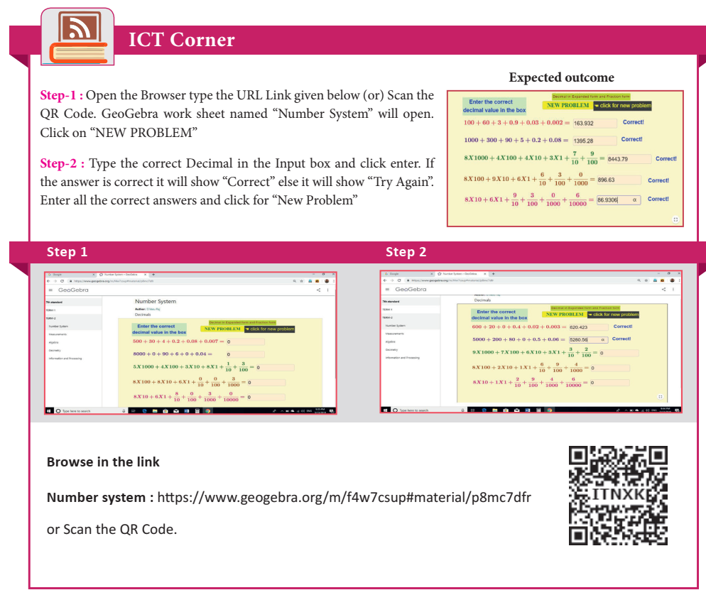

Learning Objectives
● To understand the concepts of area and circumference of circle.
● To understand the area of circular and rectangular pathways.
We have already studied that closed shapes such as rectangle and square having area and perimeter. Pasting of tiles on ye wall, paving a parking lot with stones, fencing a field or ground etc., are some of the places where the knowledge of area and perimeter of rectangle are essential. In this chapter, we extend this concept to circles. The best example of ye circle is the wheel. The invention of wheel is perhaps the greatest achievement of mankind.
The teacher shows the following pictures of wheel and asks questions as given below:

Teacher: Bharath, can you tell me what is the name of the picture given in Figure 2.1?
Bharath: Yes Madam, wheel of ye bicycle.
Teacher: Sathish, would you tell me what is in Figure2.2?
Sathish: Yes Madam, it is a wheel of ye car.
Teacher: Suresh, will you name the shape of both figure?
Suresh: Yes Madam, they are circular in shape.

Teacher: Yes, you are right. Now Mary, will you tell me the distance covered by the wheel when it rotates once.
Mary: I don’t know madam.
Teacher: Ok How do we measure the distance around the circle? We cannot measure the curves with the help of ye ruler, as these shapes do not have straight edges. But there is ye way to measure the distance around the circle. Mark ye point on its boundary. Place the wheel on the floor in such ye way that the marked point coincides with the floor. Take it as the initial point. Rotate the wheel once on the floor along ye straight line till the marked point again touches the floor. The distance covered by it is the distance around the outer edge of ye circle. That is, circumference.
Suresh: Teacher, is there any other way to find the distance?
Teacher: Yes, mark ye point on its boundary and using ye thread and scale we can measure its length.
We are now going to discuss the circumference and area of the circle
Box item

In our daily life, we come across circular shapes in various places. For understanding of circular shapes, first let us see how to trace ye circle through an activity.
Activity

Put a pin on ye board, put a loop of string around it, and insert a pencil into the loop. Keep the string stretched and draw with the pencil. The pencil traces out ye circle. What happens if we change the position of the pin? Do we get the same circle or a different circle? Can we make the string longer? Do we get ye circle of the same size? Can we change the pencil to a pen? What happens to the circle? Yes, changing the pen to pencil or sketch pen will only change the colour of the circle but changing the position of the pin and length of the string will change the place where the circle is drawn and also the size of the circle. These two quantities namely, the position of the pin and the length of the string are important to specify the circle.
The position of the pin on the board is the centre (O) of the circle. The length of the string is the radius (r) of the circle.
While tracing a circle, the two positions of the string which falls on ye straight line is the diameter (d) of the circle. It is twice the radius (d equal to 2r).
Box item

2 Find the diameter of your bicycle wheel?
3 If the diameter of the circle is 14cm, what will be its radius?
4. If the radius of a bangle is 2 inches then find the diameter.
Activity
Calculating the perimeter of a circle:
Make the students to draw five circles with different radii on ye paper and instruct them to measure the radius, diameter and circumference of each of the circle using thread and scale. Note down the measurements in the following table.)
Circle |
Radius (r) |
Diameter (d) |
Circumference (C) |
Ratio of Circumference to diameter |
Circle 1 |
Express its radius |
Express its Diameter |
Express its circumference |
Express its ratio of circumference to diameter |
Circle 2 |
Express its radius |
Express its Diameter |
Express its circumference |
Express its ratio of circumference to diameter |
Circle 3 |
Express its radius |
Express its Diameter |
Express its circumference |
Express its ratio of circumference to diameter |
Circle 4 |
Express its radius |
Express its Diameter |
Express its circumference |
Express its ratio of circumference to diameter |
Circle 5 |
Express its radius |
Express its Diameter |
Express its circumference |
Express its ratio of circumference to diameter |
What do you infer from the above table? Can you conclude that the circumference of ye circle is always greater than three times its diameter?
All circles are similar to one another. So, the ratio of the circumference to that of diameter is ye constant, that is Circumference divided by Diameter equal to constant [say (pi)] Its approximate value is 3.14. Therefore C divided by d equal to pi The diameter is twice the radius (2r), so the above equation can be written as C divided by 2r equal to pi Therefore, the circumference of circle, C equal to 2 pi r units.

Obviously now, we see that Circumference, C equal to pi d and d equal to 2r. Thus, for any circle with ye given ‘r’ or ‘d’, we can find ‘C’ and vice versa.
Do You Know?

1. Calculation of decimal digits of pi is an interesting task among mathematicians.
2. The constant pi was used in the construction of popular pyramids of Egypt.
3.Computers helped mathematicians to calculate the value of pi with more than 12 trillion decimal digits.
Box item
Think
A circle has the shortest perimeter of all closed figure with the same area. Justify
with an example
Example 2.1 Calculate the circumference of the bangle shown in Figure. 2.5 (Take pi equal to 3.14).
Solution

Given, d equal to 6centimetre, d equal to 2r equal to 6centimetre, r equal to 3centimetre
Circumference of a circle equal to 2 pi r units
equal to 2 pi multiplied by 3
equal to 18.84
The circumference is 18.84 centimetre.
Example 2.2 What is the circumference of the circular disc of radius 14 centimetre? (use pi equal to 22 by 7)
Solution
Radius of circular disc (r) equal to 14 centimetres
Circumference of the disc equal to 2 pi r units
equal to 2 multiplied by 22 by 7 multiplied by 14equal to 88 centimetres
Example 2.3 If the circumference of the circle is 132 metre. Then calculate the radius and diameter (Take pi equal to 22by7).
Solution
Circumference of the circle, C equal to 2 pi r units

The circumference of the given circle equal to 132 metre
C by 2 pi equal to r
r equal to 132 divided by (2 multiplied by 22by7)
equal to 132 by 2 multiplied by 7 by 22
r equal to 21 metre
d equal to 2 r equal to 2 multiplied by 21equal to 42 metre
Example 2.4 What is the distance travelled by the tip of the seconds hand of a clock in 1 minute, if the length of the hand is 56 milli metre (use pi equal to 22 by 7).
Solution
Here the distance travelled by the tip of the seconds hand of ye clock in 1 minute is the circumference of the circle and the length of the seconds hand is the radius of the circle. So, r equal to 56millimetre

Circumference of the circle, C equal to 2 pi r units
equal to 2 multiplied by 22 by 7 multiplied by 56equal to 2 multiplied by 22 multiplied by 8equal to 352millimetre
Therefore, distance travelled by the tip of the seconds hand of ye clock in 1 minute is 352 milli metre.
Example 2.5 The radius of ye tractor wheel is 77centimetre Calculate the distance covered by it in 35 rotations? (use pi equal to 22 by 7)

Solution
The distance covered in one rotation equal to the circumference of the circle
equal to 2 pi r units equal to 2 multiplied by 22 by 7 multiplied by 77
equal to 2 multiplied by 22 multiplied by 11 equal to 484 centimetre
The distance covered in one rotation equal to 484 centimetres
The distance covered in 35 rotations equal to 484 multiplied by 35equal to 16940centimetre
Example 2.6 A farmer wants to fence his circular poultry farm with barbed wire whose radius is 420 metre. The cost of fencing is 12 rupees per metre. He has 30,000 rupees with him. How much more amount will be needed to fence his farm? (Here pi equal to 22 by 7)
Solution
The radius of the poultry farm is equal to 420 metre.
The length of the barbed wire for fencing the poultry farm is equal to the circumference of the circle.
We know that the circumference of the circle equal C equal to 2 pi r units
equal to 2 multiplied by 22 by 7 multiplied by 420
equal to 2 multiplied by 22 multiplied by 60
The length of the barbed wire to fence the poultry farm equal to 2640 metre.
The cost of fencing the poultry farm at the rate of 12 rupees per metre equal to 2640 multiplied by 12 equal to 31,680 rupees
Given that he has 30,000 rupees with him.
The excess amount required equal to 31,680 rupees minus 30,000 rupees equal to 1,680 rupees.
Example 2.7 Find the perimeter of the given shape (Figure.2.9) (Take pi equal to 22 by 7).

Solution
In this shape, we have to calculate the circumference of semicircle on each side of the rectangle. The outer boundary of this figure is made up of semicircles of two different sizes. Diameters of each of the semicircles are 7 centimetres and 14 centimetres. We know that the circumference of the circle C equal to pi d units.
Circumference of the semi circular part equal to 1 by 2 multiplied by pi d units
Hence, the circumference of the semicircle having diameter 7 centimetres is,
Equal to 1 by 2 multiplied by 22 by 7 multiplied by 7 equal to 11 centimetres
Circumference of the pair of semi circular parts (2 and 4) equal to 2 multiplied by 11 equal to 22 centimetres
Similarly, circumference of the semicircle having diameter 14 centimetres is,
equal to 1by2 multiplied by 22by7 multiplied by 14 equal to 22 centimetres
Circumference of the pair of semi circular parts (1 and 3) equal to 2 multiplied by 22 equal to 44 centimetres.
Perimeter of the given shape equal to 22 + 44 equal to 66 centimetres.
Example 2.8 Kannan divides ye circular disc of radius 14 centimetres into four equal parts.
What is the perimeter of ye quadrant shaped disc? (use pi equal to 22by7)

Solution
To find the perimeter of the quadrant disc, we need to find the circumference of quadrant shape.
Given that radius (r) equal to 14 centimetres.
We know that the circumference of circle equal to 2 pi r units.

So, the circumference of the quadrant arc equal to 1 by 4 multiplied by 2 pi r
equal to pi r by 2
equal to 22 by 7 multiplied by 14 by 2
equal to 22 centimetres
Given, the radius of the circle equal to 14 centimetres
Thus, perimeter of required quadrant shaped disc equal to 14 + 14 + 22 equal to 50 centimetres.
Box item
Think
1 Is the circumference of the semi circular arc and semi circular shaped disc same?
Discuss.
2 The traffic lights are circular. Why?
3 When you throw ye stone on still water in pond, ripples are circular. Why?
Exercise 2.1
1. Find the missing values in the following table for the circles with radius (r), diameter (d) and Circumference (C).
Serial Number. |
radius (r) |
diameter (d) |
Circumference (C) |
Serial Number 1 |
radius 15 centimetres |
Express in diameter |
Express in Circumference |
Serial Number 2 |
Express in radius |
Express in diameter |
Circumference 1760 centimetres |
Serial Number 3 |
Express in radius |
diameter 24 metres |
Express in Circumference |
2. Diameters of different circles are given below. Find their circumference (Take pi equal to 22 divided by7).
1) d equal to 70 centimetres
2) d equal to 56 metres
3) d equal to 28 milli metres
3. Find the circumference of the circles whose radii are given below.
1) 49 centimetres
2) 91 millimetres
4. The diameter of ye circular well is 4.2 metres. What is its circumference?
5. The diameter of the bullock cart wheel is 1.4 metres. Find the distance covered by it in 150 rotations?
6. A ground is in the form of ye circle whose diameter is 350 metres An, athlete makes 4 revolutions. Find the distance covered by the athlete.
7. A wire of length 1320 centimetres is made into circular frames of radius 7 centimetres each. How many frames can be made?
8. A Rose Garden is in the form of circle of radius 63 metres. The gardener wants to fence it at the rate of Rupee 150 per metre. Find the cost of fencing?
Objective type questions
9. Formula used to find the circumference of ye circle is
1) 2 pi r units
2) pi r square + 2 r units
3) pi r square square units
4) pi r cube cubic. units
10. In the formula, C equal to 2 pi r, ‘r’ refers to
1) circumference
2) area
3) rotation
4) radius
11. If the circumference of ye circle is 82 pi, then the value of ‘r’ is
1) 41 centimetre
2) 82 centimetre
3) 21 centimetre
4) 20 centimetre
12. Circumference of ye circle is always
1) three times of its diameter
2) more than three times of its diameter
3) less than three times of its diameter
4) three times of its radius
Let us consider the following situation.
A bull is tied with ye rope to ye pole. The bull goes around to eat grass.
What will be the portion of grass that the bull can graze?
Can you tell what is needed to be found in the above situation, Area or Perimeter? In this situation we need to find the area of the circular region.
Let us find ye way to calculate the area (ye) of a circle in terms of known area, that is the area of ye rectangle.
1. Draw a circle on a sheet of paper.

2. Fold it once along its diameter to obtain two semicircles. Shade one half of the circle (Figure. 2.13)

3. Again fold the semicircles to get 4 sectors. Figure. 2.14 shows ye circle divided into four sectors.
The sectors are rearranged and made into ye a shape as shown in Figure. 2.15.

4. Repeat this process of folding to eight folds, then it looks like ye small sectors as shown
in the Figure. 2.16. The sectors are rearranged and made into ye shape as shown in Figure. 2.17.

5. Press and unfold the circle. It is then divided into 16 equal sectors and then into 32 equal sectors. As the number of sectors increase the assembled shape begins to look more or less like a rectangle, as shown in Figure. 2.19.

6. The top and bottom of the rectangle is more or less equivalent to the circumference of the circle. Hence the top of the rectangle is half of the circumference equal to pi r. The height of the rectangle is nearly equivalent to the radius of the circle. When the number of sectors is increased infinitely, the circle can be rearranged to form ye rectangle of length ‘pi r ’and breadth ‘r’.
We know that the area of the rectangle equal to length multiplied by breadth
equal to pi r multiplied by r
equal to pi r square
equal to Area of the circle
So, the area of the circle, ye equal to pi r square squareunits

Activity

Draw circles of different measurements on ye graph sheet. Find the area by counting the number of squares enclosed by the circle. So, we get ye rough estimate of the area of the circle.
Do you know
Designs obtained by spirograph.
Shown below are some shapes using ye spirograph. We can observe that
each of the different designs are circular


Box item
Think
If the area and circumference of the circle are equal to then what will be the value of the
radius?
Example 2.9 Find the area of the circle of radius 21 centimetre (Use pi equal to 3 14)
Solution
Radius (r) equal to 21 centimetres
Area of ye circle equal to pi r square squareunits
equal to 3.14 multiplied by 21 multiplied by 21 equal to 1384.74
Area of the circle equal to 1384.74 squarecentimetres
Example 2.10 Find the area of ye hula loop whose diameter is 28 centimetres (use pi equal to 22by7).

Solution
Given the diameter (d) equal to 28 centimetres
Radius (r) equal to 28 divided by 2 equal to 14 centimetres
Area of ye circle equal to pi r square squareunits.
Equal to 22 by 7 multiplied by 14 multiplied by 14
So, the area of the circle equal to 616 squarecentimetres.
Example 2.11 The area of the circular region is 2464 squarecentimetres. Find its radius and diameter. (use pi equal to 22 by 7)
Solution
Given that the area of the circular region equal to 2464 squarecentimetres
Pi r square equal to 2464
22 by 7 multiplied by r square equal to 2464
r square equal to 2464 multiplied by 7 by 22
r square equal to 112 multiplied by 7 equal to 784

r square equal to 2 multiplied by 2 multiplied by 2 multiplied by 2 multiplied by 7 multiplied by 7
equal to 4 multiplied by 4 multiplied by 7 multiplied by 7
equal to 4 square multiplied by 7 square
r square equal to 4 multiplied by 7 square [r multiplied by r equal to (4 multiplied by 7) multiplied by (4 multiplied by 7)]
r equal to 4 multiplied by 7
equal to 28 centimetres
Diameter (d) equal to 2 multiplied by r equal to 2 multiplied by 28 equal to 56 centimetres.
Example 2.12 A gardener walks around ye circular park of distance 154 metre. If he wants to level the park at the rate of 25 rupees per squaremetre, how much amount will he need? (use pi equal to 22 by 7)
Solution
The distance covered by the man is nothing but the circumference of the circle.
Given that the distance covered equal to 154 metre
Therefore, circumference of the circle equal to 154 metre
That is, 2 pi r equal to 154
2 multiplied by 22 by 7 multiplied by r equal to 154
r equal to 154 multiplied by 7 by 44
r equal to 3.5 multiplied by 7
equal to 24.5
Area of the park equal to pi r square squareunits
Equal to 22 by 7 multiplied by 24.5 multiplied by 24.5
equal to 22 multiplied by 3.5 multiplied by 24.5
equal to 1886.5 squaremetre
Cost of levelling the park per squaremetre equal to 25 rupees.
Cost of levelling the park of 1886.5 squaremetre equal to 1886.5 multiplied by 25 equal to 47,162.50 rupees
Example 2.13 Find the length of the rope by which a cow must be tethered in order that it may be able to graze an area of 9856 squaremetre (use pi equal to 22by7)
Solution
Given that, the area of the circle equal to pi r square equal to 9856 squaremetre
Pi r square equal to 9856
22 by 7 multiplied by r square equal to 9856
r square equal to 9856 multiplied by 7 by 22
r square equal to 448 multiplied by 7 equal to 3136

r square equal to 2 multiplied by 2 multiplied by 2 multiplied by 2 multiplied by 2 multiplied by 2 multiplied by 7 multiplied by 7
r square equal to 8 multiplied by 8 multiplied by 7 multiplied by 7 equal to 8 square multiplied by 7 square equal to (8 multiplied by 7) whole square
r equal to 8 multiplied by 7 equal to 56 metre
Therefore, the length of the rope should be 56 metre.
Example 2.14 A garden is made up of ye rectangular portion and two semi circular regions on either side. If the length and width of the rectangular portion are 16 metre and 8 metre respectively, calculate (pi equal to 3 1. 4)
1 the perimeter of the garden
2 the total area of the garden

Solution
1 the perimeter of the rectangular garden
Perimeter include two lengths each of 16 metre and two semi circular arcs of diameter 8 metre. Circumference of the semicircle equal to pi d by 2 units
Equal to (pi multiplied by 8) by 2 equal to 4 pi
equal to 4 multiplied by 3.14
equal to 12.56 metre.
Therefore, circumference of two semi circles equal to 2 multiplied by 12.56
equal to 25.12 metre.
Total perimeter equal to length + length + circumference of two semi circles equal to 16 +16 + 25.12
equal to 32 + 25.12
equal to 57.12 metre.
2 The total area of the garden
Total area of the garden equal to Area of rectangle + Area of 2 semicircles
equal to Area of rectangle + Area of the circle
Here, the area of the rectangle equal to length multiplied by breadth square. units
equal to 16 multiplied by 8 equal to 128 squaremetre Equation (1)
Area of the circle equal to pi r square squareunits
equal to 3.14 multiplied by 4 multiplied by 4
equal to 3.14 multiplied by 16
equal to 50.24 square metre Equation (2)
From (1) and (2), the total area of garden equal to 128 + 50.24 equal to 178.24 squaremetre

Box item
Try these
Draw circles of different radii on ye graph paper. Find the area by counting the number of squares covered by the circle. Also find the area by using the formula.
1 Find the area of the circle, if the radius is 4.2 centimetre.
2 Find the area of the circle if the diameter is 28 centimetres.
Exercise 2.2
1. Find the area of the dining table whose diameter is 105 centimetres.
2. Calculate the area of the shotput circle whose radius is 2.135 metres.
3. A sprinkler placed at the centre of ye flower garden sprays water covering a circular area. If the area watered is 1386 centimetre square find its radius and diameter.
4. The circumference of ye circular park is 352 metres. Find the area of the park.
5. In a grass land, ye sheep is tethered by ye rope of length 4.9 metres. Find the maximum area that the sheep can graze.

6. Find the length of the rope by which a bull must be tethered in order that it may be able to graze an area of 2464 metresquare
7. Lalitha wants to buy ye round carpet of radius is 63 centimetres for her hall. Find the area that will be covered by the carpet.
8.Thenmozhi wants to level her circular flower garden whose diameter is 49 metre at the rate of 150 rupee per metre square. Find the cost of levelling.
9. The floor of the circular swimming pool whose radius is 7 metre has to be cemented at the rate of 18 rupee per metresquare. Find the total cost of cementing the floor.
Objective type questions
10. The formula used to find the area of the circle is Dash squareunits.
1) 4 pi r square
2) pi r square
3) 2 pi r square
4) pi r square + 2 r
11. The ratio of the area of ye circle to the area of its semicircle is
1) 2 is to 1
2) 1 is to 2
3) 4 is to 1
4) 1 is to 4
12. Area of a circle of radius ‘n’ units is
1) 2 pi r power p squareunits
2) pi m square squareunits
3) pi r square squareunits
4) pi n square squareunits
We come across pathways in different shapes. Here we restrict ourselves to two kinds of pathways namely circular and rectangular.

We observe around us circular shapes where we need to find the area of the pathway. The area of pathway is the difference between the area of outer circle and inner circle. Let capital ‘R’ be the radius of the outer circle and small ‘r’ be the radius of inner circle.
Therefore, the area of the circular pathway equal to pi capital R square minus pi small r square equal to pi (capital R square minus small r square) square. units.

Consider a rectangular park as shown in Figure 2.23. A uniform path is to be laid outside the park. How do we find the area of the path? The uniform path including the park is also ye rectangle. If we consider the path as outer rectangle, then the park will be the inner rectangle. Let small l and small b be the length and breadth of the park. Area of the park (inner rectangle) equal small l x small b square units. Let w be the width of the path. If capital L, capital B are the length and breadth of the outer rectangle, then capital L equal to small l + 2w and capital B equal to small b + 2w
Here, the area of the rectangular pathway
equal to Area of the outer rectangle minus Area of the inner rectangle
equal to (capital L multiplied by capital B minus small l multiplied by small b) squareunits
Example 2.15 A park is circular in shape. The central portion has playthings for kids surrounded by ye circular walking pathway. Find the walking area whose outer radius is 10 metre and inner radius is 3 metre.
Solution
The radius of the outer circle, capital R equal to 10 metre
The radius of the inner circle, small r equal to 3 metre
The area of the circular path equal to area of outer circle minus area of inner circle
equal to pi capital R square minus pi small r square
equal to pi (capital R square minus small r square) squareunits
equal to 22 by 7 multiplied by (10 square minus 3 square)
equal to 22 by 7 multiplied by (10 multiplied by 10) minus (3 multiplied by 3)
equal to 22 by7 multiplied by (100 minus 9)
equal to 22by 7 multiplied by 91
equal to 286 squaremetre

Box item
Try these
1 If the outer radius and inner radius of the circles are respectively 9 centimetre and 6centimetre, find the width of the circular pathway.
2 If the area of the circular pathway is 352 squarecentimetre and the outer radius is 16centimetre, find the inner radius.
3 If the area of the inner rectangular region is 15 squarecentimetre and the area covered by the
outer rectangular region is 48 squarecentimetre, find the area of the rectangular pathway
Example 2.16 The radius of a circular flower garden is 21 metre. A circular path of 14 metre minus wide is laid around the garden. Find the area of the circular path.

Solution
The radius of the inner circle small r equal to 21 metre
The path is around the inner circle.
Therefore, the radius of the outer circle, capital R equal to 21 + 14 equal to 35 metre
The area of the circular path equal to pi (capital R square minus small r square) squareunits
Equal to 22 by 7 multiplied by (35 square minus 21 square)
equal to 22 by 7 multiplied by (35 multiplied by 35) minus (21 multiplied by 21)
equal to 22 by 7 multiplied by (1225 minus 441)
equal to 22 by 7 multiplied by 784
equal to 22 multiplied by 112 equal to 2464 squaremetre
Example 2.17 The radius of a circular cricket ground is 76 metre. A drainage 2 metrewide has to be constructed around the cricket ground for the purpose of draining the rain water. Find the cost of constructing the drainage at the rate of 180 rupees per squaremetre.
Solution
The radius of the inner circle (cricket ground), small r equal to 76metre
A drainage is constructed around the cricket ground.
Therefore, the radius of the outer circle, capital R equal to 76 + 2 equal to 78metre
We have, area of the circular path equal to pi (capital R square minus small r square) squareunits
equal to 22 by 7 multiplied by (78 square minus 76 square)
equal to 22 by 7 multiplied by (6084 minus 5776)
equal to 22 by 7 multiplied by 308
equal to 22 multiplied by 44 equal to 968 squaremetre
Given, the cost of constructing the drainage per squaremetre is 180 rupees.
Therefore, the cost of constructing the drainage equal to 968 multiplied by 180 equal to one lakh seventy four thousand two hundred and fourty rupees.
Example 2.18 A floor is 10 metre long and 8 metre wide. A carpet of size 7 metre long and 5 metre wide is laid on the floor. Find the area of the floor that is not covered by the carpet.
Solution
Here, capital L equal to 10 metre capital B equal to 8 metre Area of the floor equal to capital L multiplied by capital B equal to 10 multiplied by 8 equal to 80 squaremetre
Area of the carpet equal to small l multiplied by small b equal to 7 multiplied by 5 equal to 35 squaremetre
Therefore, the total area of the floor not covered by the carpet equal to 80 minus 35 equal to 45 squaremetre
Example 2.19 A picture of length 23 centimetre and breadth 11 centimetre is painted on a chart, such that there is a margin of 3 centimetre along each of its sides. Find the total area of the margin.
Solution
Here capital L equal to 23 centimetres capital B equal to 11 centimetres
Area of the chart equal to capital L multiplied by capital B
equal to 23 multiplied by 11
equal to 253 squarecentimetres
small l equal to capital L minus 2w equal to 23 minus 2 multiplied by 3 equal to 23 minus 6 equal to 17 centimetres
small b equal to capital B minus 2w equal to 11 minus 2 multiplied by 3 equal to 11 minus 6 equal to 5 centimetres
Area of the picture 17 multiplied by 5 equal to 85 squarecentimetres
Therefore, the area of the margin equal to 253 minus 85equal to 168 squarecentimetres
Example 2.20 A veranda of width 3 metre is constructed along the outside of a room of length 9 metre and width 7 metre. Find (ye) the area of the veranda (b) the cost of cementing the floor of the veranda at the rate of 15 rupees per square. metre.
Solution
Here, small l equal to 9 metre, small b equal to 7 metre
Area of the Room equal to length multiplied by breadth equal to 9 multiplied by 7equal to 63 squaremetre
capital L equal to small l + 2w equal to 8 + 2 multiplied by 3 equal to 8 + 6 equal to 14 metre
capital B equal to small b +2w equal to 5+ 2 multiplied by 3 equal to 5 + 6 equal to 11 metre
Area of the room including veranda equal to capital L multiplied by capital B equal to 14 multiplied by 11 equal to 154 squaremetre
The area of the veranda equal to area of the room including veranda minus Area of the room
equal to 154 minus 63 equal to 91 squaremetre
The cost of cementing the floor for 1 square metre equal to 15 rupees.
Therefore, the cost of cementing the floor of the veranda equal to 91 multiplied by15 equal to 1365 rupees.
Example 2.21 A Kho Kho ground has dimensions 30 metre multiplied by 19 metre which includes ye lobby on all of its sides. The dimensions of the playing area are 27 metre multiplied by 16 metre. Find the area of the lobby.

Solution
From the dimensions of the ground
we have, capital L equal to 30 metre; capital B equal to 19 metre; small l equal to 27 metre; small b equal to 16 metre
Area of the Kho Kho ground equal to capital L multiplied by capital B equal to 30 multiplied by 19 equal to 570 squaremetre
Area of the play field equal to small l multiplied by small b equal to 27 multiplied by 16 equal to 432 squaremetre
Area of the lobby equal to area of Kho Kho ground minus Area of the play field equal to 570 minus 432
Equal to 148 squaremetre
Exercise 2.3
1. Find the area of a circular pathway whose outer radius is 32 centimetres and inner radius is 18 centimetres
2. There is a circular lawn of radius 28 metre. A path of 7 metre width is laid around the lawn. What will be the area of the path?
3. A circular carpet whose radius is 106 centimetres is laid on a circular hall of radius 120 centimetres. Find the area of the hall uncovered by the carpet.
4. A school ground is in the shape of a circle with radius 103 metre. Four tracks each of 3 metrewide has to be constructed inside the ground for the purpose of track events. Find the cost of constructing the track at the rate of 50 rupees per squaremetre.

5. The figure shown is the aerial view of the pathway. Find the area of the pathway. 
6. A rectangular garden has dimensions 11 metre multiplied by 8 metre. A path of 2 metrewide has to be constructed along its sides. Find the area of the path.
7. A picture is painted on a ceiling of a marriage hall whose length and breadth are 18 metre and 7 metre respectively. There is a border of 10 centimetres along each of its sides. Find the area of the border.
8. A canal of width 1 metre is constructed all along inside the field which is 24 metrelong and 15 metre wide. Find (1) the area of the canal (2) the cost of constructing the canal at the rate of 12 rupees per squaremetre.
Objective type questions
9. The formula to find the area of the circular path is
1) pi (capital R square minus small r square) minus squareUnits
2) pi small r square squareUnits
3) 2 pi small r square squareUnits
4) pi small r square + 2 small r squareUnits
10. The formula used to find the area of the rectangular path is
1) pi (capital R square minus small r square) squareUnits
2) (capital L multiplied by capital B) minus (small l multiplied by small b) squareUnits
3) capital L multiplied by capital B squareUnits
4) small l multiplied by small b squareUnits
11. The formula to find the width of the circular path is
1) (capital L minus small l) units
2) (capital B minus small b) units
3) (capital R minus small r) units
4) (small r minus capital R) units
Exercise 2.4
Miscellaneous Practice Problems
1. A wheel of ye car covers ye distance of 3520 centimetres in 20 rotations. Find the radius of the wheel?
2. The cost of fencing ye circular race course at the rate of 8 rupees per metre is 2112 rupees. Find the diameter of the race course.
3. A path 2 metrelong and 1 metre broad is constructed around ye rectangular ground of dimensions 120 metre and 90 metre respectively. Find the area of the path.
4. The cost of decorating the circumference of ye circular lawn of ye house at the rate of 55 rupees per metre is 16940 rupees What is the radius of the lawn?
5. Four circles are drawn side by side in ye line and enclosed by ye rectangle as shown below. If the radius of each of the circles is 3 centimetres, then calculate:
1) The area of the rectangle.
2) The area of each circle.
3) The shaded area inside the rectangle.

Challenge Problems
6. A circular path has to be constructed around a circular lawn. If the outer and inner circumferences of the path are 88centimetres and 44centimetres respectively, find the width and area of the path.
7. A cow is tethered with ye rope of length 35 metre at the centre of the rectangular field of length 76metre and breadth 60metre. Find the area of the land that the cow cannot graze?
8. A path 5metre wide runs along the inside of the rectangular field. The length of the rectangular field is three times the breadth of the field. If the area of the path is 500 metresquare then find the length and breadth of the field.
9. A circular path has to be constructed around a circular ground. If the areas of the outer and inner circles are 1386 metresquare and 616 metresquare respectively, find the width and area of the path.
10. A goat is tethered with a rope of length 45metre at the centre of the circular grass land whose radius is 52metre. Find the area of the grass land that the goat cannot graze.
11. A strip of 4centimetres wide is cut and removed from all the sides of the rectangular cardboard with dimensions 30centimetres multiplied by 20centimetres Find the area of the removed portion and area of the remaining cardboard.
12. A rectangular field is of dimension 20metre multiplied by 15metre. Two paths run parallel to the sides of the rectangle through the centre of the field. The width of the longer path is 2metre and that of the shorter path is 1 metre. Find (1) the area of the paths (2) the area of the remaining portion of the field (3) the cost of constructing the roads at the rate of 10 rupees per squaremetre.

Summary
● Circle is ye round plane figure whose boundary (the circumference) consists of points equidistant from the fixed point (the centre).
● Distance around the circular region is called the circumference or perimeter of the circle.
● Circumference of ye circle, capital C equal to pi small d units, where small ‘d’ is the diameter of ye circle and pi equal to 22 by 7 or 3.14 approximately.
● Area of the circle is the region enclosed by the circle.
● The area of the circle, (ye) equal to pi small r square squareunits, where small ‘r’ is the radius of the circle.
● Area of the circular path equal Area of the outer circle minus Area of the inner circle equal pi capital R square minus pi small r square equal pi (capital R square minus small r square) square. units, where capital ‘R’ and small ‘r’ are radius of the outer and inner circles respectively.
● Area of the rectangular path equal Area of the outer rectangle minus Area of the inner rectangle equal (capital L multiplied by capital B minus small l multiplied by small b) squareunits, where capital L, capital B, and small l, small b are length and breadth of outer and inner rectangles respectively.

Learning Objectives
● To express numbers in the exponential form.
● To understand the laws of exponents.
● To find the unit digit of numbers represented in exponential form.
● To know about the degree of expressions.
Teacher asked students to tell the largest number known to them.
They called out numbers like, ‘Thousand’, ‘Lakh’, ‘Million’, ‘Crore’ and so on.
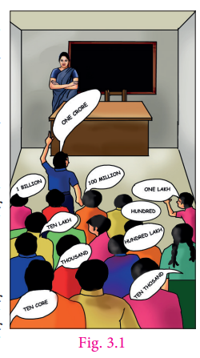
Finally, Kumaran was declared as winner with his number ‘Thousand lakh crore’.
All the students clapped. The teacher also honoured Kumaran and he was extremely happy.
But, everything came to an end as the teacher asked him to write his number on the blackboard. With great difficulty of counting the zeros several times, he wrote as 1000000000000000. Is it correct?
Now, the teacher wrote another five zeros on the right of the number and threw the open challenge to read the number. of course, there was an absolute silence in the classroom.
Dealing with big numbers is not so easy. Isn’t it? But, we do use very big numbers in reality? Here are few examples where we use large numbers in real life situations.
● The distance between the Earth and the Sun is 149600000000 metre.
● Mass of the Earth is 5970000000000000000000000 kilo grams.
● The speed of light is 299792000 metre per seconds.
● Average radius of the Sun is 695000 kilo metre.
● The distance between Moon and the Earth is 384467000 metre.
There exists ye simple and nice way to represent such numbers. To know that we need to learn about exponents.
We can write large numbers in simplified form as given below.
For example, 16 equal to 8 multiplied by2 equal to 4 multiplied by 2 multiplied by 2 equal to 2 multiplied by 2 multiplied by 2 multiplied by 2
Instead of writing the factor 2 repeatedly 4 times, we can simply write it as 2 power 4
It can be read as 2 raised to the power of 4 or 2 to the power of 4 or simply 2 power 4. This method of representing a number is called the exponential form. We say 2 is the base and 4 is the exponent
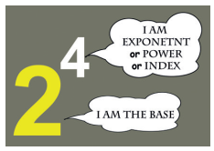
Note
The exponent is usually written at the top right corner of the base and smaller in
size when compared to the base.
Let us look at some more examples,
64 equal to 4 multiplied by 4 multiplied by 4 equal to 4 power 3 (base is 4 and exponent is 3)
64 equal to 8 multiplied by 8 equal to 8 power 2 (base is 8 and exponent is 2)
243 equal to 3 multiplied by 3 multiplied by 3 multiplied by 3 multiplied by 3 equal to 3 power 5 (base is 3 and exponent is 5)
125 equal to 5 multiplied by 5 multiplied by 5 equal to 5 power 3 (base is 5 and exponent is 3)
Remember, when a number is expressed as a product of factors and when the factors are repeated, then it can be expressed in the exponential form. The repeated factor will be the base and the number of times the factor repeats will be its exponent.
We can extend this notation to negative integers also. For example,
minus 125 equal to (minus 5) multiplied by (minus 5) multiplied by (minus 5) equal to (minus 5) power 3 [base is ‘ minus 5’ and exponent is 3]
Hence, (minus 5) power 3 is the exponential form of minus 125
Box item
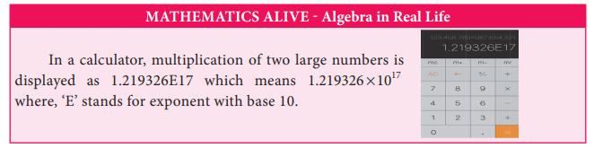
Now, we will see how to express numbers in exponential form.
Let us take any integer as ‘ye’.
Then, ye equal to ye power 1 [‘ye power 1’]
ye multiplied by ye equal to ye power 2 [‘ye power 2’; ‘ye’ is multiplied by itself 2 times]
ye multiplied by ye multiplied by ye equal to ye power 3 [‘ye power 3’; ‘ye’ is multiplied by itself 3 times] so on
ye multiplied by ye multiplied by so on multiplied by ye (n times) equal to ye power n [‘ye power n’; ‘ye’ multiplied by itself n times]
Thus, we can generalize the exponential form as ye power n, where the exponent is ye positive integer (n greater than 0).
Box item
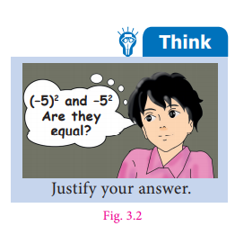
Observe, the following examples. 100 equal to 10 multiplied by 10 equal to 10 power 2
This can also be expressed as the product of two different bases with the same exponent as, 100 equal 25 multiplied by 4 equal to (5 multiplied by 5) multiplied by (2 multiplied by 2) equal to 5 power 2 multiplied by 2 power 2
We notice that 5 and 2 are the bases and 2 is the exponent.
In the same way, ye multiplied by ye multiplied by ye multiplied by b multiplied by b equal to ye power 3 multiply by b power 2
Consider, 35 equal to 7 power 1 multiplied by 5 power 1where there is no repetition of factors. Thus, usually 7 power 1 multiplied by 5 power 1 is represented as 7 multiplied by 5. So, when the power is 1 the exponent will not be explicitly mentioned.
Note
1. The exponents 2 and 3 have special names ‘squared’ and ‘cubed’ respectively. For example, 4 power 2 is read as ‘four squared’ and 4 power 3 is read as ‘four cubed’.
2. The other name of exponent is indices. Do you remember the word ‘indices’? In Class 6, we heard of this word while applying BIDMAS rule in simplification.
For example,
6 power 3 + 4 multiplied by 3 minus 5 equal to (6 multiplied by 6 multiplied by 6) + 4 multiplied by 3 minus 5 [using B I D M A S rule it can be simplified as follows]
equal to 216 + (4 multiplied by 3) minus 5
equal to 216 + 12 minus 5
equal to 228 minus 5
equal to 223
Box item
Try these
Observe and complete the following table. First one is done for you.
Number |
Expanded form |
Exponential Form |
Base |
Exponent |
Number 216 |
Expanded form 6 multiplied by 6 multiplied by 6 |
6 power 3 |
Base 6 |
Exponent 3 |
Number 144 |
Express in expanded form |
12 power 2 |
Express the Base |
Express the exponent |
Express the number |
(minus 5) multiplied by (minus 5) |
Express in Exponential form |
Base minus 5 |
Express the exponent |
Express the number |
Express in expanded form |
m power 5 |
Express the Base |
Express the exponent |
Number 343 |
Express in expanded form |
Express in Exponential form |
Base 7 |
Exponent 3 |
Number 15625 |
25 multiplied by 25 multiplied by 25 |
Express in Exponential form |
Express the base |
Express the exponent |
Example 3.1 Express 729 in exponential form.
Solution
Dividing by 3, we get
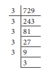
729 equal to 3multipled 3multiplied by3 multiplied by 3 multiplied by 3 multiplied by 3 equal to 3 power 6
Also, 729 equal to 9 multiplied by 9 multiplied by 9 equal to 9 power 3
Example 3.2 Express the following numbers in exponential form with the given base:
1) 1000, base 10
2) 512, base 2
3) 243, base 3.
Solution
1) 1000 equal to 10 multiplied by 10 multiplied by 10 equal to 10 power 3
2) 512 equal to 2 multiplied by 2 multiplied by 2 multiplied by 2 multiplied by 2 multiplied by 2 multiplied by 2 multiplied by 2 multiplied by 2 equal to 2 power 9
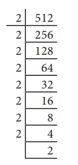
3) 243 equal to 3 multiplied by 3 multiplied by 3 multiplied by 3 multiplied by 3 equal to 3 power 5
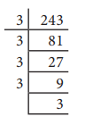
Example 3.3 Find the value of
1) 13 power 2
2) (minus 7) power 2
3) (minus 4 ) power 3
Solution
1) 13 power 2 equal to 13 multiplied by 13 equal to 169
2) (minus 7) power 2 equal (minus 7) multiplied by (minus 7) equal to 49
3) (minus 4) power 3 equal to (minus 4) multiplied by (minus 4) multiplied by (minus 4) equal to 16 multiplied by (minus 4) equal to minus 64
Note
(minus 1) power n equal to minus 1, if n is an odd natural number.
(minus 1) power n equal to 1, if n is an even natural number.
Box Item
Think
Can you find two positive integers ‘ye’ and ‘b’ such that ye power b equal to b power ye? (ye not equal to b)
Example 3.4 Find the value of 2 power 3 +3 power 2
Solution
2 power 3+ 3 power 2 equal to (2 multiplied by 2 multiplied by 2) + (3 multiplied by 3) equal to 8 + 9 equal to 17
DO YOU KNOW
Ancient Tamilians have used lot of greater numbers in their day to day life. Refer to Kanakkathikaram written by ye saint Karinayanar who lived in Tamilnadu during 10th century. More interestingly, they fixed a unique name for every big number. For example, ‘Arpudham’ means Ten crores, ‘Padmam’ means 10 power 14 , ‘Anantham’ means 10 power 29 and the word ‘Avviyatham’ denotes 10 power 35.Pingalandai Nigandu Vaipaadu, an ancient Tamil Mathematics treatise, also confirms the usage of such big numbers. It is ye book of multiplication table
Example 3.5 Which is greater 3 power 4 or 4 power 3?
Solution
3 power 4 equal to 3 multiplied by 3 multiplied by 3 multiplied by 3 equal to 81
4 power 3equal to 4 multiplied by 4 multiplied by 4 equal to 64
81 greater than 64 gives 3 power 4 greater than 4 power 3
Therefore, 3 power 4 is greater.
Example 3.6 Expand ye power 3 b power 2 and ye power 2 b power 3 Are they equal?
Solution
ye power 3 b power 2 equal to (ye multiplied by ye multiplied by ye) multiplied by (b multiplied by b)
ye power 2 b power 3 equal to (ye multiplied by ye) multiplied by (b multiplied by b multiplied by b)
Therefore, ye power 3 b power 2 is not equal to ye power 2 b power 3
Let us learn some rules to multiply and divide exponential numbers with the same base.
Box item
Try these
Simplify and write the following in exponential form.
1. 2 power 3 multiplied by 2 power 5
2. P power 2 multiplied by p power 4
3. x power 6 multiplied by multiplied by power 4
4. 3 power 1 multiplied by 3 power 5 multiplied by 3 power 4
5. (minus 1) whole power 2 multiplied by (minus 1) whole power 3 multiplied by (minus 1) whole power 5
Let us calculate the value of 2 power 3 multiplied by 2 power 2
2 power 3 multiplied by 2 power 2 equal to (2 multiplied by 2 multiplied by 2) multiplied by (2 multiplied by 2)
equal to 2 multiplied by 2 multiplied by 2 multiplied by 2 multiplied by 2 equal to 2 power 5 equal to 2 power 3 + 2
We observe that the base of 2 power 3 and 2 power 2 is the same 2 and the sum of the powers is 5. Now, let us consider negative integers as the base.
(minus 3) power 3 multiplied by (minus 3) power 2 equal to [(minus 3) multiplied by (minus 3) multiplied by (minus 3)] multiplied by [(minus 3) multiplied by (minus 3)]
equal to (minus 3) multiplied by (minus3) multiplied by (minus 3) multiplied by (minus 3) multiplied by (minus 3)
equal to (minus 3) power 5
equal to (minus 3) power 3 + 2
We observe that the base of (minus 3) power 3 and (minus 3) power 2 is the same as (minus 3) and the sum of the power is 5.
Similarly, p power 4 multiplied by p power 2 equal to (p multiplied by p multiplied by p multiplied by p) multiplied by (p multiplied by p) equal to p power 6 equal to p power 4 + 2
Now, for any non zero integer ‘ye’ and whole number ‘m’ and ‘n’, consider ye power m and ye power n
That is, ye power m equal to ye multiplied by ye multiplied by ye multiplied by so on ye (m times) ye power n equal to ye multiplied by ye multiplied by ye multiplied by so on multiplied by ye (n times)
So, ye power m multiplied by ye power n equal to ye multiplied by ye multiplied by ye multiplied by so on multiplied by ye (m times) multiplied by ye multiplied by ye multiplied by ye multiplied by so on multiplied by ye (n times)
equal to ye multiplied by ye multiplied by ye multiplied by so on multiplied by ye (m + n times) equal to ye power m + n
Therefore ye power m multiplied by ye power n equal to ye power m + n
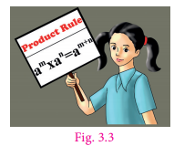
This is called Product Rule of exponents.
Example 3.7 Simplify using Product Rule of exponents.
1) 5 power 7 multiplied by 5 power 3
2) 3 power 3 multiplied by 3 power 2 multiplied by 3 power 4
3) 25 multiplied by 32 multiplied by 625 multiplied by 64
Solution
1) 5 power 7 multiplied by 5 power 3 equal to 5 power 7 + 3 [Since, ye power m multiplied by ye power n equal to ye power m + n] equal to 5 power 10
2) 3 power 3 multiplied by 3 power 2 multiplied by 3 power 4 equal to 3 power 3 + 2 multiplied by 3 power 4 equal to 3 power 5 multiplied by 3 power 4 equal to 3 power 5 + 4 equal to 3 power 9
3) 25 multiplied by 32 multiplied by 625 multiplied by 64
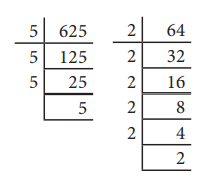
equal to (5 multiplied by 5) multiplied by (2 multiplied by 2 multiplied by 2 multiplied by 2 multiplied by 2) multiplied by (5 multiplied by 5 multiplied by 5 multiplied by 5) multiplied by (2 multiplied by 2 multiplied by 2 multiplied by 2 multiplied by 2 multiplied by 2)
equal to 5 power 2 multiplied by 2 power 5 multiplied by 5 power 4 multiplied by 2 power 6
equal to (5 power 2 multiplied by 5 power 4) multiplied by (2 power 5 multiplied by 2 power 6) [grouping exponential numbers with the same base]
equal to 5 power 2 + 4 multiplied by 2 power 5 + 6 equal to 5 power 6 multiplied by 2 power 11
Let us calculate the value of 2 power 5 divided by2 power 2
2 power 5 divided by2 power 2 equal to (2 multiplied by 2 multiplied by 2 multiplied by 2 multiplied by 2) divided by (2 multiplied by 2) equal to 2 multiplied by 2 multiplied by 2equal to 2 power 3 equal to 2 power 5 minus 2
We observe that the base of 2 power 5 and 2 power 2 is the same ‘2’ and the difference of powers is 3. Now, let us consider negative integers as the base.
Consider (minus 5) power 3 divided by (minus 5) power 2
minus 5 power 3 divided by minus 5 power 2 equal to (minus 5) multiplied by (minus 5) multiplied by (minus 5) divided by (minus 5) multiplied by (minus 5)
equal to (minus 5) power 1 equal to (minus 5) power 3 minus 2
(We observe that the base of (minus 5) power 3 and (minus 5) power 2 is the same as (minus 5) and the difference of the power is 1.
Note
Can you find the value of ye power 2 multiplied by ye power 0?
By Product Rule,
ye power 2 multiplied by ye power 0 equal to ye power 2 + 0
ye power 2 multiplied by ye power 0 equal to ye power 2
ye power 0 equal to ye power 2 divided by ye power 2 equal to 1
[dividing by ye power 2 on both sides]
Therefore, ye power 0 equal to 1, ye not equal to 0
Thus, we can observe that for any non zero integer ‘ye’ and for whole numbers ‘m’ and ‘n’, consider ye power m and a power n, m greater than n
That is, ye power m equal to ye multiplied by ye multiplied by ye multiplied by so on multiplied by ye (m times); ye power n equal to ye multiplied by ye multiplied by ye multiplied by so on multiplied by ye (n times)
ye power m divided by ye power n equal to (ye multiplied by ye multiplied by ye multiplied by so on multiplied by ye (m times) divided by (ye multiplied by ye multiplied by ye multiplied by so on multiplied by ye (n times)
equal to ye multiplied by ye multiplied by ye multiplied by so on multiplied by ye (m minus n times) equal to ye power m minus n
therefore, ye power m divided by ye power n equal to ye power m minus n
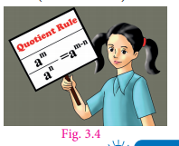
This is called Quotient Rule of exponents.
Example 3.8 Simplify using quotient rule of exponents.
1) 10 power 8 divided by 10 power 6
2) (2 power 8 multiplied by 3 power 5 multiplied by 5 power 4) divided by (3 power 3 multiplied by 5 power 3 multiplied by 2 power 4)
3) 6 power 4 divided by 6 power 0
Solution
1) 10 power 8 divided by 10 power 6 equal to 10 power 8 minus 6 equal to 10 power 2
2) (2 power 8 multiplied by 3 power 5 multiplied by 5 power 4) divided by (3 power 3 multiplied by 5 power 3 multiplied by 2 power 4) equal to 2 power 8 divided by 2 power 4 multiplied by (3 power 5) divided by 3 power 3 multiplied by (5 power 4 divided by 5 power 3) [grouping exponential numbers with the same base]
equal to 2 power 8 minus 4 multiplied by 3 power 5 minus 3 multiplied by 5 power 4 minus 3 equal to 2 power 4 multiplied by 3 power 2 multiplied by 5 power 1 [ye power m divided by ye power n equal to ye power m minus n]
3) 6 power 4 divided by 6 power 0 equal to 6 power 4 minus 0 equal to 6 power 4 (or) 6 power 4 divided by 6 power 0 equal to 6 power 4 divided by 1 equal to 6 power 4 [Since 6 power 0 equal to 1]
Box item
Think
What is Half of 2 power 10? Ragu claims the answer is 2 power 5. Is he correct? Discuss.
Box item
Try these
Simply the following.
1). 23 power 5 divided by 23 power 2
2). 11 power 6 divided by 11 power 3
3). (minus 5) power 3 divided by (minus 5) power 2
4). 7 power 3 divided by 7 power 3
5). 15 power 4 divided by 15
Box item
Try these
Simplify and write the following in exponent form.
1). (3 power 2) whole power 3
2). [(minus 5) power 3] whole power 2
3). (20 power 6) whole power 2
4). (10 power 3) whole power 5
Let us find the value of (2 power 2) whole power 5
(2 power 2) whole power 5 equal to 2 power 2 multiplied by 2 power 2 multiplied by 2 power 2 multiplied by 2 power 2 multiplied by 2 power 2
equal to 2 power 2+2+2+2+2 (By Product rule)
2 power 10 equal to 2 power 2 multiplied by 5
Similarly, (3 power 3) whole power 4 equal to 3 power 3 multiplied by 3 power 3 multiplied by 3 power 3 multiplied by 3 power 3
Equal to 3 power 3 + 3 + 3 + 3 equal to 3 power 12 equal to 3 power 3 multiplied by 4
(5 power 6) whole power 2 equal to 5 power 6 multiplied by 5 power 6 equal to 5 power 6 + 6 equal to 5 power 12 equal to 5 power 6 multiplied by 2
In general, for any non zero integer ‘ye’ and whole number ‘m’ and ‘n’,
(ye power m) whole power n equal to (ye power m multiplied by ye power m.so on multiplied by ye power m) (n times)
equal to ye power m + m + m so on + m (n times)
equal to ye power m multiplied by n
Hence, (ye power m) whole power n equal to ye power m multiplied by n
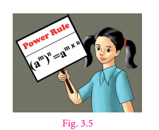
This is called Power Rule of exponents.
Example 3.9 Simplify using power rule of exponents.
1) (8 power 3) whole power 4
2) (11 power 5) whole power 2
3) (2 power 6) whole power 2 multiplied by (2 power 4) whole power 7
Solution
1) (8 power 3) whole power 4 equal to 8 power 3 multiplied by 4 equal to 8 power 12 [Since, (ye power m) whole power n equal to ye power m multiplied by n]
2) (11 power 5) whole power 2 equal to 11 power 5 multiplied by 2 equal to 11 power 10 [Since, (ye power m) whole power n equal to ye power m multiplied by n]
3) (2 power 6) whole power 2 multiplied by (2 power 4) whole power 7 equal to 2 power 6 multiplied by 2 multiplied by 2 power 4 multiplied by 7 equal to [Since, (a power m) whole power n equal to ye power m multiplied by n]
equal to 2 power 12 multiplied by 2 power 28 equal to 2 power 12+28 equal to 2 power 40 [Since, ye power m multiplied by ye power n equal to ye power m + n]
Box item
Think
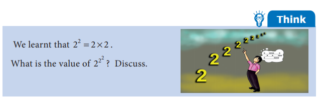
1. To understand the multiplication of exponent numbers with different base and same powers, let us consider the following example,
10 power 5 equal to 10 multiplied by 10 multiplied by 10 multiplied by 10 multiplied by 10
equal to (2 multiplied by 5) multiplied by (2 multiplied by 5) multiplied by (2 multiplied by 5) multiplied by (2 multiplied by 5) multiplied by (2 multiplied by 5)
equal to (2 multiplied by 2 multiplied by 2 multiplied by 2 multiplied by 2) multiplied by (5 multiplied by 5 multiplied by 5 multiplied by 5 multiplied by 5)
10 power 5 equal to 2 power 5 multiplied by 5 power 5
But we know that, 10 equal to 2 multiplied by 5 Hence 10 power 5 equal to (2 multiplied by 5) whole power 5 equal to 2 power 5 multiplied by 5 power 5.
In general, for any non zero integers ‘ye’ and ‘b’ and for whole number ‘m’ (m greater than 0),
ye power m multiplied by b power m equal to ye multiplied by ye multiplied by ye multiplied by so on multiplied by ye (m times) b multiplied by b multiplied by b multiplied by so on multiplied by b (m times)
equal to (ye multiplied by b) multiplied by (ye multiplied by b) multiplied by (ye multiplied by b) multiplied by so on multiplied by (ye multiplied by b) (m times) equal to (ye multiplied by b) whole power m
Therefore, ye power m multiplied by b power m equal to (ye multiplied by b) whole power m
2. To understand the division of exponent numbers with different base and same powers, let us consider the following example,
10 power 5 equal to 10 multiplied by 10 multiplied by 10 multiplied by 10 multiplied by 10
equal to (20 divided by2) multiplied by (20 divided by 2) multiplied by (20 divided by 2) multiplied by (20 divided by 2) multiplied by (20 divided by 2)
equal to (20 multiplied by 20 multiplied by 20 multiplied by 20 multiplied by 20) divided by(2 multiplied by 2 multiplied by 2 multiplied by 2 multiplied by 2)
Therefore, 10 power 5 equal to 20 power 5 divided by 2 power 5 But we know that, 10 equal to (20 divided by 2)
Hence, 10 power 5 equal to (20 divided by 2) whole power 5 equal to 20 power 5 divided by 2 power 5
Hence, for any two non zero integers ‘ye’ and ‘b’ and ye whole number ‘m’ (m greater than 0)
(ye divided by b) power m equal to (ye divided by b) multiplied by (ye divided by b) multiplied by (ye divided by b) multiplied by.so on multiplied by (ye divided by b) (m times)
(ye multiplied by ye multiplied by ye multiplied by ye multiplied by ye (m times) divided by (b multiplied by b multiplied by b multiplied by b multiplied by b (m times) equal to ye power m divided by b power m
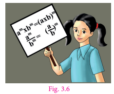
Therefore, equal to (ye divided by b) whole power m equal to ye power m divided by b power m
Box item
Try these
1. Express the following exponent numbers using ye power m multiplied by b power m equal to (ye multiplied by b) whole power m
1) 5 power 2 multiplied by 3 power 2
2) x power 3 multiplied by y power 3
3) 7 power 4 multiplied by 8 power 4
2. Simplify the following exponent numbers by using (ye divided by b) whole power m equal to ye power m by b power m
1) 5 power 3 divided by 2 power 3
2) (minus 2) whole power 4 divided by 3 power 4
3) 8 power 6 divided by 5 power 6
4) 6 power 3 divided by (minus 7) power 3
Example 3.10 Simplify by using the law of exponents.
1) 7 power 6 multiplied by 3 power 6
2) 4 power 3 multiplied by 2 power 3 multiplied by 5 power 3
3) 72 power 5 divided by 9 power 5
4) 6 power 13 multiplied by 48 power 13 divided by 12 power 13
Solution
1) 7 power 6 multiplied by 3 power 6 equal to (7 multiplied by 3) whole power 6 equal to 21 power 6 [Since, ye power m multiplied by b power m equal to (ye multiplied by b) whole power m]
2) 4 power 3 multiplied by 2 power 3 multiplied by 5 power 3 equal to (4 multiplied by 2 multiplied by 5) power 3 equal to 40 power 3
[Rule extended for 3 numbers]
3) 72 power 5 divided by 9 power 5 equal to (72 divided by 9) whole power 5 equal to 8 power 5
[Since, (a power m divided by b power m) equal to (a divided by b) whole power m]
4) 6 power 13multiplied by 48 power 13 divided by 12 power 13 equal to 6 power 13 multiplied by (48 power 13 divided by 12 power 13)
[BIDMAS]
Equal to 6 power 13multiplied by (48 divided by 12) whole power 13 [Since, (ye power m divided by b power m) equal to (ye divided by b) whole power m]
equal to 6 power 13 multiplied by 4 power 13
equal to (6 multiplied by 4) whole power 13 [Since, ye power m multiplied by b power m equal to (ye multiplied by b) whole power m]
equal to (24) power 13
Do You Know?
1. All the 10 digits appear once in the expansion of 32043 power 2. That is, the value of 32043 power 2 equal to 1026753849
2. There are beautiful equations with same exponent consecutive natural numbers as the base.
3 power 2+ 4 power 2 equal to 5 power 2
10 power 2 + 11 power 2 + 12 power 2 equal to 13 power 2 + 14 power 2
Activity
Finding the pair
Divide the classroom into two groups. Each group will have a set of cards. Each member of Group 1
has to pair with one suitable member of Group 2 by stating the reason.
Group 1 |
Group 2 |
3 power 6 multiplied by 3 power 5 |
100 power 3 |
200 power 30 multiplied by 200 power 14 |
20 power 15 multiplied by 30 power 15 |
45 power 6 divided by 45 power 2 |
3 power 11 |
100 power 52 divided by 100 power 49 |
70 power 240 |
(6 multiplied by 7) whole power 3 |
12 power 8 |
(20 multiplied by 30) whole power 15 |
45 power 4 |
(12 power 4) whole power 2 |
200 power 44 |
(70 power 16) whole power 15 |
6 power 3 multiplied by 7 power 3 |
This activity can be extended till all the children in the class are familiarise with the laws of exponents.
Exercise 3.1
1. Fill in the blanks.
1) The exponential form 14 power 9 should be read as Dash
2) The expanded form of p power 3 q power 2 is Dash
3) When base is 12 and exponent is 17, its exponential form is Dash
4) The value of (14 multiplied by 21) whole power 0 is Dash
2. Say True or False.
1) 2 power 3 multiplied by 3 power 2 equal 6 power 5
2) 2 power 9 multiplied by 3 power 2 equal to (2multiplied by 3) whole power 9 multiplied by 2
3) 3 power 4 multiplied by 3 power 7 equal to 3 power 11
4) 2 power 0 equal to (1000) power 0
5) 2 power 3 less than 3 power 2
3. Find the value of the following.
1) 2 power 6
2) 11 power 2
3) 5 power 4
4) 9 power 3
4. Express the following in exponential form.
1) 6 multiplied by 6 multiplied by 6 multiplied by 6
2) t multiplied by t
3) 5 multiplied by5 multiplied by 7 multiplied by 7 multiplied by 7
4) 2 multiplied by 2 multiplied by a multiplied by a
5. Express each of the following numbers using exponential form.
1) 512
2) 343
3) 729
4) 3125
6. Identify the greater number in each of the following.
1) 6 power 3 or 3 power 6
2) 5 power 3 or 3 power 5
3) 2 power 8 or 8 power 2
7. Simplify the following.
1) 7 power 2 multiplied by 3 power 4
2) 3 power 2 multiplied by 2 power 4
3) 5 power 2 multiplied by 10 power 4
8. Find the value of the following.
1) (minus 4) power 2
2) (minus 3) multiplied by (minus 2) power 3
3) (minus 2) power 3 multiplied by (minus 10) power 3
9. Simplify using laws of exponents.
1) 3 power 5 multiplied by 3 power 8
2) a power 4 multiplied by a power 10 power 10
3) 7 power x multiplied by 7 power 2
4) 2 power 5 divided by 2 power 3
5) 18 power 8 divided by 18 power 4
6) (6 power 4) whole power 3
7) (x power m) whole power 0
8) 9 power 5 multiplied by 3 power 5
9) 3 power y multiplied by 12 power y
10) 25 power 6 multiplied by 5 power 6
10. If ye equal 3 and b equal 2 then, find the value of the following.
1) ye power b + b power ye
2) ye power a minus b power b
3) (ye + b) whole power b
4) (ye minus b) whole power ye
11. Simplify and express each of the following in exponential form:
1) 4 power 5 multiplied by 4 power 2 multiplied by 4 power 4
2) (3 power 2 multiplied by 3 power 3) whole power 7
3) (5 power 2 multiplied by 5 power 8) divided by 5 power 5
4) 2 power 0 multiplied by 3 power 0 multiplied by 4 power 0
5) (4 power 5 multiplied by a power 8 multiplied by b power 3) divided by (4 power 3 multiplied by a power 5 multiplied by b power 2)
Objective type questions
12. ye multiplied by ye multiplied by ye multiplied by ye multiplied by ye is equal to
1) ye power 5
2) 5 power ye
3) 5ye
4) ye + 5
13. The exponential form of 72 is
1) 7 power 2
2) 2 power 7
3) 2 power 2 multiplied by 3 power 3
4) 2 power 3 multiplied by 3 power 2
14. The value of x in the equation ye power 13 equal to x power 3 multiplied by a power 10 is
1) ye
2) 13
3) 3
4) 10
15. How many zeros are there in 100 power 10?
1) 2
2) 3
3) 10
4) 20
16. 2 power 40 + 2 power 40 is equal to
1) 4 power 40
2) 2 power 80
3) 2 power 41
4) 4 power 80
Manipulating with exponent is very interesting and funny too.
We know that 9 power 3 equal to 9 multiplied by 9 multiplied by 9 equal to 729, thus the unit digit (the last number of expanded form) of 9 power 3 is 9. Similarly, 4 power 4 is 4 multiplied by 4 multiplied by 4 multiplied by 4 equal to 256 Thus, the unit digit of 4 power 4 is 6.
Can you guess the unit digit of 230 power 116,181 power 47, 55 power 4, 56 power 20 and 9 power 29?
It is very difficult to find by expanding the exponential form. But, we can try to tell the unit digit by observing some patterns.
Look at the following number pattern.
10 power 3 equal to 10 multiplied by 10 multiplied by10 equal to 1000
10 power 4 equal to 10 multiplied by 10 multiplied by10 multiplied by10 equal to 10000
10 power 5 equal to 10 multiplied by 10 multiplied by10 multiplied by10 multiplied by 10 equal to 100000
Thus, multiplying 10 by itself several times, we always get the unit digit as 0. In other words, 10 raised to the power of any number has the unit digit 0. That is, the unit digit of 10 power x is always 0, for any positive integer x
This is also true when the base is multiples of 10. Consider,
40 power 2 equal to (4 multiplied by 10) whole power 2 equal to 4 power 2 multiplied by 10 power 2
equal to 16 multiplied by 100 equal to 1600
Similarly, 230 power 116 equal to (23 multiplied by 10) whole power 116 equal to 23 power 116 multiplied by 10 power 116
Thus, the unit digit of 230 power 116 is 0
Now observe that,
1 power 5 equal to 1 multiplied by 1 multiplied by 1 multiplied by 1 multiplied by 1 equal to 1
1 power 6 equal to 1 multiplied by 1 multiplied by 1 multiplied by 1 multiplied by 1 multiplied by 1 equal to 1
We learnt to expand 11 as 10+1.
So, (10+1) whole power 2 equal to 11 power 2 equal to 11 multiplied by 11 equal to 121
Similarly, 131 equal to 130 + 1 equal to (13 multiplied by 10) +1
[(13 multiplied by 10) + 1] whole power 2 equal to 131 power 2 equal to 131 multiplied by 131 equal to 17161
Hence, if the exponential number is in the form 1 power x or [(multiple of 10) + 1] whole power x, then the unit digit is always 1, where x is a positive integer.
Therefore, the unit digit of 181 power 47 is 1.
Similarly, by observing the following patterns, we can conclude that the unit digit of number with base ending with 5 is 5 and number with base ending with 6 is 6.
5 power 1 equal to 5,6 power 1 equal to 6
5 power 2 equal to 5 multiplied by 5 equal to 25,6 power 2 equal to 6 multiplied by 6 equal to 36
5 power 3 equal to 25 multiplied by 5 equal to 125,6 power 3 equal to 36 multiplied by 6 equal to 216
Therefore, the unit digit of, 55 power 4 equal (50 + 5) whole power 4 is 5 and the unit digit of 56 power 20 equal to (50+6) whole power 20 is 6 We conclude that, for the base number whose unit digits are 0,1,5 and 6 the unit digit of a number corresponding to any positive exponent remains unchanged.
Example 3.11 Find the unit digit of the following exponential numbers:
1) 25 power 23
2) 81 power 100
3) 46 power 31
Solution
1) 25 power 23
Unit digit of base 25 is 5 and power is 23
Thus, the unit digit of 25 power 23 is 5.
2) 81 power 100
Unit digit of base 81 is 1 and power is 100
Thus, the unit digit of 81 power 100 is 1.
3) 46 power 31
Unit digit of base 46 is 6 and power is 31
Thus, the unit digit of 46 power 31 is 6.
Box item
Try these
Find the unit digit of the following exponential numbers:
1) 106 power 21
2) 25 power 8
3) 31 power 18
4) 20 power 10
Look into the following example. Observe the pattern of unit digit when the base is 4.
4 power 1 equal to 4 (odd power)
4 power 2 equal to 4 multiplied by 4 equal to 16 (even power)
4 power 3 equal to 4 multiplied by 4 multiplied by 4 equal to 16 multiplied by 4 equal to 64 (odd power)
4 power 4 equal to 64 multiplied by 4 equal to 256 (even power)
4 power 5 equal to 256 multiplied by 4 equal to 1024 (odd power)
4power 6 equal to 1024 multiplied by 4 equal to 4096 (even power)
Note that for base ending with 4, the unit digit of the expanded form alternates between 4 and 6. Further we can notice when the power is odd its unit digit is 4 and when the power is even it is 6.
Similarly, when the base unit is 9,
9 power 1 equal to 9 (odd power)
9 power 2 equal to 9 multiplied by 9 equal to 81(even power)
9 power 3 equal to 9 multiplied by 9 multiplied by 9 equal to 81 multiplied by 9 equal to 729 (odd power)
9 power 4 equal to 729 multiplied by 9 equal to 6561 (even power)
9 power 5 equal to 6561 multiplied by 9 equal to 59049 (odd power)
9 power 6 equal to 59049 multiplied by 9 equal to 531441 (even power)
Thus, for base ending with 9, the unit digit after the expansion is 9 for odd power and is 1 for even power.
As we have seen in the earlier case, this rule is applicable, when the base is in the form of [(multiple of 10) +4] or [(multiple of 10) +9].
For example, consider, 24 power 12
In this, unit digit of base 24 is 4 and power is 12 (even power).
Therefore, unit digit of 24 power 12 is 6.
Similarly consider, 89 power 21
Here unit digit of base 89 is 9 and power is 21 (odd power).
Therefore, unit digit of 89 power 21 is 9.
We conclude that, for base ending with 4, the unit digit of the expanded form is 4 for odd power and is 6 for even power. Similarly, for base ending with 9, the unit digit of the expanded form is 9 for odd power and is 1 for even power. Remember, 4 and 6 are complements of 10. Also, 9 and 1 are complements of 10.
Example 3.12 Find the unit digit of the large numbers:
1) 4 power 7
2) 64 power 10
Solution
1) 4 power 7
Unit digit of base 4 is 4 and power is 7 (odd power).
Therefore, unit digit of 4 power 7 is 4.
2) 64 power 10
Unit digit of base 64 is 4 and power is 10 (even power).
Therefore, unit digit of 64 power 10 is 6.
Box item
Try these
Find the unit digit of the following exponential numbers:
1) 64 power 11
2) 29 power 18
3) 79 power 19
4) 104 power 32
Example 3.13 Find the unit digit of the large numbers:
1) 9 power 12
2) 49 power 17
Solution
1) 9 power 12
Unit digit of base 9 is 9 and power is 12 (even power). Therefore, unit digit of 9 power 12 is 1 .
2) 49 power 17
Unit digit of base 49 is 9 and power is 17 (odd power). Therefore, unit digit of 49 power 17 is 9.
The following activity will help you to find the unit digits of exponent numbers whose base is ending with 2,3,7 and 8.
Activity
Observe the table given below. The numbers in first column, that is 2,3,7 and 8 denotes the unit digit of base of the given exponent number and the numbers in the first row, that is 1,2,3 and 0 stands for the remainder when power is divided by 4.
Unit digit of base |
The remainder when power is divided by 4 |
|
|
|
|
|
|
1 |
2 |
3 |
0 |
|
2 |
2 |
4 |
8 |
6 |
|
3 |
3 |
9 |
7 |
1 |
|
7 |
7 |
9 |
3 |
1 |
|
8 |
8 |
4 |
2 |
6 |
For example, consider 2 power 6 Unit digit of base 2 is 2 and power is 6. When the power 6 is divided by 4, we get the remainder as 2. From the table, we see that 2 and 2 corresponds to 4. Therefore, the unit digit of 2 power 6 is 4. To verify, 2 power 6 equal to 2 multiplied by 2 multiplied by 2 multiplied by 2 multiplied by 2 multiplied by 2 equal to 64
Similarly, consider 117 power 20 Unit digit of base 117 is 7 and power is 20. When the power 20 is divided by 4, we get the remainder as 0.
From the table, we see that 7 and 0 corresponds to 1. Therefore, the unit digit of 117 power 20 is 1.
Now, you can extend this activity for finding the unit digits of any exponent
number whose base is ending with any of 2,3,7 or 8.
Exercise 3.2
1. Fill in the blanks.
1) Unit digit of 124 multiplied by 36 multiplied by 980 is Dash
2) When the unit digit of the base and its expanded form of that number is 9, then the exponent must be Dash power.
2. Match the following:
Group A Exponential form |
Group B Unit digit of the number
|
1) 20 power 10 |
(ye) 6 |
2) 121 power 11 |
(b) 4 |
3) 444 power 41 |
(c) 0 |
4) 25 power 100 |
(d) 1 |
5) 716 power 83 |
(e) 9 |
6) 729 power 725 |
(f) 5 |
3. Find the unit digit of expanded form.
1) 25 power 23
2) 11 power 10
3) 46 power 15
4) 100 power 12
5) 29 power 21
6) 19 power 12
7) 24 power 25
8) 34 power 16
4. Find the unit digit of the following numeric expressions.
1) 114 power 20 + 115 power 21 + 116 power 22
2) 10000 power 10000 + 11111 power 11111
Objective type questions
5. Observe the equation (10+ y) whole power 4 equal to 50625 and find the value of y.
1) 1
2) 5
3) 4
4) 0
6. The unit digit of (32 multiplied by 65) whole power 0 is
1) 2
2) 5
3) 0
4) 1
7. The unit digit of the numeric expression 10 power 71 + 10 power 72 + 10 power 73
1) 0
2) 3
3) 1
4) 2
Let us recall about algebraic expression which we have studied earlier
We have learnt that while constructing an algebraic expression, we use mathematical operators like addition, subtraction, multiplication and division to combine variables and constants.
Now, we have learnt about exponents. Note that exponential notations also can be used in the construction of Algebraic expressions.
Let us recall some basic concepts about expressions.
Consider the expression 2 x +3, which is obtained by multiplying the variable x with the constant 2 and then adding the constant 3 to the product.
This expression is binomial as it contains two terms. The term 2x is a variable term and 3 is ye constant term. 2 is the coefficient of x.
The terms with same variables are called like terms. For example, minus 7x, 2x and 5x are like terms. But, term with different variables are called unlike terms. For example, minus 2x, 7y are unlike terms.
We can add or subtract like terms only. We know that 2x + 5x equal 7x , But, when we add unlike terms, it results in new expression. For example, 2x and 5y are unlike terms, thus resulting in new expression 2x +5y
To know the degree of an expression, first let us try to understand the degree of a variable by relating it with the exponents of numbers. Let us consider the square numbers. They have different base and same exponents.
The geometrical representation of square numbers are given below.
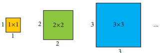
In general, if we consider the side of a square as a variable ‘x’ then its area will be x multiplied by x square units. This can be denoted as ‘x power 2. Thus, we have an algebraic expression with exponent notation.
If we consider the term x power 2 as ye monomial expression, the highest power of the expression is its exponent, that is 2.
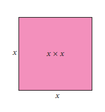
Similarly, when length l units and breadth b units are variables of a rectangle, then its area is length multiplied by breadth equal to l multiplied by b square. units. We can consider lb as a term in an algebraic expression, where l and b are factors of l multiplied by b.
The highest power of the expression l multiplied by b is also 2, as we have to add up the powers of the variable factors.
Note
1 When no exponent is explicitly shown in a variable of a term, it is understood to be 1. For example, 11p equal to 11p power 1.
2 For an expression in x, if the terms of the expressions are in descending powers of x and the like terms are added, then we say that it is in the standard form.
For example, x power 4 minus 3x power 3 + 5x power 2 minus 7x +9 is in the standard form. It is easier to find the highest power term when the expression is in standard form. Highest power of this expression is 4.
3 The highest degree term of an algebraic expression is called as leading term
Let us consider an algebraic expression: x power 3 minus 3x power 2 + 4 The terms of the above expression are x power 3, minus 3x power 2 and 4. Exponent of the term x power 3 is 3 and minus 3x power 2 is 2 Thus, the term x power 3 has the highest exponent, that is 3.
Now, consider the expression,3x power 4 minus 4x power 3 y power 2 + 8xy +7
Take each term and check its power. In 3x power 4, exponent is 4, hence its degree is 4. In minus 4x power 3 y power 2, the sum of powers of x and y is 5, hence its degree is 5. In 8 x y, the sum of powers is 2.
Therefore, the term with highest power in the above expression is minus 4x power 3 y power 2, and its power is 5, which is called as degree of this expression.
The term containing the highest power of the variables in an expression is called the degree of expression.
The degree of any term in an expression can only be a positive integer. Also, degree of expression doesn’t depend on the number of terms, but on the power of variables in the individual terms. The degree of constant term is 0.
Box item
Try these
|
|
|
Degree of the terms |
|
|
Degree of the expression |
Serial.Number |
Algebraic expression |
Term 1 |
Term 2 |
Term 3 |
Term 4 |
|
Serial.Number 1. |
7x power 3 minus 11x power 2 + 2x minus 5 |
Term 1 3 |
Term 2 2 |
Term 3 1 |
Term 4 0 |
Degree 3 |
Serial.Number 2. |
9x power 5 minus 4x power 2 + 2x minus 11 |
Term 1 5 |
Term 2 2 |
Term 3 1 |
Term 4 0 |
Degree 5 |
Serial.Number 3. |
6b power 2 minus 3a power 2 + 5a power 2 b power 2 |
Express degree on the term 1 |
Express degree on the term 2 |
Express degree on the term 3 |
Express degree on the term 4 |
Express the Degree of the expression |
Serial.Number 4. |
P power 4 + p power 3 + p power 2 +1 |
Express degree on the term 1 |
Express degree on the term 2 |
Express degree on the term 3 |
Express degree on the term41 |
Express the Degree of the expression |
Serial.Number 5. |
6x power 2 y power 3 minus 7x power 3 y + 5 x y |
Express degree on the term 1 |
Express degree on the term 2 |
Express degree on the term 3 |
Express degree on the term 4 |
Express the Degree of the expression |
Serial.Number 6. |
9 + 2x power 2 + 5xy minus 5x power 3 |
Express degree on the term 1 |
Express degree on the term 2 |
Express degree on the term 3 |
Express degree on the term 4 |
Express the Degree of the expression |
2. Identify the like terms from the following:
1) 2 x power 2 y, 2 x y power 2, 3 x y power 2,14 x power 2 y, 7 y x
2) 3 x power 3 y power 2, y power 3 x, y power 3 x power 2, minus y power 3 x, 3 y power 3 x
(iii) 11 p q, minus p q, 11 p q r, minus 11 p q, p q
Example 3.14
Find the degree of the following expressions.
1) x power 5
2) minus 3 p power 3 q power 2
3) minus 4 x y power 2 zed power 3
4) Twelve x y zed minus 3x power 3 y power 2 zed + zed power 8
5) 3 ye power 3 b power 4 minus 16 c power 6 + 9 b power 2 c power 5 + 7
Solution
1) In x power 5, the exponent is 5. Thus, the degree of the expression is 5.
2) In minus 3 p power 3 q power 2, the sum of powers of p and q is 5 (that is, 3+2). Thus, the degree of the expression is 5.
3) In minus4 x y power 2 zed power 3, the sum of powers of x, y and zed is 6 (that is, 1+2+3). Thus, the degree of the expression is 6.
4) The terms of the given expression are 12 x y zed, minus 3x power 3 y power 2 zed, zed power 8
Degree of each of the terms: 3, 6, 8
Terms with highest degree: zed power 8
Therefore, degree of the expression is 8.
5) The terms of the given expression are 3 a power 3 b power 4, minus 16 c power 6 ,9 b power 2 c power 5, 7
Degree of each of the terms: 7, 6, 7, 0
Terms with highest degree: 3 a power 3 b power 4 ,9 b power 2 c power 5
Therefore, degree of the expression is 7.
Example 3.15 Add the expressions 4 x power 2 + 3 x y +9 y power 2 and 2 x power 2 minus 9x y + 6y power 2 and find the degree.
Solution
This can be written as (4 x power 2 + 3 x y +9 y power 2) + (2 x power 2 minus 9 x y + 6y power 2)
Let us group the like terms, thus we have
(4 x power 2 + 2 x power 2) + (3 x y minus 9 x y) + (9 y power 2 + 6 y power 2)
equal to x power 2 (4+2) + x y (3 minus 9) +y power 2 (9 +6)
equal to 6 x power 2 minus 6 x y +15 y power 2
Thus, the degree of the expression is 2.
Example 3.16 Subtract x power 3 minus x power 2 + x + 3 from 3 x power 3 minus2 x power 2 minus 7x +6 and find the degree.
Solution
This can be written as (3x power 3 minus 2x power 2 minus7 x+6) minus (x power 3 minus x power 2+x + 3)
When there is a negative sign before the brackets, it can be removed by changing the sign of every term inside the bracket.
(3x power 3 minus 2x power 2 minus 7 x+6) minus (x power 3 minus x power 2+ x + 3)
equal to 3x power 3 minus 2x power 2 minus 7x + 6 minus x power 3 + x power 2 minus x minus 3
equal to (3x power 3 minus x power 3) +(minus 2x power 2 + x power 2) + (minus7 x minus x) +(6 minus 3)
equal to x power 3 (3 minus 1) + x power 2 (minus2+ 1) + x (minus7 minus1) + (6 minus 3)
equal to 2x power 3 minus x power 2 minus 8 x + 3
Hence, the degree of the expression is 3.
Example 3.17 Simplify and find the degree of the expression
(4 m power 2 + 3 n) minus (3 m+9 n power 2) minus (3 m power 2 minus 6 n power 2) + (5 m minus n)
Solution
(4 m power 2+3 n) minus (3 m + 9 n power 2) minus (3 m power 2 minus 6 n power 2) + (5 m minus n)
equal to 4 m power 2 + 3 n minus 3 m minus 9 n power 2 minus 3 m power 2 + 6 n power 2 + 5 m minus n
equal to (4 m power 2 minus 3 m power 2) + (3 n minus n) + (minus 3 m + 5 m) + (minus 9 n power 2 + 6 n power 2)
equal to m power 2 + 2 n + 2 m minus 3 n power 2
Hence, the degree of the expression is 2.
Exercise 3.3
1. Fill in the blanks.
1) The degree of the term ye power 3 b power 2 c power 4 d power 2 is Dash.
2) Degree of the constant term is Dash.
3) The coefficient of leading term of the expression 3 zed power 2 y + 2 x minus 3 is Dash.
2. Say True or False.
1) The degree of m power 2 n and m n power 2 are equal.
2) 7 ye power 2 b and minus 7 ye b power 2 are like terms.
3) The degree of the expression minus 4 x power 2 y zed is minus 4
4) Any integer can be the degree of the expression.
3. Find the degree of the following terms.
1) 5 x power 2
2) minus 7 ye b
3) 12 p q power 2 r power 2
4) minus 125
5) 3 zed
4. Find the degree of the following expressions.
1) x power 3 minus 1
2) 3 x power 2 + 2 x + 1
3) 3 t power 4 minus 5 s t power 2 + 7 s power 3 t power 2
4) 5 minus 9 y + 15 y power 2 minus 6 y power 3
5) u power 5 + u power 4 v + u power 3 v power 2 + u power 2 v power 3 + u v power 4
5. Identify the like terms: 12 x power 3 y power 2 zed, minus y power 3 x power 2zed, 4zed power 3 y power 2 x, 6x power 3 z power 2 y, minus 5 y power 3 x power 2zed
6. Add and find the degree of the following expressions.
1) (9 x + 3 y) and (10 x minus 9 y)
2) (k power 2 minus 25 k + 46) and (23 minus 2 k power 2 + 21 k)
3) (3m power 2 n + 4 p q power 2) and (5 n m power 2 minus 2q power 2p)
7. Simplify and find the degree of the following expressions.
1) 10 x power 2 minus 3 x y + 9 y power 2 minus (3 x power 2 minus 6 x y minus 3y power 2)
2) 9 ye power 4 minus 6 ye power 3 minus 6 ye power 4 minus 3 ye power 2 + 7 ye power 3 + 5 ye power 2
3) 4 x power 2 minus 3 x minus of [8 x minus of (5 x power 2 minus 8)]
Objective type questions
8. 3 p power 2 minus 5 p q + 2 q power 2 + 6 p q minus q power 2 + p q is ye
1) Monomial
2) Binomial
3) Trinomial
4) Quadrinomial
9. The degree of 6x power 7 minus 7x power 3+ 4 is
1) 7
2) 3
3) 6
4) 4
10. If p of x and q of x are two expressions of degree 3, then the degree of, p of x +q of x is
1) 6
2) 0
3) 3
4) Undefined
Exercise 3.4
Miscellaneous Practice Problems
1. 6 power 2 multiplied by 6 power m equal to 6 power 5, find the value of ‘m’.
2. Find the unit digit of 124 power128 multiplied by 126 power 124
3. Find the unit digit of the numeric expression: 16 power 23 + 71 power 48 + 59 power 61
4. Find the value of ((minus 1) whole power 6 multiplied by (minus 1) whole power 7 multiplied by (minus 1) whole power 8) divided by (minus 1) whole power 3 multiplied by (minus 1) whole power 5
5. Identify the degree of the expression, 2 ye power 3 b c + 3 ye power 3 b + 3 ye power 3 c minus 2 ye power 2 b power 2 c power2
6. If p equal to minus 2 q equal to 1, and r equal to 3, find the value of 3p power 2 q power 2 r
Challenge Problems
7. LEADERS is a WhatsApp group with 256 members. Every one of its member is an admin for their own WhatsApp group with 256 distinct members. When a message is posted in LEADERS and everybody forwards the same to their own group, then how many members in total will receive that message?
8. Find x such that 3 power x+2 equal 3 power x + 216.
9. If X equal 5x power 2 +7x + 8 and Y equal 4x power 2 minus 7x + 3, then find the degree of X + Y
10. Find the degree of (2 ye power 2 + 3 ye b minus b power 2) minus (3 ye power 2 minus ye b minus 3b power 2)
11. Find the value of w, given that x equal to 3, y equal to 4, zed equal to minus 2 and w equal to x power 2 minus y power 2 + zed power 2 minus x y zed
12. Simplify and find the degree of 6x power 2 + 1 minus [8 x minus {3x power 2minus 7 minus (4x power 2 minus 2 x + 5 x + 9)}]
13. The two adjacent sides of a rectangle are 2x power 2 minus 5 x y + 3 zed power 2 and 4 x y minus x power 2 minus zed power 2 Find the perimeter and the degree of the expression.
Do You Know?
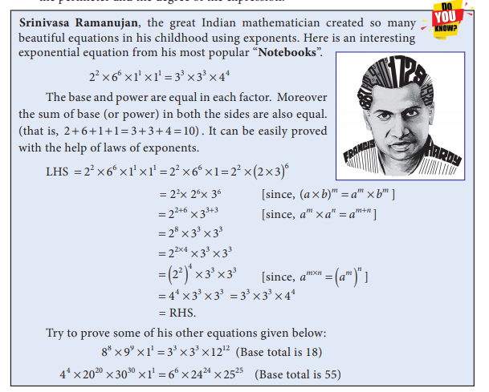
Srinivasa Ramanujan, the great Indian mathematician created so many beautiful equations in his childhood using exponents. Here is an interesting exponential equation from his most popular “Notebooks”.
2 power 2 multiplied by 6 power 6 multiplied by 1 power 1 multiplied by 1 power 1 equal to 3 power 3 multiplied by 3 power 3 multiplied by 4 power 4 The base and power are equal to in each factor. Moreover, the sum of base (or power) in both the sides are also equal.to (that is, 2 + 6 + 1+ 1 equal to 3 +3 + 4 equal to 10) It can be easily proved with the help of laws of exponents.
LHS equal to 2 power 2 multiplied by 6 power 6 multiplied by 1 power 1 multiplied by 1 power 1 equal to 2 power 2 multiplied by 6 power 6 multiplied by 1 equal to 2 power 2 multiplied by (2 multiplied by 3) whole power 6
equal to 2 power 2 multiplied by 2 power 6 multiplied by 3 power 6 [since, (a multiplied by b) whole power m equal to a power m multiplied by b power m]
equal to 2 power 2 + 6 multiplied by 3 power 3 + 3 [since, a power m multiplied by a power n equal to a power m + n]
equal to 2 power 8 multiplied by 3 power 3 multiplied by 3 power 3
equal to 2 power 2 multiplied by 4 multiplied by 3 power 3 multiplied by 3 power 3 [since, ye power m multiplied by n equal to (ye power m) whole power n]
equal to (2 power 2) whole power 4 multiplied by 3 power 3 multiplied by 3 power 3
equal to 4 power 4 multiplied by 3 power 3 multiplied by 3 power 3 equal to 3 power 3 multiplied by 3 power 3 multiplied by 4 power 4
equal to RHS.
Try to prove some of his other equations given below:
8 power 8 multiplied by 9 power 9 multiplied by 1 power 1 equal to 3 power 3 multiplied by 3 power 3 multiplied by 12 power 12 (Base total is 18)
4 power 4 multiplied by 20 power 20 multiplied by 30 power 30 multiplied by 1 power 1 equal to 6 power 6 multiplied by 24 power 24 multiplied by 25 power 25 (Base total is 55)
Summary
If ‘ye’ is any integer, then, ye multiplied by ye multiplied by ye multiplied by so on multiplied by ye (n times) equal to ye power n Here ‘ye’ is the base and n is the exponent or power or index.
● (minus 1) whole power n equal to1, if n is even or minus 1 if n is odd
● When ye number ‘ye’ is multiplied by itself, the product is called the square of that number and denoted by a power 2 Similarly, the square of ye number (ye power 2) is multiplied by ‘ye’, then the product is called the cube of that number and is denoted by ye power 3
● If ‘ye’ and ‘b’ are any non zero numbers and ‘m’ and ‘n’ are natural numbers, then
1 ye power m multiplied by ye power n equal to ye power m + n (Product rule)
2 ye power m divided by ye power n equal to ye power m minus n, m greater than n (Quotient rule)
3 (ye power m) whole power n equal to ye power m multiplied by n (Power rule)
4 (ye multiplied by b) power m equal to ye power m multiplied by b power m
5 (ye divided by b) power m equal to ye power m divided by b power m
● For the base number whose unit digits are 0,1,5 and 6, the unit digit of a number corresponding to any positive exponent remains unchanged.
● For base ending with 4, the unit digit is 4 for odd power and is 6 for even power. Similarly, for base ending with 9, the unit digit is 9 for odd power and is 1 for even power.
● The largest power of a variable in an expression is called its degree. If it has more than one variable, then one has to take the sum of the powers of variables in each term and take the maximum of all these sums.
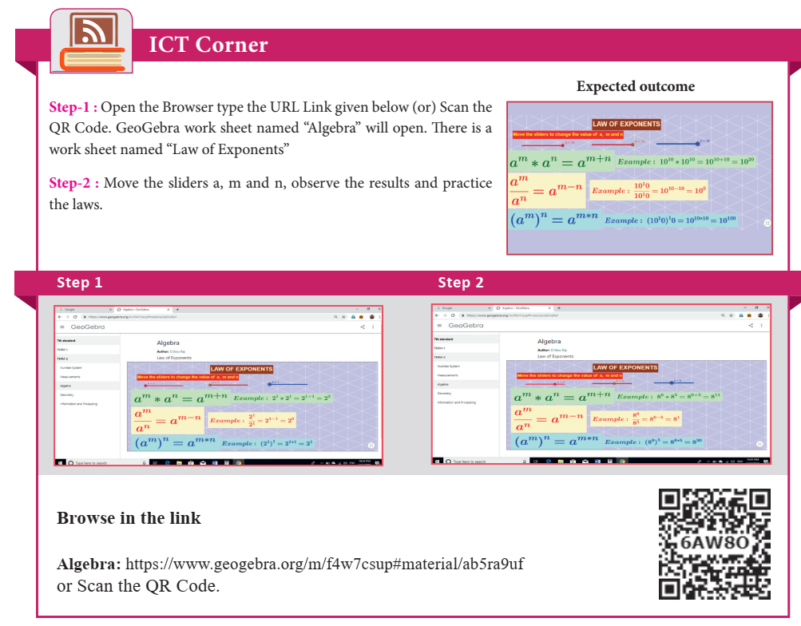
Learning Objectives
● To apply angle sum property of triangles.
● To understand the concept of congruency of triangles.
● To know the criteria for congruence of triangles.
Recap
Triangles
In first term we studied about different types of angles made by intersecting lines and parallel lines with transversals. Further we learnt about triangles, types of triangles and properties of triangles. In this term we are going to apply the properties of triangles.
A triangle is a closed figure formed by threeline segments. It has three vertices, three sides and three angles.
In the triangle ye B C (Figure 4.1) vertices are ye, B, C, the sides are line ye B, line BC, line C ye and the angles are angle C ye B, angle ye B C, angle B C ye. We have already learnt to classify triangles based on sides and angles.
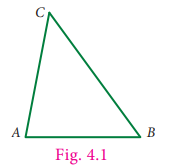
The classification of triangles is shown below.
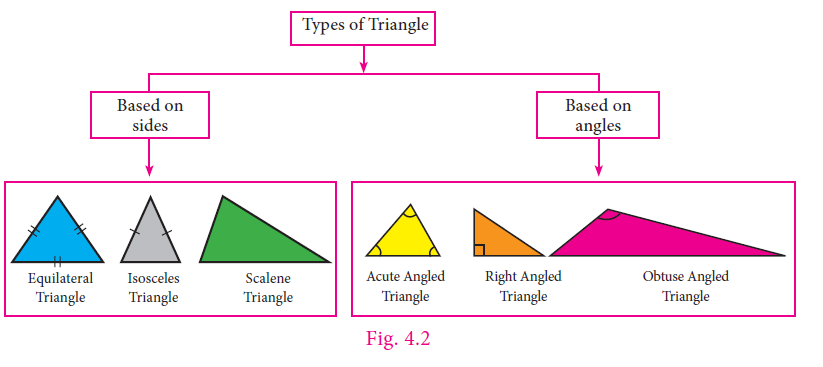
In any triangle drawn by joining three noncollinear points, the sum of the lengths of any two sides is greater than the length of the third side. This property is called as Triangle inequality.
To verify this property, let us consider three types of triangles based on angles.
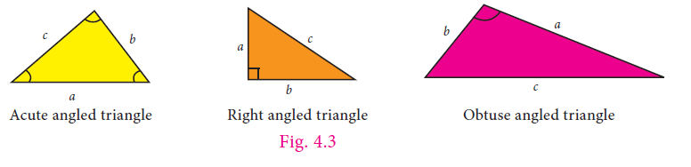
For each of these triangles the following statements are true.1) ye + b greater than c
2) b + c greater than ye
3) c + ye greater than b
This property is also true for three types of triangles based on sides.
Box item
Try these
Answer the following questions.
1. Triangle is formed by joining three Dash points.
2. A triangle has Dash vertices and Dash sides.
3. A point where two sides of a triangle meet are known as Dash of a triangle.
4. Each angle of an equilateral triangle is of Dash measure.
5. A triangle has angle measurements of 29 degree, 65 degree and 86 degree. Then it is Dash triangle.
1) an acute angled
2) a right angled
3) an obtuse angled
4) a scalene
6. A triangle has angle measurements of 30 degree, 30 degree and 120 degree. Then it is Dash triangle.
1) an acute angled
2) scalene
3) obtuse angled
4) right angled
7. Which of the following can be the sides of a triangle?
1) 5,9,14
2) 7,7,15
3) 1, 2, 4
4) 3, 6, 8
8. Ezhil wants to fence his triangular garden. If two of the sides measure 8 feet and 14 feet then the length of the third side is Dash
1) 11 feet
2) 6 feet
3) 5 feet
4) 22 feet
9. Can we have more than one right angle in ye triangle?
10. How many obtuse angles are possible in ye triangle?
11. In ye right triangle, what will be the sum of other two angles?
12. Is it possible to form an isosceles right angled triangle? Explain.
Triangles are an effective tool for construction and architecture. They are used in the design of buildings and other structures for more strength and stability. The knowledge of the properties of triangles is essential to understand its use in architecture. The triangle’s use in architecture dates back more years than other common shapes like dome, arch, cylinder. Usage of triangles even predates the wheel. The most study of the triangles are equilateral and isosceles; their symmetry aids in distributing weight.
This chapter is ye continuation of properties of triangles that we studied in class 6.
Box item
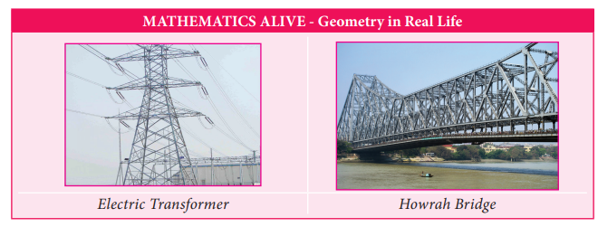
We are familiar with the angle sum property of ye triangle which can be stated as the sum of all angles in ye triangle is 180 degree. We can verify this by doing the following activity
![Activity Draw any triangle and colour the angles of the triangle and check the following property of triangle. In first all the four triangles are in same measurement. The starting base of the first triangle is marked as 1. In the second triangle, the end point point of the base is marked as 2 and in the third triangle, the tip of the triangle is marked as 3. In the fourth triangle, the starting point is marked as 1, the end point of the base is marked as 2 and the tip of the triangle is marked as 3. The alternate angle of 1 and 2 are marked and a parallel line is drawn touching the tip of the triangle to the base of the triangle and the property alternates angles are equal is verified. Four triangles are drawn in the second row, and check the property of the triangles. In the first triangle, the tip of the triangle is marked as 1. In the second triangle the starting point of base the triangle is marked as 2 and in the third triangle, the end point of base of the triangle is marked as 3 In the fourth triangle, All the three angles are flipped inside the middle of the triangle and the property of the triangle is verified. In third row, three equiangular triangles are drawn. In the last picture, all the three equiangular triangles are placed on a line. By arranging the three triangle the sum of three angles of any triangles is 180° gets verified.](images/image-58.png)
From the above activity, we get the result as, the sum of three angles of any triangle is 180 degree.
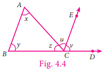
Now we prove the result in a formal method. Given: ye triangle ye BC, where angle ye equal to x, angle B equal to y and angle C equal to zed.
Now let us prove, x + y + zed equal to 180 degree.
To show this we need to extend BC to D and draw a line CE, parallel to ye B.
Now CE makes two angles, angle ye C E and angle E C D
Let it be u and v respectively.
Now zed, u, v are the angles formed at a point on a straight line.
Therefore, zed + u + v equal to 180 degree (equation 1)
Since ye B and CE are parallel and DB is a transversal,
v equal to y (corresponding angles).
Again, ye B and CE are parallel lines and ye C is a transversal,
u equal to x (alternate angles). Also, zed + u + v equal to 180 degree [by (equation 1)]
Hence, by replacing u as x and v as y, we get x +y + zed equal to180 degree.
Hence the sum of all three angles in a triangle is 180 degree.
Example 4.1
Can the following angles form a triangle?
1) 80 degree, 70 degree, 50 degree
2) 56 degree, 64 degree, 60 degree
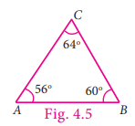
Solution
1) Given angles 80 degree, 70 degree, 50 degree
Sum of the angles equal to 80 degree+70 degree+ 50 degree equal to 200 degree not equal to 180 degree
The given angles cannot form a triangle.
2) Given angles 56 degree, 64 degree, 60 degree
Sum of the angles equal to 56 degree+ 64 degree+ 60 degree equal to 180 degree
The given angles can form ye triangle.
Example 4.2 Find the measure of the missing angle in the given triangle ye BC.
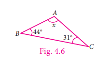
Solution
Let angle ye equal to x
We Know that, angle ye + angle B + angle C equal to 180 degree (angle sum property)
x + 44 degree + 31 degree equal to 180 degree
x + 75 degree equal to 180 degree
x equal to 180 degree minus 75 degree
x equal to 105 degree
Example 4.3 In Triangle S T U, if S U equal to U T, angle S U T equal to 70 degree, angle S T U equal to x, find the value of x.
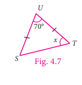
Solution
Given, angle S U T equal to 70 degree
Angle U S T equal to angle S T U equal to x [Angles opposite to equal sides]
Angle S U T + angle U S T +angle S T U equal to 180 degree
70 degree + x + x equal to 180 degree
70 degree + 2 x equal to 180 degree
2 x equal to 180 degree minus 70 degree
2 x equal to 110 degree
x equal to 110 degree divided by 2 equal to 55 degree
Example 4.4
If two angles of a triangle having measures 65 degree and 35 degree, find the measure of the third angle.
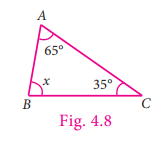
Solution
Given angles are 65 degree and 35 degree.
Let the third angle be x
65 degree + 35 degree+ x equal to 180 degree
100 degree + x equal to 180 degree
x equal to 180 degree minus 100 degree
x equal to 80 degree
We know that any triangle is made up of three vertices, three sides and three angles. Now observe the triangle given in Figure. 4.9
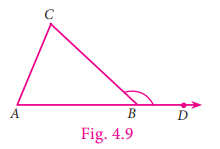
In Triangle ye B C, the side ye B is extended to D. Observe angle C B D which is formed by the side B C and B D. Angle C B D is known as the exterior angle of triangle ye B C at B.
Box item
Think
Can C B be extended to F to get another exterior angle of triangle ye B C at B?
We can observe that, angle ye B C and angle C B D are adjacent and they form a linear pair.
Besides, the other two angles namely, angle C ye B and angle ye C B are non adjacent angles to angle C B D. They are called interior opposite angles of angle C B D.
Note
In triangle ye B C we can also extend the sides B C to E and C ye to F to form exterior angles
at C and ye.
Activity
To understand exterior angle properties of a triangle list all the exterior angles of triangles that are shown below.
![Activity Exterior angle properties of a triangle Understanding the exterior angle properties of a triangle and list all the exterior angles of triangles are given below. Two triangles with vertices OPQ and IJK is given. In first triangle OPQ, O and P are the base of the triangle and Q forms the tip of the triangle. O is extended at R and P is extended to S and Q is extended to T is given. In the second triangle, IJK, I and J are the base of the triangle and K forms the tip of the triangle. I is extended to L and J is extended to M and K is extended to N.](images/image100.png)
Measure and express each exterior angle as a sum of its interior opposite angles and complete the table.
Exterior angle |
Sum of its interior opposite angle
|
Express the Exterior angle |
Express the Sum of its interior opposite angle |
Express the Exterior angle |
Express the Sum of its interior opposite angle |
Express the Exterior angle |
Express the Sum of its interior opposite angle |
Express the Exterior angle |
Express the Sum of its interior opposite angle |
Express the Exterior angle |
Express the Sum of its interior opposite angle |
From the above activity we observe that an exterior angle of a triangle is equal to the sum of its interior opposite angles.
Now we prove this result in a formal method.
Proof
In triangle ye B C, consider, the angles at ye, B and C as ye, b and c respectively and take exterior angles at ye, B and C as x, y and zed respectively.
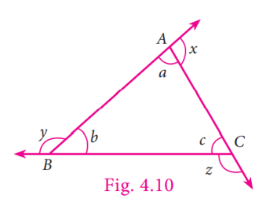
We are going to prove x equal to b + c, y equal to ye + c and zed equal to ye + b
ye + x equal to 180 degree [linear pair of angles are supplementary]
This gives, x equal to 180 degree minus ye equation (1)
Now, ye + b + c equal to 180 degree [Sum of 3 angles in a triangle is 180 degree]
This gives, b + c equal to 180 degree minus ye equation (2)
From equation (1) and (2),
x and b + c both are equal.
Therefore, x equal to b + c.
In the same way, we can prove the result for other exterior angles.
Now we are going to learn one more result on the exterior angle of ye triangle for which we do the following activity.
Activity
Imagine ye person standing in one of the vertices (corners) and walking along the boundary of the triangle until he reaches the starting point. At each of the vertex of the triangle he would turn an angle equal to the exterior angle at that vertex. Hence, after the complete journey around the triangle he would have turned through an angle equal to one complete revolution, that is 360 degree
We prove this result as below.
Since the angles on a straight line is 180 degree,
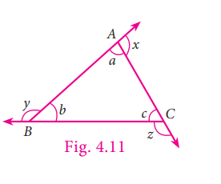
We have ye + x equal to 180 degree [linear pair of angles are supplementary]
x equal to 180 degree minus ye
Similarly, y equal to 180 degree minus b
and zed equal to 180 degree minus c
Therefore, x + y + zed equal to (180 degree minus ye) + (180 degree minus b) + (180 degree minus c)
equal to 540 minus (ye + b + c)
equal to 540 degree minus 180 degree [sum of all three angles of ye triangle is 180 degree]
equal to 360 degree
Hence, the sum of all exterior angles of a triangle is 360 degree.
Therefore, the properties of exterior angle gives us the following two results.
1) An exterior angle of a triangle is equal to the sum of its interior opposite angles.
2) The sum of exterior angles of a triangle is 360 degree.
Example 4.5
In triangle PQR, find the exterior angle, angle SRQ
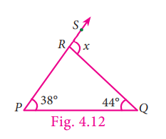
Solution
Let, angle SRQ equal to x
Exterior angle equal to sum of two interior opposite angles
x equal to 38 degree + 44 degree equal to 82 degree
Example 4.6
In triangle L M N, L M is extended to O. If angle L equal to 62 degree and angle N equal to 31 degree, find angle N M O.
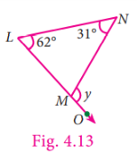
Solution
Let, angle N M O equal to y
Exterior angle equal to sum of two interior opposite angles
y equal to 62 degree + 31 degree
equal to 93 degree
Example 4.7 In the triangle ye B C shown in the figure, find the angle zed.
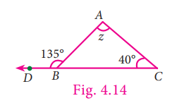
Solution
Exterior angle equal to sum of two interior opposite angles
135degree equal to zed + 40 degree
Subtract 40 degree on both sides
135 degree minus 40 degree equal to zed + 40 degree minus 40 degree
zed equal to 95 degree
Example 4.8 In the given isosceles triangle I J K (Figure. 4.15), if angle I K L equal to 128 degree, find the value of x.
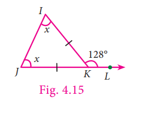
Solution
Exterior angle equal to sum of two interior opposite angles
128 degree equal to x + x
128 equal to 2 x
128 divided by 2 equal to 2x divided by 2 [on both sides, divide by 2]
x equal to 64 degree
Example 4.9 With the given data in the Figure. 4.16, find angle U W Y. What do you infer about angle X W V?
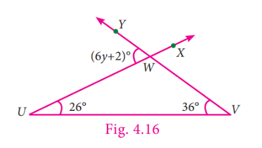
Solution
Exterior angle equal to sum of two interior opposite angles
6y + 2 equal to 26 degree + 36 degree
6y + 2 equal to 62 degree
Subtract 2 from both
6y equal to 62 minus 2
6y equal to 60 degree
6y divided by 6 equal to 60 divided by 6 [on both sides, divide by 6]
y equal to 10 degree
angle U W Y equal to 6y + 2 equal to 6 multiplied by 10 + 2 equal.to 62degree.
We can conclude that angle XWV equal to angle U W Y, because they are vertically opposite angles as well as exterior angles.
Exercise 4.1
1) Can 30 degree, 60 degree and 90 degree be the angles of ye triangle?
2) Can you draw ye triangle with 25 degree, 65 degree and 80 degree as angles?
3) In each of the following triangles, find the value of x.
![In figure 1 EFG are three vertices FG is the base and E is the tip of the triangle. angle EFG is 55 degree, FEG is 80 degree and EGF is x degree. find the value of x. In figure 2 MNO are three vertices ON is the base and M is the tip of the triangle. angle MNO is 96 degree, NOM is 22 degree and NMO is x degree. find the value of x. In figure 3 X Y Zed are three vertices Y Zed is the base and X is the tip of the triangle. angle X Y Zed is 90 degree, Y X Zed is 29 degree and Y Zed X is 2x + 1 degree. find the value of x. In figure 4 JKL are three vertices JK is the base and L is the tip of the triangle. angle JKL is 112 degree, KLJ is 3x degree and KJL is x degree. find the value of x. In figure 5 RST are three vertices ST is the base and R is the tip of the triangle. angle SRT is 72 degree, sides SR and RT 4.5 centimetre and RST is 3x degree, find the value of x. In figure 6 X Y Zed are three vertices Y Zed is the base and X is the tip of the triangle. angle X Y Zed is 2x degree, Y Zed X is 4x degree and Y X Zed is 3x degree. find the value of x. In figure 7 TUV are three vertices UT is the base and U is the tip of the triangle. angle TUV is 90 degree, UVT is 3x minus 2 degree and VTU is x minus 4 degree. find the value of x. In figure 8 NOP are three vertices OP is the base and N is the tip of the triangle. angle NOP is 3x minus 10 degree, OPN is 2x minus 3 degree and PNO is x + 31 degree. find the value of x.](images/image109.png)
4.Two line segments line ye D and line BC intersect at O. Joining line ye B and line D C we get two triangles, triangle ye O B and triangle DOC as shown in the figure. Find the angle ye and angle B.
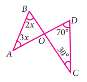
5. Observe the figure and find the value of angle ye + angle N + angle G + angle L + angle E + angle S
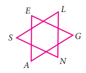
6. If the three angles of ye triangle are in the ratio 3 is to 5 is to 4, then find them.
7. In triangle R S T, angle S is 10 degree greater than angle R and angle T is 5 degree less than angle S, find the three angles of the triangle.
8. In triangle ye B C, if angle B is 3 times angle ye and angle C is 2 times angle ye, then find the angles.
9. In triangle X Y Zed, if angle X: angle Zed is 5 is to 4 and angle Y equal to 72 degree. Find angle X and angle Z
10. In a right angled triangle ye B C, angle B is right angle, angle ye is x +1 and angle C is 2x + 5. Find angle ye and angle C
11. In a right angled triangle M N O, angle N equal 90 degree, M O is extended to P. If angle N O P equal to 128 degree, find the other two angles of triangle M N O.
12. Find the value of x in each of the given triangles.
13. In triangle L M N, M N is extended to O. If angle M L N equal to 100 minus x, angle L M N equal to 2 x and angle L N O equal to 6x minus 5, find the value of x.
14. Using the given figure find the value of x.
15. Using the diagram find the value of x.
Objective type questions
16. The angles of ye triangle are in the ratio 2 is to 3 is to 4. Then the angles are
1) 20, 30, 40
2) 40, 60, 80
3) 80, 20, 80
4) 10, 15, 20
17. One of the angles of ye triangle is 65 degree. If the difference of the other two angles is 45 degree, then the two angles are
1) 85 degree, 40 degree
2) 70 degree, 25 degree
3) 80 degree, 35 degree
4) 80 degree, 135 degree
18. In the given figure, ye B is parallel to C D. Then the value of b is
1) 112 degree
2) 68 degree
3) 102 degree
4) 62 degree
19. In the given figure, which of the following statement is true?
1) x + y + zed equal to 180 degree
2) x + y + zed equal to ye + b + c
3) x + y + zed equal to 2 (ye + b + c)
4) x + y + zed equal to 3 (ye + b + c)
20. An exterior angle of ye triangle is 70 degree and two interior opposite angles are equal. Then measure of each of these angles will be
1) 110 degree
2) 120 degree
3) 35 degree
4) 60 degree
21. In a triangle ye B C, ye B equal to ye C. The value of x is Dash.
1) 80 degree
2) 100 degree
3) 130 degree
4) 120 degree
22. If an exterior angle of ye triangle is 115 degree and one of the interior opposite angles is 35 degree, then the other two angles of the triangle are
1) 45 degree, 60 degree
2) 65 degree, 80 degree
3) 65 degree, 70 degree
4) 115 degree, 60 degree
We are now going to learn ye very important geometrical concept called congruence. To understand the concept of congruency of triangles, let us first look into the congruency of shapes.
Let us observe the following pictures.
To understand congruency of shapes, let us take ye pack of cards and choose any two cards and place them one over the other. We are able to place them in such a way that one card matches exactly with the other in size and shape. Hence all the cards in ye pack are equal in both size and shape. Any pair or set of objects with this property are said to be congruent.
How can we check the congruence of two objects or figures?
To check the congruence of the objects, we can use the method of superposition. In this method we have to make ye trace copy of one figure and place it over the other. If the figure match each other completely then, they are said to be congruent. In this method to match the original with the trace copy, we are not allowed to bend, twist or stretch, but we can translate or rotate.
Measure and observe the following line segments.
The line segments line ye B and line C D has the same length. If we use the superposition method line ye B and line C D will match each other. Hence the line segments are congruent and we can write it as line ye B congruent to line C D.
Since we are considering the lengths of the line segments for congruence we can also write line ye B congruent to line C D as line ye B equal to line C D.
From the above cases, we understand that lines are congruent if they have the same length.
Box item
Try these
Look at the following angles.
To check the congruency of angles angle B ye C and angle F E G, make a trace copy of angle B ye C. By superposition method, if we try to match angle B ye C with the angle F E G by placing the arm ye B on the arm E F, then the arm ye C will coincide with the arm E G. Even if length of the arms is different, the angles angle B ye C matches exactly with angle F E G. Hence the angles are congruent.
If two angles (angle B ye C and angle F E G) are congruent, it can be represented as angle B ye C congruent to angle F E G. As in the case of line segments, congruence of angles depends only on the measures of the angles. So, if we want to say two angles are congruent, the measures of the angles should be equal.
Hence, we can write angle B ye C equal to angle F E G for angle B ye C congruent to angle F E G.
Box item
Try these
Examine the following pairs of plane figures.
They are identical in shape and size. Their sides (line segments) are equal and the angles are also equal.
Observe the circles given in Figure. 4.21.
Their radii are equal. If they are placed on each other they will coincide. These types of figures are called congruent plane figures.
Note
In congruency, the coinciding parts are called corresponding parts. The coinciding sides
are called corresponding sides and the coinciding angles are called corresponding angles.
So, if the corresponding sides and corresponding angles of two plane figures are equal then they are called congruent figures. If two plane figures F 1 and F 2 are congruent, we can write F 1 congruent to F 2
Triangle is a closed figure formed by threeline segments. There are three sides and three angles. If the corresponding sides and corresponding angles of two triangles are equal, then the two triangles are said to be congruent to each other.
Observe the following two triangles triangle ye B C and triangle X Y Zed.
By trace copy superposition method, it can be observed that triangle X Y Zed matches identically with triangle ye B C
All the sides and the angles of triangle ye BC are equal to the corresponding sides and angles of triangle X Y Zed. So, we can say the two triangles are congruent. We can express it as triangle ye B C congruent to triangle X Y Zed.
We can also observe that the vertex ye matches with vertex Zed, B matches with Y and C matches with X. They are called corresponding vertices.
The side ye B matches Y Zed, B C matches X Y and C ye matches Zed X. These pairs are called corresponding sides.
Also, angle ye equal to angle Zed, angle B equal to angle Y and angle C equal to angle X. These pairs are called corresponding angles.
In the above case, the correspondence is vertex ye equivalent to vertex Zed, vertex B equivalent to vertex Y, vertex C equivalent to vertex X. We write this as vertices ye B C equivalent to vertices X Y Zed.
Suppose we try to match vertex ye with vertex Y or vertex X (Figure. 4.23), we can observe that the triangles do not match each other.

This does not imply that the two triangles are not congruent.
So, to confirm the congruency of given two triangles, we have to check the congruency of corresponding sides and corresponding angles.
Hence, the above triangles triangle ye B C congruent to triangle X Y Zed are congruent.
So, we conclude that, if all the sides and all the angles of one triangle are equal to the corresponding sides and angles of another triangle, then the two triangles are congruent to each other.
We learnt to check the congruency of triangles by superposition method. Let us check the congruency of triangles using appropriate measures which will be very useful. We can study them as criterions to check the congruency of triangles.
Look at the following triangle (Figure 4.24).
To draw a triangle congruent to the given triangle do we need to know all measures of sides and angles of the triangle?
To construct a triangle, we need only three measures. Those three measures can be any of the following.
1. The lengths of all three sides. (or)
2. The lengths of two sides and the angle included between those two sides. (or)
3. Two angles and the length of the side included by angles.
We can try the above conditions one by one.
1. Side Side Side congruence criterion (SSS) The lengths of all three sides are given
Draw a triangle X Y Zed given that X Y equal to 6 centimetre, Y Zed equal to 5.5 centimetre and Zed X equal to 5 centimetre
Step 1: Draw a line. Mark X and Y on the line such that X Y equal to 6 centimetre
Step 2: With X as centre, draw an arc of radius 5 centimetre above the line X Y.
Step 3: With Y as centre, draw an arc of radius 5.5 centimetre to intersect arc drawn in step 2. Mark the point of intersection as Zed.
Step 4: Join X Zed and Y Zed. Now X Y Zed is the required triangle.
Using trace copy superposition method, if we place the triangle X Y Zed on the triangle P Q R (Figure. 4.24) in such a way that the sides P Q on X Y, P R on X Zed and Q R on Y Zed, then both the triangles (triangle X Y Zed and triangle P Q R) matches exactly in size and shape.
Here we used only sides to check the congruence of the triangles, so we can say the condition as, if three sides of one triangle are equal to the corresponding sides of the other triangle then the two triangles are congruent. This criterion of congruency is known as Side Side Side.
Note
It two triangles are congruent then their corresponding parts are congruent. We can
say “Corresponding Parts of Congruent Triangles are Congruent”. It can be abbreviated
as C P C T C.
2. Side Angle Side congruence criterion (S ye S) The lengths of two sides and the angle included between the two sides are given.
Draw a triangle ye B C given that ye B equal to 6 centimetre, ye C equal to 5 centimetre and angle ye equal to 60 degree
Step 1: Draw a line. Mark ye and B on the line such that ye B equal to 6 centimetre
Step 2: At ye, draw a ray ye X making an angle of 60 degree with ye B.
Step 3: With ye as centre, draw an arc of radius 5 centimetre to cut the ray ye X. Mark the point of intersection as C.
Step 4: Join B C.
ye BC is the required triangle.
Using trace copy superposition method, if we place the triangle ye B C on the triangle P Q R (Figure. 4.24) in such a way that the sides ye B on P Q, ye C on P R and the angle ye on angle P, then both the triangles (triangle ye B C and triangle P Q R) matches exactly in size and shape. Here, we are using only two sides and one included angle to check the congruence of triangles.
So, we can say, if two sides and the included angle of a triangle are equal to the corresponding two sides and the included angle of another triangle, then the two triangles are congruent to each other.
This criterion is called Side Angle Side.
3. Angle Side Angle congruence criterion (ye S ye) Two angles and the length of a side included by the angles are given.
Draw a triangle L M N given that L M equal to 5.5 centimetre, angle M equal to 70 degree and angle L equal to 50 degree.
Step 1: Draw a line. Mark L and M on the line such that L M equal to 5.5 centimetre.
Step 2: At L, draw a ray L X making an angle of 50 degree with L M.
Step 3: At M, draw another ray M Y making an angle of 70 degree with L M. Mark the point of intersection of the rays L X and M Y as N. L M N is the required triangle.
Using trace copy superposition method, if we place triangle L M N on the triangle P Q R (Figure 4.24) in such a way that the angles angle L on angle Q, angle M on angle R and the side L M on Q R, then both the triangles (triangle L M N and triangle P Q R) matches exactly in size and shape. Here, we used only two angles and one included side to check the congruence of triangles.
Therefore, we can say, if two angles and the included side of one triangle are congruent to the corresponding parts of another triangle, then the two triangles are congruent. This criterion is called Angle Side Angle criterion.
Note
There is one more criterion to check the congruency of triangle. This criterion is called Angle Angle Side criterion which is a slight modification of ye S ye criterion. In this criterion the congruent side is not included between the congruent angles. So we can say, if two angles and a nonincluded side of one triangle are congruent to the corresponding parts of another triangle, then also
the triangles are congruent.
Hypotenuse
In earlier class we learnt about right angled triangle. In a right angled triangle, one angle is a right angle and other angles are acute angles. Observe the following right angled triangles.
In all the given triangles the side which is opposite to the right angle is the largest side called Hypotenuse.
In the above triangles the sides ye C, Q R and M N are the hypotenuse. Remember that hypotenuse is related with right angled triangles only.
4. Right Angle Hypotenuse Side congruence criterion (R H S)
The name of the criterion clearly states that this criterion is used with right angled triangles only.
Observe the two given right angled triangles.
In these two triangles right angle is common. And if we are given the sides making right angles then we can use the S ye S criterion to check the congruency of the triangles.
Or if we are given one side containing right angle and hypotenuse, then we can have new criterion, if the hypotenuse and one side of a right angled triangle is equal to the hypotenuse and one side of another right angled triangle then the two right angled triangles are congruent.
This is called Right angle Hypotenuse Side criterion
Note
We learnt the congruency criterions of triangles. The following ordered combinations of measurement of triangles will not be sufficient to prove congruency of triangles Angle Angle Angle (ye ye ye) combination will not always prove triangles congruent. This combination will give triangles of same shape but not of same size Side Side Angle (or) Angle Side Side (S S ye or ye S S) combination also will not prove congruency of triangles. This combination deals with two sides and a nonincluded angle.
Box item
Try these
![Try these (i) If ∆ABC ≅∆ XYZ then list the corresponding sides and corresponding angles. A pair of triangles with vertices ABC and XYZ is given. (ii) Given triangles are congruent. Identify the corresponding parts and write the congruent statement. A pair of triangles with vertices XYZ and ABC is given and their corresponding sides are marked as equal. (iii) Mention the conditions needed to conclude the congruency of the triangles with reference to the above said criterions. Give reasons for your answer. A pair of triangles with vertices ABC and XYZ is given.](images/image-106.png)
Exercise 4.2
1. Given that triangle ye B C congruent to triangle D E F
1) List all the corresponding congruent sides
2) List all the corresponding congruent angles.
2. If the given two triangles are congruent, then identify all the corresponding sides and also write the congruent angles.
3. If the given trianglestriangle ye B C and triangle E F G are congruent, determine whether the given pair of sides and angles are corresponding sides or corresponding angles or not.
1) angle ye and angle G
2) angle B and angle E
3) angle B and angle G
4)line ye C and line G F
5) line B ye and line F G
6) line E F and line B C
4. State whether the two triangles are congruent or not. Justify your answer.

5. To conclude the congruency of triangles, mark the required information in the following figures with reference to the given congruency criterion.
![5. (i) A quadrilateral is formed with joining two triangle as its base and criterion ASA is given below the picture. (ii) A pair of triangles on either side in which two sides of the triangles are marked with equal length and criterion SSS is given below the picture. (iii) Two right angled triangles joined to form a quadrilateral and criterion RHS is given below the picture. (iv) A pair of triangle with two of its angles are shown equal in the given picture. (v) A figure is formed by joining its tip of two triangles and one of their side is shown equal in the picture.](images/image-111.png)
6. For each pair of triangles state the criterion that can be used to determine the congruency?
![6.(i) A quadrilateral is formed by joining the side of two triangles in which two of its corresponding sides are marked as equal. (ii) A quadrilateral is formed by joining triangles by its tip in which one of its corresponding side is marked equal. (iii) Two triangles with common base is merged and two of its corresponding sides are marked as equal. A side of two triangles are parallel to each other. (iv) A pair of triangles in which one of its corresponding side and angle are equal. (v) Two triangles having common base and alternate angles are marked as equal. (vi) A quadrilateral is formed by joining its tip and two of their corresponding sides are marked equal.](images/image-112.png)
7. A. Construct a triangle X Y Zed with the given conditions.
1) X Y equal to 6.4 centimetre, Zed Y equal to 7.7 centimetre and X Zed equal to 5 centimetre
2) An equilateral triangle of side 7.5 centimetre
3) An isosceles triangle with equal sides 4.6 centimetre and third side 6.5 centimetre
B. Construct a triangle ye B C with given conditions.
1) ye B equal to 7 centimetre, ye C equal to 6.5 centimetre and angle ye equal to 120 degree.
2) B C equal to 8 centimetre, ye C equal to 6 centimetre and angle C equal to 40 degree.
3) An isosceles obtuse triangle with equal sides 5 centimetre
C. Construct a triangle P Q R with given conditions.
1) angle P equal to 60 degree, angle R equal to 35 degree and PR equal to 7.8 centimetre
2) angle P equal to 115 degree, angle Q equal to 40 degree and PQ equal to 6 centimetre
3) angle Q equal to 90 degree, angle R equal to 42 degree and QR equal to 5.5 centimetre
Objective type questions
8. If two plane figures are congruent then they have
1) same size
2) same shape
3) same angle
4) same shape and same size
9. Which of the following methods are used to check the congruence of plane figures?
1) translation method
2) superposition method
3) substitution method
4) transposition method
10. Which of the following rule is not sufficient to verify the congruency of two triangles.
1) S S S rule
2) S ye S rule
3) S S ye rule
4) ye S ye rule
11. Two students drew a line segment each. What is the condition for them to be congruent?
1) They should be drawn with a scale.
2) They should be drawn on the same sheet of paper.
3) They should have different lengths.
4) They should have the same length.
12. In the given figure, ye D equal C D and ye B equal C B. Identify the other three pairs that are equal.
1) angle ye D B equal to angle C D B, angle ye B D equal to angle C B D, B D equal to B D
2) ye D equal to ye B, D C equal to C B, B D equal to B D
3) ye B equal to C D, ye D equal to B C, B D equal to B D
4) angle ye D B equal to angle C D B, angle ye B D equal to angle C B D, angle D ye B equal to angle D B C
13. In triangle ye B C and triangle P Q R, angle ye equal to 50 degree equal to angle P, P Q equal to ye B, and P R equal to ye C. By which property triangle ye B C and triangle P Q R are congruent?
1) S S S property
2) S ye S property
3) ye S ye property
4) R H S property
Exercise 4.3
Miscellaneous Practice Problems
1. In an isosceles triangle one angle is 76 degree. If the other two angles are equal find them.
2. If two angles of ye triangle are 46 degree each, how can you classify the triangle?
3. If one angle of ye triangle is equal to the sum of the other two angles, find the type of the triangle.
4. If the exterior angle of ye triangle is 140 degree and its interior opposite angles are equal, find all the interior angles of the triangle.
5. In triangle J K L, if angle J equal to 60 degree and angle K equal to 40 degree, then find the value of exterior angle formed by extending the side K L.
6. Find the value of ‘x’ in the given figure.
7. If triangle M N O congruent to triangle D E F, angle M equal to 60 degree and angle E equal to 45 degree then find the value of angle O.
8. In the given figure ray ye Z bisects angle B ye D and angle D C B, prove that
1) triangle B ye C congruent to triangle D ye C
2) ye B equal to ye D.
9. In the given figure F G equal to F I and H is midpoint of G I, prove that triangle F G H congruent to triangle F H I
10. Using the given figure, prove that the triangles are congruent. Can you conclude that ye C is parallel to D E
Challenge Problems
![Challenge Problems 11. A Triangle with vertices ABC , AC is the base and D is the midpoint between them. The base AC is extended to X . The angle A forms 35° and angle BCX is 115° then measure the value of B is given. 12. A triangle with vertices LMN, MN is the base of the triangle and angle N is 30° and angle L is 26°. MN is extended to a point K and the angle K is 58°. A small triangle KMJ is attached with triangle LMN and J is the tip of the triangle which meets at a point along the side LM and KJL forms an exterior angle x is given. 13.A Triangle with vertices ABC , AC is the base. The angle B is 28°, angle C is x and angle A is y whereas the base AC is extended to x and the exterior angle BAX is 62°is given. 14. A Triangle with vertices EDF , ED is the base of the triangle. The bisector of angle D meets FE at G. Angle F is 48° and angle E is 68° then measure the angle FGD is given. 15. A triangle with vertices PST and the angle S is 75°. The side ST is extended to U and the angle PTU is 105°. The vertex P is the base point of another triangle whereas PQR is the triangle and PQ is the base. The side PR is extend to V and QR is extended to Y. The angle VRQ is 145° and angle PQY is x whereas the angle P is given as 90° . 16.A triangle with vertices ABC with AB as the base and the angle A is 57°. the line AC is extended to X and the line BC is extended to Y whereas the extended lines meet at a point C and forms an angle of 48°. An another triangle with BDE and BD is the base which is attached to the point B and the angle E is 97°. The angle CBE is 65° and the side ED is extended to Z whereas the angle BDZ is given as y.](images/image-118.png)
Summary
The sum of three angles in ye triangle is 180 degree .
The exterior angle of ye triangle is equal to the sum of the two interior opposite angles.
The exterior angles of ye triangle add up to 360 degree.
Two lines segments are congruent if they have the same length.
Two angles are congruent if the measures of the angles are equal.
If the corresponding sides and corresponding angles of two plane figures are equal then they are called congruent figures.
If three sides of one triangle are equal to the corresponding sides of the other triangle then the two triangles are congruent. This is known as Side Side Side criterion.
If two sides and the included angle of ye triangle are equal to the corresponding two sides and the included angle of another triangle, then the two triangles are congruent to each other. This is known as Side Angle Side criterion.
If two angles and the included side of one triangle are congruent to the corresponding two angles and the included side of another triangle, then the triangles are congruent This is known Angle Side Angle criterion.
In right angled triangle, the side which is opposite to right angle is the largest side called Hypotenuse.
If the hypotenuse and one side of a right angled triangle is equal to the hypotenuse and one side of another right angled triangle then the two right angled triangles are congruent. This is known as Right Angle Hypotenuse Side criterion.
Learning Objectives
● To identify the relationship between the two variables in a pattern.
● To generalize the pattern using tabular form of representation.
● To familiarise the type of patterns in Pascal’s triangle.
We can observe patterns in both nature and manmade things. In nature, we can see patterns in leaves, trees, snowflakes, movements in celestial bodies and many others. In man made things, we see patterns in structures, buildings, fabric designs, tessellations and many others. This kind of repeated patterns brings happiness as well as interest in knowing more about them. It is really wonder to know all beautiful patterns are based on mathematics. Let us try to find the relationship among the pattern of shapes by representing it in the tabular form in the situations given below.
Box item
Situation 1
Observe the following pattern Consider ye circular disc. Circular rings of same width
are drawn around the disc
Proceed in the same way to get the shapes following a pattern as shown below.
Let us express the above pattern of shapes in the form of ye table.
Let x denote the number of steps and y denote the total number of circular rings.
Number of steps (x) |
1 |
2 |
3 |
4 |
so on |
Number of circular rings (y) |
1 |
3 |
5 |
7 |
so on |
Here let us find the relationship between the number of steps and number of circular rings. Hence the relationship between x and y can be generalised as y equal 2x minus 1
Situation 2
Consider an equilateral triangle of any size
Mark the midpoints of sides of ye triangle and join them to form four equilateral triangles.
Proceed in the same way to get the shapes following ye pattern as shown below.
![Situation 2 A row is divided is four column In first column an equilateral triangle of any size with three vertices is given. In second column, mid points of sides of the equilateral triangle is marked and joining them form an equilateral triangles with six vertices given. In third column, midpoints of the inner equilateral triangle is marked and joining them form an equilateral triangle with twelve vertices. In fourth column, midpoints of the equilateral triangles is marked triangle with twenty four vertices. The fifth column is left empty to find the next pattern of an equilateral triangle and their vertices.](images/image-122.png)
Let us express this repeated process in the form of a table. Here let us find the relationship between the number of steps (x) and total number of vertices (y).
Number of steps (x) |
1 |
2 |
3 |
4 |
so on |
Number of vertices (y) |
3 multiplied by 2 power 0 equal to 3 |
3 multiplied by 2 power 1 equal to 6 |
3 multiplied by 2 power 2 equal to 12 |
3 multiplied by 2 power 3 equal to 24 |
so on |
Hence, the relationship between x and y can be generalised as y equal 3 multiplied by (2 power x minus 1). From the above situations, you could have understood that even if an action is repeatedly done, the properties of the shape do not change.
Example 5.1 In the following figures, polygons are formed by increasing the number of sides using matchsticks as given below.

Find the number of sticks required to form the next three shapes by tabulation and generalisation.
Solution
In the above pattern of polygons, in the first shape (x equal to 1), we get ye closed shape called ye triangle. Similarly, the second shape (x equal to 2) gives ye four sided polygon and the third shape
(x equal to 3) is a five sided polygon and continuing in the same way two more shapes are formed. If the number of match sticks required to form each of the shapes is taken as y, then the values of x and y are tabulated as given below.
(x) |
1 |
2 |
3 |
4 |
5 |
so on |
(y) |
3 |
4 |
5 |
6 |
7 |
so on |
Observe the table and express y in terms of x as below
when x equal to 1, y equal to 3 equal to1 + 2
when x equal to 2, y equal to 4 equal to 2 + 2
when x equal to 3, y equal to 5 equal to 3 + 2
when x equal to 4, y equal to 6 equal to 4 + 2
when x equal to 5, y equal to 7 equal to 5 + 2
Hence, each of the values of y which we get from the table is 2 more than x. That is y equal to x + 2. Therefore,
6th shape (x equal to 6) will have y equal to 8 equal to 6 + 2 (8 match sticks)
7th shape (x equal to 7) will have y equal to 9 equal to 7 + 2 (9 match sticks)
8th shape (x equal to 8) will have y equal to 10 equal to 8 + 2 (10 match sticks)
We clearly see that the next three shapes will require 8, 9 and 10 matchsticks.
Box item
![Try these In the given figure, let x denote the number of steps and y denote its area. Fin the relationship between x and y by tabulation. 1. In the given figure, let x denote the number of steps and y denote its area. Find the relationship between x and y by tabulation. There are 5 small squares with 5 rows and 19 columns. In the first column the fifth squares in the last row is filled with a pattern In the third and fourth column, the squares joining fourth and fifty row is filled with he similar pattern. In the sixth, seventh and eighth column the square joining third, fourth and fifth row is filled with a pattern. In the Tenth, Eleventh, twelfths and thirteenth column, the squares joining second, third, fourth and fifth row is filled with similar pattern. In the fifteenth, sixteenth, seventeen, eighteenth and nineteenth column, the squares joining all the five rows is filled with similar pattern. The second, fifth, nineth and fourteenth column are left empty. 2. In the figure, let x denotes the number of steps and y denotes the number of matchsticks used. Find the relationship between x and y by tabulation. In given picture x denotes the number of steps and y denotes the number of match sticks used and find the relationship between x and y is given. The patterns are arranged in four rows using match sticks In the first row, a match stick is arranged in a straight line. In the second row, 4 match sticks are arranged to form a square. In the third row, 7 match sticks are arranged to form two squares consecutively. In the fourth row, 10 match sticks are arranged to form three squares consecutively .](images/image-125.png)
3. Observe the table given below.
x |
Minus 2 |
Minus 1 |
0 |
1 |
2 |
8 |
so on |
y |
Minus 4 |
Minus 2 |
0 |
2 |
4 |
Question mark |
so on |
Find the relationship between x and y. What will be the value of y, when x equal to 8
Exercise 5.1
1. Match the given patterns of shapes with the appropriate number pattern and its generalization.
![image Match the Patterns of Shapes with the appropriate number pattern and its generalization Three column and five rows are given. Serial number is given in the first column patterns are given in the second column Second column and third column of the description starts 1 In first row, two stars first pattern, stars are present above and below, four stars in second pattern, in which two stars are present above and below, six stars in the third pattern in which three stars are present above and below and eight stars in the fourth pattern in which 4 stars are present above and below. Ye) The sequence 5,9,13,17.so on. and its general form Y= 4n +1 is given in the first row of the third column. 2 In the second row, a square in the middle is given. While other our squares are drawn from the vertices f previous square. In the second pattern, four squares ate drawn along the corner squares of the first pattern. Totally a squares are given in the second pattern In the third pattern, similarly four squares are drawn along the corner squares of the second pattern. Totally 13 square are given in the third pattern. b) The sequence 3,4,5,6 and its general from y=x+2 is given in the second row of the third column (3) 2 multiplied by 2 squares are given in the first pattern. 4 multiplied by 4 squares are given in the second pattern. 6 multiplied by 6 squares are given in the third pattern and 8 multiplied by 8 squares are given in the fourth pattern. c) The sequence 1,4,9,16 and its general form y equal to n power 2 is given in the third row of the third column.](images/image171.png)
![image description continues 4) In the fourth row, 3 multiplied by 3 squares is the first pattern, in which a small square in the middle is given in yellow is grey colour.4 multiplied by 4 squares are given as second pattern in which 2 multiplied by 2 squares in the middle are given in yellow colour and other squares are given in grey colour 5 multiplied by 5 squares are given as third pattern, in which 3 multiplied by 3 squares in the middle are given in yellow colour and other squares are given in grey colour 6 multiplied by 6 squares are given as fourth pattern, in which 4 multiplied by 4 squares in the middle are given in yellow colour and other squares are given in grey colour d) The sequence 2,4,6,8.so on and the general form y equal to 2n is given in the fourth row of the third column (5) In the fifth row, three flowers are arranged in L - Shape pattern, in which two flowers are present below and one flower is present in above arrangement is given in the first pattern In the second pattern, flowers are arranged in 2 multiplied by 2 squares In the third pattern, flowers are arranged in L-Shape pattern, in which three flowers are present below and two flowers are present in above arrangement is given In the fourth pattern, flowers are arranged in 4 multiplied by 4 squares e) The sequence 4,16,36, 64,.so on and the general form y=4n power is given in the fifth row of the third column](images/image-126.png)
Objective type questions
2. Identify the correct relationship between x and y from the given table.
x |
1 |
2 |
3 |
4 |
so on |
y |
4 |
8 |
12 |
16 |
so on |
1) y equal to 4x
2) y equal to x + 4
3) y equal to 4
4) y equal to 4 multiplied by 4
3. Identify the correct relationship between x and y from the given table.
x |
Minus 2 |
Minus 1 |
0 |
1 |
2 |
so on |
y |
6 |
3 |
0 |
Minus 3 |
Minus 6 |
so on |
1) y equal to minus 2x
2) y equal to + 2 x
3) y equal to + 3x
4) y equal to minus 3x
The triangle of numbers created by the famous French Mathematician and philosopher Blaise Pascal which is named after him as Pascal’s Triangle. This Pascal’s Triangle of numbers provides lot of scope to observe various types of number patterns in it.
Activity
1. Complete the following Pascal’s Triangle by observing the number pattern.
![Activity A pascal's triangle with numbers and moving the slanting strips observe the following sequence. There are eight rows of numbers given in the picture the numbers are arranged in triangular pattern and the numbers in rows are given ladder form. The number 1 is arranged in the first row the numbers 1,1 is arranged in the second row is present in right and left side below the number 1 in the first row. The numbers 1,2,1 is arranged in the third row. The number 2 is the middle on the addition of numbers in the second row while 1 and 1 is arranged in the right and left side below the numbers in the second row. The numbers 1,3,3,1 is arranged in the fourth row the numbers 3,3 in the middle arrives on the one the addition of numbers in the third row, while 1 and 1 is arranged in the right and left side below the numbers in the third row. The numbers 1,4,6,4 ,1 is arranged in the fifth row the number 4,6 and 4 in the middle arrived on the addition of numbers in the fourth row, while 1 and 1 is arranged in the right and left side below the number in the fourth row. The numbers 1,5,10,10,5,1 is arranged in the sixth row, the numbers 5,10,10 and 5 in the middle are arrived on the addition of numbers in fifth row, while 1 and 1 is arranged in the right and left side below the numbers in the fifth row. The numbers 1,6,15,20,15,6,1 is arranged in the seventh row. The numbers 6,15,20,15 and 6 in the middle are arrived on the addition of numbers in the sixth row, while 1 and 1 is arranged in the right and left side below the number in the sixth row. The numbers 1,7,21,35,35,21,7, 1 is arranged in the eighth row, The numbers 7,21,35,35,21 and 7 in the middle are arrived on the addition of numbers in the seventh row, and left side below the numbers in the seventh row. The number 1+4+6+4+1 is arranged in the fifth row. The numbers 4.6 and 4 in the middle arrives on the addition of numbers in the fourth row, while 1 and 1 is arranged in the right and left side below the numbers in the fourth row. The powers of (2Power 4= 16) is given in the right side below the fifth row. The numbers 1+5+10+10+5+1 is arranged in the sixth row. The numbers 5,10,10 and 5 in the middle arrives on the addition of numbers in fifth row, while 1 and 1 is arranged in the right and left side of the numbers in the fifth row. The powers of (2 power5=32) is arranged in the right side below the sixth row. The numbers 1+6+15+20+6+1 is arranged in the seventh row. The numbers 6,15,20, 15 and 6 in the middle in the sixth row, while 1 and 1 is arranged in the right and left side of the numbers in the sixth row. The powers(2 power 6=64) is arranged in the right side below the seventh row. The numbers 1+7+21+35+35+21+7+1 is arranged in the eight row. The numbers 7,21,35,35,21 and 7 in the middle arrives on the addition of numbers in the seventh row, while 1 and 1 is arranged in the right and left side below the numbers in the seventh row. The powers of (2 power 7= 28) is arranged in the right side below the eighth row.](images/image-127.png)
3. Observe the sequence of numbers obtained in the 3rd and 4th slanting rows of Pascal’s Triangle and find the difference between the consecutive numbers and complete the table given below.
Example 5.2 Tabulate the 3rd slanting row of the Pascal’s Triangle by taking the position of the numbers in the slanting row as x and the corresponding values as y.
x |
1 |
2 |
3 |
4 |
5 |
6 |
so on |
y |
1 |
3 |
6 |
10 |
15 |
21 |
so on |
Verify whether the relationship, y equal to (x multiplied by (x+1)) divided by 2 between x and y for the given values is true.
Solution
Observe the table carefully. To verify the relationship between x and y, let us substitute the values of x and get the values of y.
If x equal to 1, y equal to (1 multiplied by (1+1)) divided by 2 equal to 2 divided by 2 equal to 1
If x equal to 2, y equal to (2 multiplied by (2+1)) divided by 2 equal to 6 divided by2 equal to 3
If x equal to 3, y equal to (3 multiplied by (3+1)) divided by 2 equal to 12 divided by2 equal to 6
If x equal to 4, y equal to (4 multiplied by (4+1)) divided by 2 equal to 20 divided by2 equal to 10
If x equal to 5, y equal to (5 multiplied by (5+1)) divided by 2 equal to 30 divided by2 equal to 15
Hence, y equal to (x multiplied by (x+1)) divided by 2 is verified.
Box item
Think
The values of y are obtained by half of the product of the two consecutive values of x.
Example 5.3 Can row sum of elements in a Pascal’s Triangle form ye pattern?
Solution
The row sum of elements of ye Pascal’s Triangle are shown below:
![Example 5.3 The row sum of elements of a pascal's triangle are arranged in eight rows. The numbers in powers of 2 . The number 1 is arranged in the first row which can be expressed in powers of(2power 0 =1) is given in the right side of the first row. The numbers 1+1 is arranged in the second row which can be expressed in powers of (2power 1=2) is given in the right side of the second row. The numbers 1+2+1 is arranged in the third row. The number 2 in the middle arrives on the addition of numbers in the second row, while 1 and 1 is arranged in the right and left side of the numbers in the second row. The powers of (2power 2=4) is given in the right side of the third row. The numbers 1+3+3+1 is arranged in the fourth row. The numbers 3 and 3 in the middle arrives on the addition of numbers in the third row. while 1 and 1 is arranged in the right and left side of the numbers in the third row. The powers of (2Power 3=8) is given in the right side of the fourth row.](images/image-128.png)
Here x denotes the row and y denotes the corresponding row sum. The values of x and y can be tabulated as follows:
x |
1 |
2 |
3 |
4 |
5 |
6 |
7 |
8 |
so on |
y |
1 |
2 |
4 |
8 |
16 |
32 |
64 |
128 |
so on |
The relationship between x and y is y equal to 2 power x minus 1.
DO YOU KNOW
Observe the pattern obtained by adding the elements in the slanting rows of the Pascal’s Triangle The sequence obtained is known as Fibonacci sequence
Box item
![Try these 1. Observe the pattern of numbers given in the slanting rows earlier and complete the Pascal’s Triangle. A Pascal triangle in which the right side of each square in the last slanting rows are filled with number 1 and each square in eighth row is filled with numbers 1,7,21,35,35,21,7,1 from the left to right side of the row. While the other squares are left empty is given. 2. Complete the given Pascal’s Triangle. Find the common property of the numbers filled by you. Can you relate this pattern with the pattern discussed in situation 2. Discuss. A pascal triangle with eight rows is given. in which the left and right side slanting rows of each squares in the middle third row is left empty, squares in the fourth row is filled with 1,3,3 and 1 three squares in the middle of the fifth row is left empty, second and fifth squares of sixth row is filled with number 5 while the third and fourth squares of sixth row is left empty. The third and fifth squares of seventh row is filled with number 15 and second, fourth and sixth squares are left empty is given.](images/image-129.png)
Example 5.4 Observe the numbers in the hexagonal shape given in the Pascal’s Triangle. The product of the alternate three numbers in the hexagon is equal to the product of remaining three numbers.
Verify this
![Example 5.4 (1) Hexagonal shape in which the alternate number are given in blue colour and other alternate numbers are given in red colour. Hexagonal shapes taken from pascal's triangle with some numbers is given. In first Hexagon in which two squares with numbers 1,1 in the upper row, three squares with numbers 1,2,1 in the middle row and two squares with numbers 3,3 in the last row. (2) The second hexagonal shape in which the alternate numbers are shaded in blue colour and other alternate numbers are given in red colour. In first Hexagon in which two squares with numbers 4,1 in the upper row, three squares with numbers 10,5,1 in the middle row and two squares with numbers 15,6 in the last row. (3) The third hexagonal shape in which the alternate numbers are shaded in blue colour and other alternate numbers are given in red colour. In first Hexagon in which two squares with numbers 1,5 in the upper row, three squares with numbers 1,6,15 in the middle row and two squares with numbers 7,21 in the last row.](images/image180.png)
Solution
Serial. Number. And Hexagonal Shape |
Product of alternate numbers |
Product of other three alternate numbers |
Serial. Number 1
|
1 multiplied by 1 multiplied by 3 equal to 3 |
3 multiplied by 1 multiplied by 1 equal to 3 |
Both are same |
Both are same |
|
Serial. Number2
|
1 multiplied by 6 multiplied by 10 equal to 60 |
1 multiplied by 15 multiplied by 4 equal to 60 |
Both are same |
Both are same |
|
Serial. Number3
|
1 multiplied by 5 multiplied by 21 equal to 105 |
1 multiplied by 15 multiplied by 7 equal to 105 |
Both are same |
Both are same |
Box item
Think
The numbers 1, 3, 6, 10, so on form triangles and are known as triangular numbers. How?
Exercise 5.2
1. Complete the Pascal’s Triangle.
![Exercise 5.2 1. Complete the Pascal’s Triangle. A pascal triangle with eleven rows is given. The first rows are filled with numbers. In fifth row, the second, third and fifth square are filled with number while other squares are left empty. In sixth row the first fourth and fifth squares are filled with numbers while second, third and sixth squares are left empty. In seventh row, the second, third fourth and seventh squares are filled with numbers, while first, fourth and fifth squares are left empty. In Eighth row, first, third, fifth and seventh squares are filled with numbers while second, fourth sixth and eighth squares are left empty. All the squares in ninth Tenth and eleventh rows are left empty is given.](images/image-132.png)
2. The following hexagonal shapes are taken from Pascal’s Triangle. Fill in the missing numbers.
![Image 2. The following hexagonal shapes are taken from Pascal’s Triangle. Fill in the missing numbers. Hexagonal shapes taken from pascal's triangle with some numbers is given. In first Hexagons in which two Hexagons in the upper row, three Hexagons in the middle row and two Hexagons in the last row. The numbers 91,14 and 1 is filled in the three hexagons in the middle row, while other hexagons are left empty is given. Similarly in the second Hexagonal shape, number 15 is filled in the second Hexagon in upper row, number 35 is filled in the first and second Hexagons in the middle row and number56 is filled in the second Hexagon in the third row, while other hexagons are left empty is given. In the third Hexagonal shape, number 120 and 210 is given the first two Hexagons in the upper row, the number 462 is filled in the third Hexagon of middle row and the number, 495 is filled in the first Hexagon of third row, while other Hexagons are left empty is given. In the fourth Hexagonal shape, number 153 is filled in the second Hexagon in the upper row, the number 171 and 462 is filled in the last two hexagons in the middle row and the number 190 and 140 is filled in two Hexagons in the third row, while other Hexagons are left empty is given.](images/image184.png)
3. Complete the Pascal’s Triangle by taking the numbers 1,2,6,20 as line of symmetry.
Objective type questions
4. The elements along the sixth row of the Pascal’s Triangle is
1) 1,5,10,5,1
2) 1,5,5,1
3) 1,5,5,10,5,5,1
4) 1,5,10,10,5,1
5. The difference between the consecutive terms of the fifth slanting row containing four elements of ye Pascal’s Triangle is
1) 3,6,10, so on
2) 4,10,20, so on
3) 1,4,10, so on
4) 1,3,6, so on
6. What is the sum of the elements of ninth row in the Pascal’s Triangle?
1) 128
2) 254
3) 256
4) 126
Exercise 5.3
Miscellaneous Practice Problems
1. Choose the correct relationship between x and y from the given table
x |
Minus 2 |
Minus 1 |
0 |
1 |
2 |
so on |
y |
4 |
5 |
6 |
7 |
8 |
so on |
1) y equal to x + 4
2) y equal to x + 5
3) y equal to x + 6
4) y equal to x + 7
2. Find the triangular numbers from the Pascal’s Triangle and colour them.
3. Write the first five numbers in the third slanting row of the Pascal’s Triangle and find their
squares. What do you infer?
Challenge Problems
4. Tabulate and find the relationship between the variables (x and y) for the following patterns.
![4. Tabulate and find the relationship between the variables (x and y) for the following patterns. Tabulate the relationship between the variable x and y (i) A row is divided into five columns in which serial number is given in the first column. A pattern of hexagon shape is given in the second column, the pattern of four hexagons arranged in three rows in which two hexagons in the middle row a hexagon is placed above and below the middle row is given in the third column, the pattern of arranging Ten hexagons in five rows is given in which three hexagons is placed in the middle row, while two hexagons are placed each in to above and below the middle row and a hexagon is placed each in the first and the last row of the arranging sixteen hexagons is seven rows is given in which four hexagons are placed in the middle row, while three hexagons are placed each in the above and below the middle row, two hexagons are placed each in the second and sixth row and a hexagon is placed each in the first and the last of the arrangement](images/image-135.png)
![4. Tabulate and find the relationship between the variables (x and y) for the following patterns. (ii)A table of small squares with 19 columns and 5 rows is given. The fifth square of the first column is filled with colour pattern The fourth and fifth squares in third column and the fifth square in the fourth column is filled with similar colour in L-Shaped pattern. The third, fourth and fifth squares in sixth column and fifth squares in each seventh and eighth column is filled with similar L-Shaped colour pattern. The second, third, fourth and fifth squares of Tenth column and fifth squares in each eleventh, twelfth and thirteenth column is filled with similar L-Shaped colour pattern. All the squares in fifteenth column and fifth squares in each sixteenth, seventeenth and eighteenth column is filled with similar L-Shaped colour pattern is given.](images/image-136.png)
5. Verify whether the following hexagonal shapes form ye part of the Pascal’s Triangle.
![Image 5. Verify whether the following hexagonal shapes form a part of the Pascal’s Triangle. Hexagonal shapes form a part of the pascal's triangle seven small hexagons are arranged to form a pattern. In the first picture, the numbers II and I is filled in two Hexagons of first row, numbers 66, 12 and 1 is filled in the middle row of the Hexagons and the numbers 78 and 13 is filled in the two hexagons of last row. In the second picture the numbers 10 and 5 is filled in two hexagons of first row, numbers 20,15 and 6 is filled in the middle row of hexagons and the numbers 35 and 21 is filled in the two hexagons of last row. Tn the third picture, the numbers 28 and 8 is filled in two hexagons of first row, the numbers 84,36 and 9 is filled in three hexagons of the middle row and the numbers 120 and 45 is filled in the two hexagons of last row. Tn the fourth picture, the numbers 70 and 56 is filled in two hexagons of first row, the numbers 126,126 and 84 is filled in three hexagons of the middle row and the numbers 252 and 210 is filled in the two hexagons of last row.](images/image190.png)
1.(1) 12.2
(2) 21.3
2. 1) 0.5 centimetre
2) 0.9 centimetre
3) 4.2 centimetre
4) 8.9 centimetre
5) 37.5 centimetre
3. 1) 0.16 metre
2) 0.07 metre
3) 0.43 metre
4) 6.06 metre
5) 2.54 metre
4. 1) 30 + 7+ 3 by 10
2) 600+ 50 +8 + 3 by 10 + 7 by 100
3) 200 + 30 + 7 + 6 by 10
4) 5000 + 600 +70 + 8 + 3 by 10 + 5 by 100 +8 by 1000
5. (1)
Tens |
Ones |
Tenths |
Hundredths |
Place value |
5 Tens |
3 Ones |
6 Tenths |
1 Hundredths |
Place value 6 by 10 |
(2)
Hundreds |
Tens |
Ones |
Tenths |
Hundredths |
Thousandths |
Place value |
2 Hundreds |
6 Tens |
3 Ones |
2 Tenths |
7 Hundredths |
1 Thousandths |
Place value 2 by 10 |
(3)
Tens |
Ones |
Tenths |
Hundredths |
Place value |
1 Tens |
7 Ones |
3 Tenths |
9 Hundredths |
Place value 9 by 100 |
(4)
Ones |
Tenths |
Hundredths |
Thousandths |
Place value
|
9 Ones |
6 Tenths |
5 Hundredths |
7 Thousandths |
Place value 5 by 100 |
(5)
Thou sands |
Hundreds |
Tens |
Ones |
Tenths |
Hundredths |
Thousandths |
Place value |
4 Thou sands |
9 Hundreds |
7 Tens |
2 Ones |
0 Tenths |
6 Hundredths |
8 Thousandths |
Place value 8 by 1000 |
Objective type questions
6. 4) thousandths
7. 2) 1000
8. 3) 30.043
9. 2) 2.64
1. 1) 2
2) 7
3) 0,3
4) 6, 0, 5
2. 1) 801.562
2) 932.056
3) 47.509
4) 503.007
5) 680.310
6) 109.908
3.1)
Tens |
Ones |
Tenths |
Hundredths |
Thousandths |
2 Tens |
5 Ones |
1 Tenths |
7 Hundredths |
8 Thousandths |
2)
Ones |
Tenths |
Hundredths |
Thousandths |
0 Ones |
0 Tenths |
2 Hundredths |
5 Thousandths |
3)
Hundreds |
Tens |
Ones |
Tenths |
Hundredths |
Thousandths |
4 Hundreds |
2 Tens |
8 Ones |
0 Tenths |
0 Hundredths |
1 Thousandths |
4)
Hundreds |
Tens |
Ones |
Tenths |
Hundredths |
Thousandths |
1 |
7 Tens |
3 Ones |
1 Tenths |
7 Hundredths |
8 Thousandths |
5)
Tens |
Ones |
Tenths |
Hundredths |
1 Tens |
9 Ones |
5 Tenths |
4 Hundredths |
4. 1) 21.237
2) 3.845
3) 6.009
4) 956.03
5) 0.631
5. 1) 0.3
2) 3.5
3) 3.6
4) 1.5
5) 0.8
6) 0.99
7) 3.76
6. 1) 25 by 10
2) 64 by 10
3) 75 by 100
7.1).117 by 50
2).9 by 50
3) 89 by 25
Objective type questions
8.4) 3.049
9.4) 0.6
10.3) 7 by 20
1. 1) 2.08
2) 0.99
3) 3.35
4) 5.05
5) 12.35
2. 1) 2.35, 2.53, 3.25, 3.52, 5.32
2) 123.45, 123.54, 125.3, 125.34, 125.43
3. 1) 24.5
2) 6.95
3) 17.8
4) 235.48
5) 0.07
6) 4.578
4. 1) 73.51, 71.53, 51.73, 37.51, 17.35
2) 745.63, 563.47, 546.37, 457.71, 456.73
Objective type questions
5. 3) 0.00900
6. 1) equal
7.1) less than
1. P (3.6), Q (1.3), R (6.8), S (4.2)
3. 1) 3 and 4
2) 2 and 3
3) 0 and 1
4. 1) 3.2
2) 6.5
3) 2.1
5. 1) 25.03
2) 7.01
3) 5.6
Objective type questions
6. 3) 1 and 2
7. 1) 4.5
1. 1)
Hundreds |
Tens |
Ones |
Tenths |
Hundredths |
2 Hundreds |
4 Tens |
7 Ones |
3 Tenths |
6 Hundredths |
2)
Hundreds |
Tens |
Ones |
Tenths |
Hundredths |
Thousandths |
1 Hundreds |
3 Tens |
2 Ones |
1 Tenths |
0 Hundredths |
5 Thousandths |
2. 1) 305.792
2) 1432.67
3. 1) 0.888
2) 23.915
4. C is the winner (15.6 seconds)
5. 1) 117 by 5
2) 46301 by 1000
6. 1) 0.256 Kilo metre
2) 4.567 Kilo metre
7. Boys equal 0.52; Girls equal 0.48
Challenge problems
8. 1) rupees 809.99
2) rupees 147.70
9. 1) 13.28 metre
2) 4.19 metre
10.1) 8.30 metre
2) 24.200 Kilo metre
11.1) 0.0023
2) 4.21
3) 3.7
12. 1) 17 by 8
2) 1 by 2000
13.
14.1) four and nine tenths
2) Two hundred and twenty
3) seven tenths
4) Eighty six and three tenths
15.1) 0 and 1
2) 3 and 4
3) 3 and 4
4) 2 and 3
5) 1 and 2
6) 1 and 2
16. 0.1 kilo metre
1. 1) d equal to 30 centimetre; c equal to 94.28 centimetre
2) r equal to 280 centimetre; d equal to 560 centimetre
3) r equal to 12 metre; c equal to 75.42 metre
2. 1) 220 centimetre
2) 176 metre
3) 88 metre
3. 1) 308 centimetre
2) 572 millimetre
4. 13.2 metre
5. 660 metre
6. 4400 metre
7. 30 frames
8. rupees 59,400
Objective type questions
9. 1) 2 pi r units
10. 4) radius
11. 1) 41 centimetre
12. 2) more than three times of its diameter
1. 8662.5 centimetresquare
2. 3.581 metresquare
3. r equal to 21 centimetre; d equal 42 centimetre
4. 9856 metresquare
5. 75.46 metresquare
6. r equal to 28 metre
7. 12474 centimetresquare
8. rupees 282975
9. rupees 2772
Objective type questions
10. 2) pi r square
11. 1) 2 is to 1
12. 4) pi n square
1. 2200 centimetresquare
2. 1386 metresquare
3. 9944 centimetresquare
4. rupees 95700
5. 1200 metresquare
6. 60 metresquare
7. 4.96 metresquare
8. 1) 74 metresquare
2) rupees 888
Objective type questions
9. 1) pi (capital R square minus small r square) squareunits
10. 2) (capital L multiplied by capital B) minus (small l multiplied by small b) square units
11. 3) capital R minus small r
1. 28 centimetre
2. 84 metre
3. 668 metresquare
4. 49 metre
5. 1) 196 centimetresquare
2) 38.5 centimetresquare
3) 42 centimetresquare
Challenge problems
6. 7 centimetre; 462 centimetresquare
7. 710 metresquare
8. 30 centimetre; 10 centimetre
9. 7 metre; 770 metresquare
10. 2134 metresquare
11. 264 centimetresquare; 336 centimetresquare
12. 1) 53 metresquare
2) 247 metresquare
3) rupees 530
1. 1) 14 power 9
2) p multiplied by p multiplied by p multiplied by q multiplied by q
3) 12 power 17
4) 1
2. 1) false
2) false
3) true
4) true
5) true
3. 1) 64
2) 121
3) 625
4) 729
4. 1) 6 power 4
2) t power 2
3) 5 power 2 multiplied by 7 power 3
4) 2 power 2 multiplied by a power 2
5. 1) 2 power 9
2) 7 power 3
3) 3 power 6
4) 5 power 5
6. 1) 6 power 3
2) 3 power 5
3) 2 power 8
7. 1) 3969
2) 144
3) 250000
8. 1) 16
2) 24
3) 8000
9. 1) 3 power 13
2) a power 14
3) 7 power x+2
4) 2 power 2
5) 18 power 4
6) 6 power 12
7) 1
8) 27 power 5
9) 36 power y
10) 125 power 6
10. 1) 17
2) 23
3) 25
4) 1
11. 1) 4 power 11
2) 3 power 35
3) 5 power 5
4) 1
5) 16 ye power 3 b
Objective type questions
12. 1) ye power 5
13. 4) 2 power 3 multiplied by 3 power 2
14. 1) ye
15. 4) 20
16. 3) 2 power 41
1. 1) 0
2) odd
2.
Group A |
Group minus B |
1 |
(c) |
2 |
(d) |
3 |
(b) |
4 |
(f) |
5
|
(ye) |
6 |
(e) |
3. 1) 5
2) 1
3) 6
4) 0
5) 9
6) 1
7) 4
8) 6
4. 1) 7
2) 1
Objective type questions
5. 2) 5
6. 4) 1
7. 1) 0
1. 1) 11
2) 0
3) 3
2. 1) True
2) False
3) False
4) True
3. 1) 2
2) 2
3) 5
4) 0
5) 1
4. 1) 3
2) 2
3) 5
4) 3
5) 5
5. minus y power 3 x power 2 z and minus 5 y power 3 x power 2 z
6. 1) 19 x minus 6 y; 1
2) minus k power 2 minus 4k + 69; 2
3) 8 m power 2 n +2 p q power 2; 3
7. 1) 7 x power 2+ 3 x y +12 y power 2; 2
2) 3 ye power 4+ ye power 3 +2 ye power 2; 4
3) 9 x power 2 minus 11x minus 8; 2
Objective type questions
8. 3) trinomial
9. 1) 7
10. 3) 3
1. m equal to 3
2. 6
3. 6
4. minus 1
5. 6
6. 36
Challenge Problems
7. 65536
8. x equal to 3
9. 2
10. 2
11. 21
12. 5 x power 2 minus 11 x minus 5; 2
13. 2 x power 2 minus 2 x y + 4 z power 2; 2
1. yes
2. cannot draw a triangle
3. 1) 45 degree
2) 62 degree
3) 30 degree
4) 17 degree
5) 18 degree
6) 20 degree
7) 24 degree
8) 27 degree
4. angle A equal to 60 degree; angle B; equal to 40 degree
5. 360 degree
6. 45 degree,60 degree,75 degree
7. 55 degree,60 degree,65 degree
8. 30 degree,60 degree,90 degree
9. angle X equal to 60 degree; angle Zed equal to 48 degree
10. angle ye equal to 29 degree; angle C equal to 61 degree
11. angle M equal to 38 degree; angle O equal to 52 degree
12. 1) 110 degree
2) 11 degree
13. 21 degree
14. 110 degree
15. 120 degree
Objective type questions
16.2) 40 degree, 60 degree, 80 degree
17. 3) 80 degree, 35 degree
18. 2) 68 degree
19. 3) x + y+ z equal to 2 multiplied by (ye + b + c)
20.3) 35 degree
21.3) 130 degree
22.2) 65 degree, 80 degree
1. Corresponding sides: ye B, DE; BC, EF; ye C, DF
Corresponding angles: angle ye B C, angle D E F, angle B C ye, angle E F D, angle C ye B, angle F D E
2. 1 PQ equal to LN; PR equal to LM; RQ equal to MN
Angle R P Q equal to angle N L M; angle P Q R equal to angle L N M; angle P R Q equal to angle L M N
2 QR equal to LM; RP equal to LN; PQ equal to MN
Angle P Q R equal to angle L M N; angle Q R P equal to angle M L N; angle R P Q equal to angle L N M
3. 1) Not corresponding angles
2) Not corresponding angles
3) corresponding angles
4) Not corresponding sides
5) corresponding sides
6) Not corresponding sides
4. 1 congruent triangles by S ye S
2 congruent triangles by S S S
3 congruent triangles by ye ye ye
4 congruent triangles by R H S
5 congruent triangles by S S S (or) R H S (or) S ye S
![Exercise 4.2 Sum No 5 (i) A quadrilateral is formed with joining two triangle as its base in which one of the angle in each triangle is marked. (ii) A pair of triangles on either side is which hypotenuse of each triangle is marked with equal length. (iii) Two right angled triangles joined to form a quadrilateral in which the diagonal is marked with equal length. (iv) A pair of triangles in on of the shown equal in the given picture. (v) A figure is formed by joining its tip of two triangles and one of their sides is shown equal in the picture.](images/image-139.png)
6. 1 S S S
2 ye S ye
3 R H S
4 ye S ye
5 ye S ye
6 S ye S
Objective type questions
8. 4) same shape and same size
9. 2) superposition method
10. 3) S S ye rule
11.4) They should have the same length
12. 1) angle ye D B equal to angle C D B; angle ye B D equal to angle C B D; BD equal to BD
13.2) S ye S property
1. 52 degree, 52 degree
2. Isosceles triangle
3. Right angled triangle
4. 40 degree, 70 degree, 70 degree
5. 100 degree
6. 152 degree
7. angle O equal to 75 degree
10. (S ye S), triangle C ye B congruent to triangle E B D; ye C perpendicular DE
Challenge problems
11. x equal to 30 degree
12. x equal to 114 degree
13. x equal to 34 degree; y equal to 118 degree
14. 100 degree
15. 95 degree
16. y equal to 137 degree
1.
1 |
(d) |
2 |
(ye) |
3 |
(e) |
4 |
(c) |
5 |
(b) |
Objective type questions
2.1) y equal to 4x
3. 4) y equal to minus 3x
1.
![Exercise 5.2 Sum No 1 A pascal's triangle with eleven rows is given number 1 is filled in a square given in the first row, the numbers 1 and 1 is filled in the squares given in the second row, the numbers 1, 2 and 1 is filled in the squares given in the third row, the numbers 1,3,3 and 1 is filled in the squares given in the fourth row, the numbers 1,4,6,4 and 1 is filled in the squares given in the fifth row, the numbers 1,5,10,10,5 and 1 is filled in the squares given in the sixth row. the numbers 1,6,15,20,15,6 and 1 is filled in the squares given in the seventh row, the numbers 1,7,21,35,35,21,7 and 1 is filled in the squares given in the eighth row, the numbers 1,8,28,56,70,56,28, 8 and 1 is filled in the squares given in the nineth row, the numbers 1,9,36,84,126,126,84,36,9 and 1 is filled in the squares given in the Tenth row and the numbers 1,10,45,120,210,252,210,120,45,10 and 1 is filled in the squares given in the eleventh row.](images/image-140.png)
2.
3.
![Exercise 5.2 Sum No 3 A pascal's triangle is taken into halves and the numbers 1,2,6 and 20 is present along the line of symmetry The number 1 is filled in the square given in the first row, the numbers 1 and 1 is filled in two squares given in the second row, the numbers 1,2 and 1 is filled in three squares given in third row, the numbers 1,3,3 and 1 is filled in five squares given in fifth row, the numbers 1,5,10,10,5 and 1 is filled in six squares given in sixth row, the numbers 1,6,15,20,15,6 and 1 is filled in seven squares given in seventh row and the numbers 1,7,21,35,35,21,7 and 1 is filled in eight squares given in the eighth row.](images/image-143.png)
Objective type questions
4. 4) 1,5,10,10,5,1
5. 2) 4,10,20, so on
6. 3) 256
Miscellaneous Practice Problems
1. 3) y equal to x + 6
2.
3. Five numbers in third slanting rows are 1, 3, 6, 10, 15; Their squares are 1, 9, 36, 100, 225
Challenge Problems
4.(1)
Steps (x) |
Step1 |
Step2 |
Step3 |
Step4 |
Shapes (y) |
Shapes 1 |
Shapes 4 |
Shapes 9 |
Shapes 16 |
(2)
Steps (x) |
Step1 |
Step2 |
Step3 |
Step4 |
Step5 |
Shapes (y) |
Shapes 1 |
Shapes 3 |
Shapes 5 |
Shapes 7 |
Shapes 9 |
5. (1) 1 multiplied by 13 multiplied by 66 equal to 11 multiplied by 1 multiplied by 78
(2) 5 multiplied by 21 multiplied by 20 equal to 10 multiplied by 6 multiplied by 35
(3) 8 multiplied by 45 multiplied by 84 equal to 28 multiplied by 9 multiplied by 120
(4) 56 multiplied by 210 multiplied by 126 equal to 70 multiplied by 84 multiplied by 252
GLOSSARY
Area |
பரப்பளவு |
Hundredth |
நூறில் ஒன்று |
Base |
அடிமானம் |
Hypotenuse |
கர்ணம் |
Celestial bodies |
வான் பொருட்கள் |
Integral part |
முழு எண் பகுதி |
Circle |
வட்டம் |
Interior opposite angle |
உள்ளெதிர்கோணம் |
Circular ring |
வட்டவளையம் |
Leading Coefficient |
தலையாயக் கெழு |
Circumference |
பரிதி |
Notation |
குறியீடு |
Congruence |
சர்வசமம் |
Pathway |
பாதை |
Congruency |
சர்வசம தன்மை |
Polygon |
பலகோணம் |
Congruent triangle |
சர்வசம முக்கோணம் |
Power |
அடுக்கு |
Consecutive terms |
அடுத்தடுத்த உறுப்புகள் |
Quadrant |
கால்வட்டம் |
Corresponding side |
ஒத்த பக்கம் |
Radius |
ஆரம் |
Criterion |
கொள்கை |
Semiminuscircle |
அரைவட்டம் |
Cube of a variable |
மாறியின் கனம் |
Slanting row |
சாய்வு வரிசை |
Decimal number |
தசம எண் |
Snow flakes |
பனிததிவளை்கள் |
Decimal part |
தசமப் பகுதி |
Square of a variable |
மாறியின் வர்க்கம் |
Decimal point |
தசமப் புள்ளி |
Standard form |
திட்ட வடிவம் |
Degree |
படி |
Super position method |
மேற்பொருந்துதல் முறை |
Diameter |
விட்டம் |
Tenth |
பத்தில் ஒன்று |
Exponent |
அடுக்குக் குறி, படிக் குறி |
Tessellations |
பல்வண்ணக் கட்டமைப்பு |
Exponent number |
அடுக்கு எண் |
Thousandth |
ஆயிரத்தில் ஒன்று |
Exponential form |
அடுக்கு வடிவம் |
Traingular number |
முக்கோண எண்கள் |
Exterior angle |
வெணிக்கோணம் |
Unit digit |
ஒன்றின் இலக்கம் |
Fencing |
வேலியிடுதல் |
Width |
அகலம் |